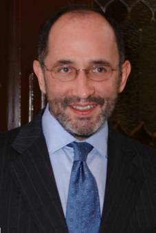

Ministro José Ramón Cossío
Díaz
Nació en México, D.F., el 26 de diciembre de 1960.
Casado.
Primaria: Colegio Simón Bolívar del Pedregal, México, D.F., 1967-1973.
Secundaria: Colegio Simón Bolívar, México, D.F., 1973-1976.
Preparatoria: Preparatoria No. 5 “José Vasconcelos”, Universidad Nacional Autónoma de México, 1976-1979.
Licenciatura: Facultad de Derecho de la Universidad de Colima, 1979-1984.
Tesis de licenciatura: “El Control de la Constitucionalidad de las Leyes en México”.
Promedio general: “10”, obteniendo el premio que otorga el Consorcio Minero “Benito Juárez-Peña Colorada”.
Maestría: En Derecho Constitucional y Ciencia Política en el Centro de Estudios Constitucionales de Madrid, de noviembre de 1986 a julio de 1987. Se obtuvo el premio anual al mejor trabajo de Derecho Constitucional, con el tema “El Estado Social y Democrático de Derecho y los Derechos Prestacionales en la Constitución Española”.
Doctorado: Facultad de Derecho de la Universidad Complutense de Madrid, 1986-1988.
Tesis doctoral: “El Estado Social y los Derechos de Prestación”, dirigida por el Catedrático Manuel Aragón Reyes.
Examen doctoral: 28 de septiembre de 1988, obteniendo la nota Summa cum laude.
Idiomas: Inglés; francés e italiano (traducción).
“Segundo curso de actualización en Derecho Electoral”, impartido en la Facultad de Derecho de la UNAM, del 1o. al 12 de febrero de 1982.
“Primer curso de capacitación sobre menores infractores”, impartido por el Instituto Nacional de Ciencias Penales en la ciudad de Colima, del 25 al 29 de julio de 1983.
“Curso de actualización sobre la Ley Federal del Trabajo”, impartido por la Coparmex en la Ciudad de México, del 11 al 13 de marzo de 1982.
“Régimen jurídico del IMSS”, dictado en la ciudad de Colima por el propio Instituto, en colaboración con la CANACO, en el mes de julio de 1983.
“IV Curso de actualización en Derecho Fiscal”, dictado en la Facultad de Derecho de la UNAM, del 28 de enero al 1o. de febrero de 1985.
Curso “Las garantías sociales en México”, impartido por el Prof. Héctor Fix-Zamudio, durante el ciclo de conferencias como miembro del Colegio Nacional, correspondiente a 1986.
Curso de “Especialización en Derecho constitucional y Ciencia Política”, impartido en el Centro de Estudios Constitucionales, en Madrid, España, en julio de 1987.
“Diez años de libertades públicas en España”, celebrado en la Universidad Internacional Menéndez-Pelayo, del 20 al 24 de julio de 1987, bajo la dirección del Prof. Francisco Rubio Llorente.
Seminario sobre “La sentencia constitucional”, dictado por el Prof. Francisco Rubio Llorente, del 16 al 19 de noviembre de 1987, en el Centro de Estudios Constitucionales de Madrid.
Seminario sobre “La eficacia jurídica del principio democrático”, impartido por el Prof. Manuel Aragón Reyes, del 11 al 14 de abril de 1988, en el Centro de Estudios Constitucionales de Madrid.
Curso de “Actualización en las materias penal, fiscal, constitucional y de amparo”, impartido del 9 de octubre al 17 de noviembre de 1989, en el Instituto de Especialización Judicial de la Suprema Corte de Justicia de la Nación.
Curso de “Actualización en Derecho Fiscal”, dictado en la Facultad de Derecho de la UNAM, del 28 de enero al 1o. de febrero de 1995.
Estancia de investigación académica en la Facultad de Derecho de la Universidad de Georgia en Atenas, durante junio y julio de 1999.
Asistió al Curso “The Public Law Institute for Federal Judges”, en Law and Economics Center of the George Masson University en Tucson, Arizona, del 20 al 26 de octubre de 2000.
Asistió al curso de “Derecho Internacional Público”, en The Hague Academy of International Law, en La Haya, Holanda, del 22 de julio al 9 de agosto de 2002.
Asistió al “Global Constitutionalism Seminar”, en Yale Law School en New Haven Connecticut, del 21 al 24 de septiembre de 2005.
Acudió al “84th Annual Meeting”, organizado por el American Law Institute en San Francisco, California, del 14 al 16 de mayo de 2007, asistiendo a diversos seminarios relativos a propiedad intelectual, derecho penal, litigio internacional, entre otros.
Realizó una estancia de investigación del 9 al 30 de julio de 2007, en el Centro de Estudios México-Estados Unidos de la Universidad de California en San Diego, donde primordialmente editó su libro intitulado “Controversias Constitucionales”. Como parte del Seminario de Verano de Estudios sobre los Estados Unidos, presentó una sesión con Margaret McKeown, Juez de la Corte de Apelación de los Estados Unidos sobre los sistemas jurídicos de México y los Estados Unidos. También fue colaborador con la Mtra. Alejandra Ríos Cáceres en un documento de trabajo del Centro de Estudios México-Estados Unidos, titulado “Gobiernos Responsables: El papel de la Suprema Corte de Justicia en la definición de las facultades legislativas de fiscalización”.
Asistió a “The Global Constitutionalism Seminar”, at Yale Law School, en New Haven, Connecticut, del 26 al 30 de septiembre de 2007.
Pasante en el bufete jurídico “De la Madrid y Asociados”, en la ciudad de Colima, de febrero de 1980 a mayo de 1984.
Socio Fundador de “Asesoría y Dirección Corporativa, S.C.”, en la ciudad de Colima, de junio de 1982 a mayo de 1984.
Instructor por contrato en el Centro Universitario de Educación Obrera de la Universidad de Colima, de enero a mayo de 1984, adquiriendo a partir de esta última fecha y hasta noviembre del mismo año, categoría de instructor de tiempo completo.
Técnico académico asociado “A” de tiempo completo en el Instituto de Investigaciones Jurídicas de la UNAM, del 15 de marzo de 1985 al 15 de octubre de 1986.
Investigador asociado “C” de tiempo completo en el Instituto de Investigaciones Jurídicas de la UNAM, del 15 de diciembre de 1988 al 16 de mayo de 1989.
Asesor de la Presidencia de la Comisión de Derechos Humanos de la H. Cámara de Diputados del H. Congreso de la Unión, del 15 de enero al 1o. de mayo de 1989.
Secretario particular del Dr. Jorge Carpizo, como Ministro de la Suprema Corte de Justicia de la Nación, del 4 de mayo de 1989 al 6 de junio de 1990.
Secretario de Estudio y Cuenta del Lic. Ulises Schmill Ordóñez, Ministro de la Suprema Corte de Justicia de la Nación, del 16 de agosto de 1990 al 31 de diciembre de 1990.
Coordinador de asesores del Ministro Ulises Schmill Ordóñez, Presidente de la Suprema Corte de Justicia de la Nación, del 1o. de enero de 1991 al 31 de diciembre de 1994.
Jefe del Departamento de Derecho del Instituto Tecnológico Autónomo de México, del 2 de enero de 1995 al 30 de noviembre de 2003.
Ministro de la Suprema Corte de Justicia de la Nación, del 1o. de diciembre de 2003 al 30 de noviembre de 2018.
Profesor en las materias de “Historia mundial contemporánea”, durante julio y agosto de 1983, e “Historia mundial contemporánea” y “moderna de occidente”, en julio y agosto de 1984, en el Instituto Tecnológico de Estudios Superiores de Monterrey, Unidad Colima.
Profesor en la materia de “Derecho laboral”, impartida en el Centro Universitario de Capacitación Obrera de la Universidad de Colima, de enero a octubre de 1984.
Profesor de “Introducción al estudio del Derecho”, en el curso propedéutico dictado en la Facultad de Derecho de la Universidad de Colima, en el verano de 1984.
Colaborador especial del Seminario “Marcos Legales de las Elecciones de 1985”, programa que realizó por encargo del Centro Universitario de Investigaciones Sociales de la Universidad de Colima, en junio de 1985.
Profesor de asignatura interino “A” en la División de Estudios de Posgrado de la Facultad de Derecho de la UNAM, de julio a octubre de 1985, en la materia “Evolución de los sistemas jurídicos contemporáneos”.
Profesor en el curso “Derecho Constitucional”, impartido a los profesores de la Escuela Nacional Preparatoria y del Colegio de Ciencias y Humanidades de la UNAM, en septiembre y octubre de 1985.
Impartió el curso “Derecho Constitucional” para los alumnos de la Licenciatura en Administración Pública, en la Universidad de Colima, durante el periodo comprendido del 15 al 19 de octubre de 1985.
Profesor en el curso de “Introducción al derecho comparado”, impartido a los profesores de la Escuela Nacional Preparatoria y del Colegio de Ciencias y Humanidades de la UNAM, en octubre de 1985.
Profesor en el curso “Evolución de los Sistemas jurídicos contemporáneos”, impartido a los profesores de la Escuela Nacional Preparatoria y del Colegio de Ciencias y Humanidades de la UNAM, en octubre de 1985.
Profesor en los cursos de “Derecho Constitucional”, dictados los días 10 y 11 de noviembre de 1988, en la Unidad Guadalajara de la Universidad Panamericana.
Profesor en la Especialidad en Derecho Constitucional de la Universidad Panamericana, los días 16, 21, 23, 28 y 30 de noviembre de 1988, en la materia “Perspectiva Constitucional”.
Impartió los temas: Facultades de las Cámaras en materia de hacienda, Facultades del Congreso de la Unión en materia de comercio entre los Estados y Facultades del Congreso de la Unión en materia de guerra y salubridad, dentro de los cursillos de Derecho Constitucional, en la Universidad Panamericana, Unidad Guadalajara, en el mes de noviembre de 1988.
Profesor de “Derecho Constitucional I”, en la Licenciatura en Derecho del ITAM, en los cursos del primer semestre (enero-junio) de cada año, de 1989 a 2003.
Profesor de “Presupuesto, contabilidad y gasto público”, de la Maestría en Políticas Públicas del ITAM, de enero a junio de 1990.
Profesor del “Seminario de Teoría del Derecho I”, en la Licenciatura en Derecho del ITAM, de agosto a diciembre de 1990 y de agosto a diciembre de 1995 al año de 2003.
Impartió el tercer módulo “Ideas e instituciones jurídicas”, en el Diplomado “Ideas e Instituciones de México”, llevado a cabo en el Instituto Tecnológico Autónomo de México, en octubre de 1991.
Profesor en el curso de “Derecho y Economía”, de la Maestría en Gobierno y Asuntos Públicos de la Facultad Latinoamericana de Ciencias Sociales (FLACSO), Sede México, en noviembre y diciembre de 1993 y enero y febrero de 1994.
Investigador honorario del Instituto de Investigaciones Jurídicas de la UNAM, de mayo de 1989 a diciembre de 1994.
Profesor titular de tiempo completo en el Instituto Tecnológico Autónomo de México, a partir de enero de 1995, impartiendo las materias de “Teoría del Derecho I”, “Derecho Constitucional” y “Metodología Jurídica I”.
Profesor en la Especialidad en Derecho Constitucional y Amparo, con los temas: El amparo indirecto y El amparo contra leyes, dentro de la materia “Teoría del juicio de amparo”, impartidos en la Universidad Panamericana, Sede Guadalajara, durante los días 26 y 27 de abril y 3 y 4 de mayo de 1996.
Profesor numerario en el Instituto Tecnológico Autónomo de México, a partir del día 15 de mayo de 1999.
Profesor numerario 2-C en el Instituto Tecnológico Autónomo de México, a partir de agosto de 2001.
Profesor afiliado de la Facultad de Derecho y Criminología de la Universidad Autónoma de Nuevo León, a partir del 28 de agosto de 2003.
Profesor de asignatura, impartiendo la materia de “Derecho Constitucional” en el Instituto Tecnológico Autónomo de México, a partir de enero de 2005.
Participó en el seminario que organizó la Dirección General de Comunicación Social de la Suprema Corte de Justicia de la Nación “Actualización para Periodistas”, con el tema 3, Cómo se leen las sentencias, llevado a cabo en la Hacienda Cocoyoc de Morelos, durante los días 25 y 26 de agosto de 2005.
Integrante del grupo de tutores del Programa de Maestría y Doctorado en Filosofía de la Universidad Nacional Autónoma de México, a partir del 23 de junio de 2005.
“El Control del Poder Legislativo en México”, de Carla Huerta Ochoa, presentando el examen profesional el 29 de marzo de 1990, en el Instituto Tecnológico Autónomo de México.
“Fundamentos del Sistema de Fuentes Jurídicas”, de Óscar Alberto Margain Pitman, titulándose el 12 de junio de 1990, en el Instituto Tecnológico Autónomo de México.
“Micro, pequeña y mediana industria, una forma de activar la economía nacional”, de Enrique Navarro Isla, presentando el examen profesional el 14 de junio de 1991, en el Instituto Tecnológico Autónomo de México.
“Incidente de inejecución de sentencias de amparo respecto del Ejecutivo”, de Mariana Mureddu Gilabert, quien presentó su examen profesional el 12 de marzo de 1992, en el Instituto Tecnológico Autónomo de México.
“Análisis sobre el Sistema Jurídico del Tratado de Libre Comercio”, de Marcela Serrano Salas, llevándose a cabo su examen profesional el 18 de junio de 1992, en el Instituto Tecnológico Autónomo de México.
“El Derecho a la Jurisdicción en México”, de Zabel Pineda Antúnez, quien se tituló el 19 de junio de 1992, en el Instituto Tecnológico Autónomo de México.
“La Mutación Constitucional en México”, de Ingrid Esther Krause Mantilla, llevándose a cabo el examen profesional el 8 de julio de 1992, en el Instituto Tecnológico Autónomo de México.
“Evasión Fiscal e Ilícito Tributario”, de Luis Fernández Tovar, quien presentó su examen el 25 de junio de 1993, en el Instituto Tecnológico Autónomo de México.
“La Nueva Legislación Electoral Mexicana: Antecedentes y Contenido”, de Javier Tejado Dondé, presentando su examen profesional el 4 de febrero de 1994, en el Instituto Tecnológico Autónomo de México.
“Los Acuerdos, Decretos y Circulares del Presidente de la República y su Ubicación en el Ordenamiento Jurídico”, de Ana Elena Fierro Ferraez, llevándose a cabo el examen profesional el 9 de junio de 1994, en el Instituto Tecnológico Autónomo de México.
“Algunos Aspectos de la Interpretación Constitucional por la Suprema Corte de Justicia de la Nación”, elaborada por Raúl Manuel Mejía Garza, presentando el examen profesional el 23 de septiembre de 1994, en el Instituto Tecnológico Autónomo de México.
“Consideraciones sobre el Consejo de la Judicatura Federal”, de Layda María Esther Negrete Sansores, quien presentó su examen profesional el 18 de agosto de 1995, en el Instituto Tecnológico Autónomo de México.
“La Ley Federal de Competencia en México”, presentada por Fernando Agiss Bitar, llevándose a cabo el examen profesional el 5 de octubre de 1995, en el Instituto Tecnológico Autónomo de México.
“El Artículo 28 Constitucional en Materia de Competencia Económica, Monopolios y Libre Concurrencia”, de Luis Alberto Martínez Pérez, llevándose a cabo el examen profesional el 9 de agosto de 1996, en el Instituto Tecnológico Autónomo de México.
“La Derogación de las Normas Constitucionales”, de Ana Sofía Charvel Orozco, quien presentó su examen profesional el 13 de diciembre de 1996, en el Instituto Tecnológico Autónomo de México.
“Procedencia del Juicio de amparo contra las Leyes cuando ocurre un cambio de situación Jurídica”, de Nuriella Fernández Navarro, llevándose a cabo su examen profesional el 19 de agosto de 1997, en el Instituto Tecnológico Autónomo de México.
“Servicio Civil de Carrera en el Congreso de la Unión”, presentada por Bernardo Altamirano Rodríguez, llevándose a cabo su examen profesional el 4 de diciembre de 1997, en el Instituto Tecnológico Autónomo de México.
“Regulación Jurídica de la Libertad de Expresión en el Internet”, de Alexandro Manuel Padrés Jiménez, presentando su examen profesional el 20 de febrero de 1998, en el Instituto Tecnológico Autónomo de México.
“Los archivos públicos y el derecho a la información”, de la señorita Alejandra Núñez Luna, quien presentó su examen profesional el 31 de enero de 2001, en el Instituto Tecnológico Autónomo de México.
“Las Controversias Constitucionales y el Municipio. Algunas propuestas para el Estado de Oaxaca”, de Alejandro Murat Hinojosa, quien presentó su examen profesional el 3 de mayo de 2001, en el Instituto Tecnológico Autónomo de México.
“La Condición Jurídica del Control Parlamentario”, de Roberto Gil Zuarth, quien presentó su examen profesional el 23 de mayo de 2001, en el Instituto Tecnológico Autónomo de México.
“Medios alternativos para la resolución de conflictos en el Sistema Financiero Mexicano”, de Ana Laura Prieto Meza, quien presentó su examen profesional el 1o. de junio de 2001, en el Instituto Tecnológico Autónomo de México.
Asesor del Lic. José Garibaldi en el programa de becas de investigación otorgada por el Banco Mundial “Robert S. McNamara Fellowships Program”, en áreas relacionadas al desarrollo económico, durante el periodo 2000-2001, con la investigación Institutional Analysis of the Mexican Civil Service.
“La inserción de la Economía en el Derecho: el caso de la Mejora Regulatoria”, de Rodrigo Antonio Quintana Kawage, quien presentó su examen profesional el 2 de mayo de 2002, en el Instituto Tecnológico Autónomo de México.
“Algunas restricciones al ejercicio del derecho de voto en México”, de Samuel Martínez Aceves y América Mirna Josefina Aurora Giménez Valdés Román, quienes presentaron su examen profesional el 29 de mayo de 2002, en el Instituto Tecnológico Autónomo de México.
“México, regulación y compromisos ante el cambio climático”, de Paulina Fabara Laphan, quien presentó su examen profesional el 24 de octubre de 2003, en el Instituto Tecnológico Autónomo de México.
“Los votos particulares en las sentencias de controversias constitucionales”, de Moisés Brito Ramírez, quien presentó su examen profesional el 7 de noviembre de 2003, en el Instituto Tecnológico Autónomo de México.
“Derecho y narrativa: la sentencia de la Suprema Corte sobre aborto”, de Alma Luz Beltrán y Puga Murai, quien presentó su examen profesional el 2 de septiembre de 2004, en el Instituto Tecnológico Autónomo de México.
“La legitimidad democrática de la justicia electoral mexicana”, de Jorge Emilio Sánchez Cordero Grossmann, quien presentó su examen profesional el 9 de diciembre de 2004, en el Instituto Tecnológico Autónomo de México.
“La Suprema Corte de Justicia de la Nación: órgano legitimado para ejercer el control previo de la constitucionalidad de los tratados internacionales en México. Una propuesta de reforma”, de Mónica Castillejos Aragón, quien presentó su examen profesional el 1o. de abril de 2005, en el Instituto Tecnológico Autónomo de México.
“El esquema de política fiscal en México: una propuesta de eficacia normativa y de regla fiscal basada en un balance estructural”, de José Francisco Ursua Remírez, quien presentó su examen profesional el 5 de agosto de 2005, en el Instituto Tecnológico Autónomo de México. Por este trabajo se obtuvo el 2o. lugar del Premio Banamex de Economía 2005, así como el 1er. lugar del XI Premio de Investigación ExITAM (Licenciatura en Derecho) y una Mención en el XI Premio de Investigación ExITAM (Licenciatura en Economía).
“Órganos mínimos en los partidos políticos para tutelar los derechos de los militantes”, de Gabriela Figueroa Salmorán, quien presentó su examen profesional el 30 de septiembre de 2005, en el Instituto Tecnológico Autónomo de México.
“Consideraciones sobre Técnica Legislativa y apoyo Parlamentario en el Congreso Mexicano”, de Julián Levin Balcells, quien presentó su examen profesional el 28 de abril de 2006, en el Instituto Tecnológico Autónomo de México.
Coasesor de tesis “La Suprema Corte y la desigualdad en el acceso a la justicia: ¿a quién sirve el amparo en materia fiscal?”, de Ilda Gabriela Enrigue González, quien presentó su examen profesional el 22 de junio de 2006, en el Instituto Tecnológico Autónomo de México. Por este trabajo se obtuvo el 2o. lugar del Premio Banamex de Economía 2006, así como el 1er. lugar del XII Premio de Investigación ExITAM (Licenciatura en Economía).
“Acerca de la motivación legislativa”, de Luisa Conesa Labastida, quien presentó su examen profesional el 8 de marzo de 2007, en el Instituto Tecnológico Autónomo de México.
Asesor de tesis “Un obstáculo que desvanecer en la Justicia Constitucional mexicana: el fenómeno de la irretroactividad de los fallos que ponen fin a las controversias constitucionales y acciones de inconstitucionalidad”, de David García Sarubbi, quien presentó su examen profesional en el Instituto Tecnológico Autónomo de México, el 26 de abril de 2007.
“Interés Legítimo como presupuesto de procedencia del Juicio de Amparo”, de Shelby Cánovas Pérez Abreu, quien presentó su examen profesional en el Instituto Tecnológico Autónomo de México, el 15 de noviembre de 2007.
A partir de noviembre de 2006, proyecto para licenciatura “Control Jurisdiccional del Legislador: un paso de lo formal a lo sustantivo”, de Gabino González Santos, estudiante del Instituto Tecnológico Autónomo de México.
A partir de septiembre de 2008, proyecto para licenciatura “El control jurisdiccional material de las reformas constitucionales”, de Diego Francisco Durán de la Vega, estudiante del Instituto Tecnológico Autónomo de México.
“Propuesta de especialización por materia para los órganos jurisdiccionales del Poder Judicial de la Federación”, de Miguel Ángel Vega García, cuyo examen para obtener el grado de Maestro en Políticas Públicas fue realizado el 6 de octubre de 2000, en el Instituto Tecnológico Autónomo de México.
“El Impuesto sobre Nóminas en relación con la Suprema Corte de Justicia de la Nación”, de Jorge Luis Revilla de la Torre, quien presentó su examen para obtener el grado de Maestro en Derecho Administrativo y de la Regulación, en el Instituto Tecnológico Autónomo de México, el 22 de septiembre de 2006.
A partir de enero de 2006, proyecto para la Maestría en Derecho Fiscal “Federalismo Fiscal y el problema de su aplicación”, de Luis Felipe Dorantes Chávez, quien la está cursando en la Universidad Panamericana.
A partir de abril de 2008, proyecto de la investigación para la Maestría en Derecho Procesal Constitucional “El Derecho Procesal Constitucional: disciplina autónoma sin desarrollo como Rama de la Ciencia Procesal. Análisis de su contenido (Teórico-Doctrinario-Dogmático), a partir de la Ciencia del Derecho. Descripción y Examen Semiótico y Lógico”, de la señorita Erika Yazmín Zárate Villa, quien la está cursando en la Universidad Panamericana.
“Poder Soberano y Autonomía de lo Político en Carl Schmitt”, de la Maestra Antonella Attili Cadamone, quien presentó su examen doctoral en Filosofía el 18 de marzo de 2002, en la División de Estudios de Posgrado de la UNAM.
“La Facultad Reglamentaria del Poder Ejecutivo”, del Lic. Manlio Fabio Casarín León, quien presentó su examen doctoral en Derecho Público el 26 de junio de 2002, en el Instituto de Investigaciones Jurídicas de la Universidad Veracruzana.
“Los efectos de la justicia sobre el proceso político... Cortes Supremas, gobierno y democracia en Argentina y México”, de Karina Mariela Ansolabehere Sesti, quien presentó su examen doctoral el 12 de agosto de 2003, en la Facultad Latinoamericana de Ciencias Sociales, sede académica de México.
“Los conflictos intermunicipales por límites territoriales en el Estado de Veracruz”, de Marisol Luna Leal, quien presentó su examen doctoral el 25 de mayo de 2007, en el Instituto de Investigaciones Jurídicas de la Universidad Veracruzana.
Proyecto para obtener el grado de Doctor por la Facultad de Derecho de la Universidad Autónoma de Madrid, con el tema “Las transformaciones del principio de Legalidad en México”, del Lic. Raúl Manuel Mejía Garza, a partir de 1998.
Proyecto por investigación para obtener el grado de Doctor en la División de Estudios de Posgrado de la UNAM, con el tema “La Controversia Constitucional en el Discurso Judicial”, de la Lic. María Amparo Hernández Chong Cuy, a partir de febrero de 2004.
Proyecto por investigación para obtener el grado de Doctora en la División de Estudios de Posgrado de la UNAM, con el tema “El Juicio de Amparo Directo en el Contexto del Federalismo”, de la Lic. Rosalba Rodríguez Mireles, a partir de diciembre de 2004.
Proyecto por investigación para obtener el grado de Doctor en la División de Estudios de Posgrado de la UNAM, con el tema “Creación y Producción Normativa en México”, de Alfredo Orellana Moyao, a partir de septiembre de 2006.
Proyecto por investigación para obtener el grado de Doctor en la División de Estudios de Posgrado de la UNAM, con el tema “El régimen constitucional de la Ley de Ingresos y del Presupuesto de Egresos de la Federación”, de Germán Andrés Fernández Aguirre, a partir del 30 de enero de 2007.
Proyecto por investigación para obtener el grado de Doctor en la División de Estudios de Posgrado de la UNAM, con el tema “La función del Derecho como instrumento regulador del uso de la Violencia en la construcción del Estado Democrático y del Orden Político en un Mundo Globalizado”, de Gerardo Felipe Laveaga Rendón, a partir de agosto de 2007.
Proyecto por investigación para obtener el grado de Doctor en la División de Estudios de Posgrado de la UNAM, con el tema “La introducción del juicio de amparo en el sistema jurídico francés”, de Ana Ruth Herrera Gómez, a partir del 9 de octubre de 2007.
Proyecto por investigación para obtener el grado de Doctora en la División de Estudios de Posgrado de la UNAM, con el tema “Jurisdicción Constitucional y Ciencia”, de Lorena Goslinga Remírez, a partir del 3 de marzo de 2008.
Proyecto por investigación para obtener el grado de Doctora en la División de Estudios de Posgrado de la UNAM, con el tema “El Orden Jurídico Municipal”, de Mariana Mureddu Gilbert, a partir del 3 de marzo de 2008.
Proyecto por investigación para obtener el grado de Doctor en la División de Estudios de Posgrado de la UNAM, con el tema “El Principio de Mayor Beneficio: Hacia la Efectividad de los Derechos Humanos”, de Miguel Enrique Sánchez Frías, a partir del 3 de marzo de 2008.
Proyecto por investigación para obtener el grado de Doctor en la División de Estudios de Posgrado de la UNAM, con el tema “Responsabilidad contractual de las asociaciones religiosas”, de Fernando Alberto Casasola Mendoza, a partir del 3 de marzo de 2008.
Miembro del jurado que examinó la tesis de Maestría de la alumna C. Aurelia Francisca Castro Valdez, denominada “Los límites constitucionales de las libertades de expresión e información”, el 2 de julio de 2003, en la Universidad Iberoamericana.
Primer suplente del jurado que examinó la tesis titulada “Las leyes orgánicas constitucionales para México” que, para obtener el grado de Doctor en Derecho, defendió Ricardo Sepúlveda Iguiniz el 25 de abril de 2005, en la Universidad Panamericana.
Sinodal propietario en el examen de Ricardo Antonio Silva Díaz, quien presentó la tesis “Un caso del principio de seguridad jurídica en la administración de justicia”, para obtener su título profesional el 11 de mayo de 2005, en la Escuela Libre de Derecho.
Miembro del Comité de Tesis de Doctorado de la Mtra. Tania Gabriela Rodríguez Huerta, quien realiza una investigación sobre “La evolución de Derecho de los Tratados a través de la práctica de los Estados”, bajo el programa de Posgrado en Derecho de la Universidad Nacional Autónoma de México, a partir de agosto de 2006.
Sinodal en el examen que, para obtener el grado de Maestra en Derecho, presentó el 9 de agosto de 2007 la Lic. Carina Xóchitl Gómez Fröde, con la tesis “Sistemática del Derecho Procesal Familiar”, que realizó bajo el programa de Posgrado de Derecho de la Universidad Nacional Autónoma de México.
Miembro del tribunal de tesis doctoral presentada por Doña Josefina Cortés Campos, con el título “La transformación del Estado social en materia de prestación pública de servicios: los sectores eléctricos español y mexicano”, realizada el 22 de febrero de 2002, en la Universidad Carlos III de Madrid.
Miembro del tribunal en la defensa de la disertación “Judicial Reform and Democratization: Mexico in the 1990’s”, presentada por Silvia Inclán Oseguera, en la Universidad de Boston, el 1o. de mayo de 2003.
Vocal del tribunal que juzgó la tesis doctoral “La Eficacia Interna de las Sentencias del Tribunal Europeo y de la Corte Interamericana de Derechos Humanos”, de D. Fernando Silva García, del Departamento de Derecho Público del Estado, en la Universidad Carlos III de Madrid, el 19 de diciembre de 2005.
Participante con la Academia Mexicana de Ciencias en el X Verano de la Investigación Científica, realizado del 3 de julio al 25 de agosto de 2000, recibiendo a tres jóvenes estudiantes.
Participó en el XVI Verano Científico, realizado del 26 de junio al 25 de agosto de 2006, recibiendo del 11 de julio al 31 de agosto del mismo año, a Ivonne Yenissey Rojas, proveniente de la Universidad Autónoma de Sinaloa, Campus Mazatlán, quien elaboró un estudio acerca de “La proporcionalidad de las penas”, bajo su supervisión y asesoría.
Del 30 de mayo al 20 de junio de 2007, asesoró a Patricia Yaneth Guevara López, pasante de la carrera de derecho en la Universidad de Monterrey, en la investigación titulada “La Corte Penal Internacional. Su estatuto de Roma y la Reforma al 21 Constitucional”, la cual constituirá su trabajo de tesis para obtener su título.
Participó en el XVIII Verano de la investigación Científica, del 23 de junio al 22 de agosto de 2008, recibiendo y asesorando a las señoritas: María Berenice Gómez Ramos, alumna de la Licenciatura en Derecho de la Facultad de Derecho Mazatlán, dependiente de la Universidad Autónoma de Sinaloa, quien llevó a cabo la investigación denominada “La Prueba en el Proceso Penal”; así como a la señorita Adilene Rivas Buelna, estudiante de la carrera de Derecho y Ciencias Sociales en la Universidad de Occidente, Unidad Guasave, quien realizó el trabajo denominado “La suplencia de la deficiencia de la queja y los menores de edad: ámbito de protección”.
Discurso de premiación a nombre de las personas que recibieron el premio de investigación 1998, que otorga la Academia Mexicana de Ciencias, en la residencia oficial de Los Pinos, el 29 de septiembre de 1999.
Discurso pronunciado con motivo del Quinto Aniversario de la Comisión Nacional de Arbitraje Médico, el 20 de julio de 2001.
Discurso pronunciado en la comparecencia verificada el 27 de noviembre de 2003 ante el Senado de la República, en el proceso de nombramiento para ocupar el cargo de Ministro de la Suprema Corte de Justicia de la Nación.
Palabras pronunciadas en la Ceremonia de Recepción como Ministro de la Suprema Corte de Justicia de la Nación, el 9 de diciembre de 2003.
Palabras pronunciadas con motivo de la ceremonia de bienvenida de la Ministra a la Suprema Corte de Justicia de la Nación, la Lic. Margarita Beatriz Luna Ramos, el 2 de marzo de 2004.
Palabras pronunciadas durante la presentación del Reglamento para la Aplicación de la Ley Federal de Transparencia y Acceso a la Información Pública Gubernamental, en la Suprema Corte de Justicia de la Nación, el 30 de marzo de 2004.
Palabras pronunciadas en la Universidad de Colima, para agradecer el haber sido honrado con la Medalla al Mérito Universitario Emisión 2003 “General Lázaro Cárdenas del Río”, el 30 de abril de 2004.
Discurso pronunciado en la ceremonia que se realizó con motivo de la presentación de la “Propuesta para la Reforma del Estado”, organizada por la Asociación Nacional para la Reforma del Estado, llevada a cabo en el Casino Campo Marte, el 24 de enero de 2005.
Discurso pronunciado en la ceremonia inaugural del “Curso de Especialización sobre Derechos de la Niñez”, llevada a cabo en el Edificio Sede de la Suprema Corte de Justicia de la Nación, el 1o. de marzo de 2005.
Discurso pronunciado en la ceremonia de entrega del Galardón “Fuerza Jurídica”, llevada a cabo en el “Espacio Escénico Juchimán” del Instituto Juárez de la Universidad Juárez Autónoma de Tabasco, el 10 de marzo de 2006.
Informe de labores presentado como Presidente de la Primera Sala de la Suprema Corte de Justicia de la Nación, en diciembre de 2006.
Representante por la Facultad de Derecho de la Universidad de Colima en la “Primera Reunión de Consulta Popular sobre la impartición de Justicia”, celebrada en la ciudad de Colima, en mayo de 1983, con la ponencia “Problemática de los recursos en el derecho procesal civil”.
Conferenciante en la Escuela de Ciencias Políticas de la Universidad de Colima, llevada a cabo del 15 al 19 de octubre de 1984, sobre distintos temas de Derecho Constitucional.
Ponencia “Consideraciones sobre la legislación en materia electoral y de responsabilidades de los servidores públicos en el Estado de Colima, 1977-1985”, en el Seminario: La Democracia Emergente en el Estado de Colima, organizado por el Centro de Investigaciones Interdisciplinarias en Humanidades de la UNAM, celebrado el 7 y 8 de marzo de 1985, en la capital del Estado.
Ponente con el tema “Evolución de los Sistemas jurídicos contemporáneos”, dentro del “Programa permanente de Formación de Investigadores”, correspondiente al 7o. Seminario: Evolución de los Sistemas Jurídicos Contemporáneos, impartido en el Instituto de Investigaciones Jurídicas de la Universidad Juárez de Durango, los días 1o. y 2 de noviembre de 1985.
Ponente con el tema “Poder Legislativo y Planeación en México” y secretario de mesa en el “III Congreso Iberoamericano de Derecho Constitucional”, celebrado en el Instituto de Investigaciones Jurídicas de la UNAM, del 4 al 8 de noviembre de 1985.
Ponente en el “Coloquio Iberoamericano de Derecho Electoral”, celebrado en el Instituto de Investigaciones Jurídicas de la UNAM, del 18 al 22 de agosto de 1986, con el trabajo “Periodización de la legislación electoral mexicana”.
Conferencia sobre el tema “Garantías Sociales y Derecho Comparado”, impartida el 13 de septiembre de 1989, durante la I Semana Jurídica del Instituto Tecnológico Autónomo de México.
Conferencia impartida el 22 de abril de 1991 en la Escuela Libre de Derecho, sobre el tema “Las Atribuciones no Jurisdiccionales de la Suprema Corte de Justicia de la Nación”.
Ponente con el trabajo “Las Instituciones Políticas y la Modernización”, dentro del Diplomado “La modernización económica y los derechos de los trabajadores”, celebrado en la Universidad Obrera de México “Vicente Lombardo Toledano”, del 13 de mayo al 15 de agosto de 1991.
Conferencia impartida el 15 de octubre de 1991 en el Instituto Tecnológico Autónomo de México, sobre el tema “Las atribuciones extrajurisdiccionales de la Suprema Corte de Justicia de la Nación”, en el marco de la III Semana Jurídica.
Conferencia impartida el 28 de febrero de 1992 en la Universidad Autónoma de Chiapas, sobre el tema “El Derecho Constitucional como objeto de estudio científico”.
Conferencia impartida el 29 de febrero de 1992 en el Instituto de Estudios Superiores de Chiapas, sobre el tema “Las reformas constitucionales y la modernización del Estado”.
Conferencia impartida el 20 de mayo de 1992 en el Tribunal Federal Electoral, sobre el tema “El Poder Judicial en México”.
Conferencia impartida el 28 de agosto de 1992 en la Facultad de Derecho de la UNAM, sobre el tema “Las Atribuciones no Jurisdiccionales de la Suprema Corte de Justicia”.
Ponente con el tema “La defensa de la Constitución”, en el Diplomado “Juicios de Amparo” de la Universidad Iberoamericana-Laguna, celebrado en la ciudad de Torreón, Coahuila, el 5 de septiembre de 1992.
Coordinador del Diplomado “Juicios de Amparo” en la Universidad Iberoamericana-Laguna, con un total de 18 sesiones de ocho horas cada una, con fecha de inicio el 5 de septiembre de 1992 y fecha de término el 15 de mayo de 1993, llevado a cabo en la ciudad de Torreón, Coahuila.
Conferencia impartida el 14 de noviembre de 1992 en la Facultad de Derecho de la Universidad Autónoma de Querétaro, sobre el tema “Las Atribuciones no Jurisdiccionales de la Suprema Corte de Justicia”.
Conferencia impartida el 23 de abril de 1993 en la División Académica de Ciencias Sociales y Humanidades de la Universidad Juárez Autónoma de Tabasco, sobre el tema “Las Atribuciones no Jurisdiccionales de la Suprema Corte de Justicia”.
Coordinador académico del diplomado universitario en “Amparo” en la Universidad Iberoamericana, con un total de 24 sesiones de cuatro horas cada una, con fecha de inicio el 15 de mayo y fecha de término el 6 de noviembre de 1993, llevado a cabo en la Ciudad de México, D.F.
Ponente del diplomado universitario en “Amparo” en la Universidad Iberoamericana, con el tema “El Poder Judicial”, el 15 de mayo de 1993, celebrado en la Ciudad de México, D.F.
Ponente en el Seminario “Hacia una Nueva era en la Impartición de Justicia”, de la Escuela de Derecho de la Universidad Panamericana, celebrado en la ciudad de Guadalajara, Jalisco, el 21 de mayo de 1993, con el tema ¿Qué hace la Suprema Corte además de dictar Sentencias?
Participante en el programa de Visitantes Extranjeros, organizado por el Departamento de Estado de los Estados Unidos de América, en los meses de septiembre de los años 1993, 1995 y 1996.
Ponente en el ciclo de mesas redondas “La Procuración de Justicia. Problemas, Retos y Perspectiva”, organizado por la Procuraduría General de la República, con el tema “Estado de Derecho y la Lucha Contra la Impunidad”, celebrado el 5 de octubre de 1993.
Coordinador académico del diplomado universitario en Amparo, llevado a cabo en la Universidad Iberoamericana, el 4 de marzo de 1994.
Impartió la ponencia “El Poder Judicial” en la Universidad Iberoamericana, el 4 de marzo de 1994.
Ponente en el foro “20 Compromisos para la Democracia”, organizado por el Instituto Tecnológico Autónomo de México, celebrado el 8 de marzo de 1994.
Ponente en el Primer Congreso de la Asociación Latinoamericana y del Caribe de Derecho y Economía, con el tema “Análisis Económico del Derecho Anglosajón vs. del Derecho de Justiniano”, celebrado el 2 de febrero de 1995.
Conferencia de prensa impartida por el Comité Mexicano del Agua y la Ciudad de México; en la que fueron presentados los libros “El agua y la Ciudad de México: mejorando la sustentabilidad” y “Mexico City’s water supply: improving the outlook for sustainability”, el 20 de marzo de 1995.
Conferenciante en el tema “Perfil del Abogado Mexicano”, dentro del Primer Simposium Interuniversitario “El Estado de Derecho Mexicano: Actualidad y Perspectiva”, celebrado en la Ciudad de México, el 29 de marzo de 1995.
Conferencia impartida en el Tribunal Superior de Justicia del Estado de Tabasco, el 21 de abril de 1995, sobre “El Nuevo artículo 105 Constitucional”.
Coordinador del Seminario “El Derecho Constitucional como eje de los cambios Políticos y Sociales”, celebrado en el Instituto de Investigaciones Jurídicas de la Universidad Veracruzana y de la UNAM, del 26 al 30 de junio de 1995.
Seminario ITAM/IIJ, sobre “El Federalismo Judicial”, impartido el 7 de julio de 1995, en las instalaciones del plantel Santa Teresa del ITAM.
Coordinador del Seminario “La Defensa de la Constitución”, impartido los días 25 y 26 de agosto de 1995, y Conferencia sobre las “Similitudes y Diferencias entre las Controversias Constitucionales y las Acciones de Inconstitucionalidad”, dictada el día 25.
Conferencia impartida el 6 de octubre de 1995 en el V Seminario Eduardo García Máynez, conjuntamente con el Dr. Luis Raigosa Sotelo, sobre el tema “La Interpretación del Derecho”, en el Instituto Tecnológico Autónomo de México, en copatrocinio con la Escuela Libre de Derecho y la Facultad de Derecho de la UNAM.
Conferencia impartida el 27 de octubre de 1995 en la Universidad Olmeca de Villahermosa, Tabasco, con el tema “La Constitución y su Análisis Jurídico”.
Conferencia “La extradición, aspectos internacionales y nacionales”, llevada a cabo en el Instituto de Investigaciones Jurídicas de la UNAM, el 8 de noviembre de 1995.
Expositor en el Seminario “Reformas Fiscales 1996”, impartido en el plantel Santa Teresa del Instituto Tecnológico Autónomo de México, los días 5 y 6 de enero de 1996.
Participó en la segunda parte “La reforma del Estado: opciones y tendencias”, del Seminario Internacional sobre la Reforma del Estado, como comentarista de la ponencia del Dr. Humberto Quiroga Lavié “La Reforma del Estado en Argentina”, el 1o. de febrero de 1996.
Participó en el Primer Congreso anual “Justicia con Eficiencia”, como coordinador del tema: “Fronteras del Análisis Económico del Derecho”, celebrado el 17 de febrero de 1996, organizado por la Asociación Mexicana de Derecho y Economía.
Moderador en el II Simposium Interuniversitario de Derecho “Hacia el 2000... El Derecho en México”, con el tema “Reformas Constitucionales. Consejo de la Judicatura”, realizado el 27 de marzo de 1996.
Conferencista en el Seminario para el Análisis de la Ley Orgánica del Poder Judicial Federal, organizado por el Instituto de Investigaciones Jurídicas de la UNAM, con el tema “La Carrera Judicial”, llevado a cabo el 28 de marzo de 1996, así como participante en la Mesa Redonda-Debate sobre “Análisis de la Ley Orgánica del Poder Judicial”, el 1o. de abril de 1996.
Mesa Redonda “Gobierno y Administración del Poder Judicial”, en el marco del Seminario Internacional “Justicia y Sociedad en México”, realizado en la Cámara de Senadores, del 8 al 11 de julio de 1996.
Organizador del Seminario “Resolución alternativa de disputas”, los días 16 y 17 de octubre de 1996. ITAM/Embajada Americana.
Dictador de la Conferencia magistral “Apoyo Económico al Poder Judicial del Fuero Común”, en la Comisión Nacional de Tribunales Superiores de Justicia, llevado a cabo en Xalapa, Veracruz, en noviembre de 1996.
Ponente del tema “El Arbitraje en los Conflictos Derivados de la Relación Médico-Paciente”, en la Mesa denominada “La Conamed y perspectivas para su desarrollo”, en el Simposio: Por la Calidad de los Servicios Médicos y la Mejoría de la Relación Médico-Paciente, organizado por la Comisión Nacional de Arbitraje Médico, llevado a cabo en el Colegio de Ingenieros Civiles de México, A.C., durante los días 9, 10 y 11 de diciembre de 1996.
Conferencista y Coordinador con el Dr. Rodolfo Vázquez, del Seminario “Nociones de Derecho y Aspectos Jurídicos de la Conamed”, con el tema ¿Qué es el derecho?, realizado del 21 de enero al 20 de marzo de 1997.
Participante en la Mesa Redonda “Constitución y Derecho Indígena”, revista “Este País”, llevada a cabo el 18 de febrero de 1997.
Conferencia “Diversos Aspectos de las Comunidades Indígenas”, llevada a cabo en el Instituto Tecnológico Autónomo de México el 11 de marzo de 1997, y organizada por los Departamentos Académicos de Derecho y Estudios Generales.
Moderador en el Primer Congreso Interuniversitario de Derecho, con el tema “Artículo 105 Constitucional”, llevado a cabo el 18 de marzo de 1997, en la Facultad de Medicina de la Universidad Nacional Autónoma de México.
Participante en el Segundo Congreso Anual “En los Albores del Nuevo Siglo, Justicia con Eficiencia”, en la Asociación Mexicana de Derecho y Economía, A.C., los días 4 y 5 de abril de 1997.
Mesa Redonda “Derecho Indígena”, organizada por la revista “Este País”, el 7 de mayo de 1997.
Conferencista en la Semana del Abogado, en la Universidad Autónoma de Campeche, a través de la Facultad de Derecho y la Sociedad de Alumnos 1996-1998, el 9 de junio de 1997.
Expositor en el Ciclo de Conferencias Elecciones y Democracia, con el tema “Cambio Democrático, Cambio Constitucional”, organizado por la Presidencia Municipal y el H. Ayuntamiento de Chihuahua, el 20 de junio de 1997, en Chihuahua, Chih.
Ponente en el VII Congreso de Historia del Derecho Mexicano, celebrado del 14 al 18 de septiembre de 1997, en el Instituto de Investigaciones Jurídicas de la UNAM.
Conferencia “Las Controversias Constitucionales”, llevada a cabo en la Universidad Iberoamericana, el 22 de octubre de 1997.
Conferencia sobre “Control Constitucional”, realizada en la Universidad Autónoma Benito Juárez de Oaxaca, los días 24 y 25 de octubre de 1997.
Ponente con el tema “El Paradigma de los Estudios Constitucionales en México. Un caso de Sociología del Conocimiento Jurídico”, dentro del apartado 1o. denominado “La Constitución como Paradigma”, en el Simposio Internacional “El Significado actual de la Constitución”, organizado por el Senado de la República y el Instituto de Investigaciones Jurídicas de la UNAM, del 17 al 20 de noviembre de 1997.
Plática “El Derecho y su relación con la sociedad”, en el Foro “Ciencia-Sociedad: Vinculación con el Sector Productivo”, organizado por la Academia Mexicana de Ciencias, el Consejo Consultivo de Ciencias de la Presidencia de la República y el Consejo Nacional de Ciencia y Tecnología, llevado a cabo en Cocoyoc, Morelos, del 23 al 25 de noviembre de 1997.
Mesa Redonda “Autonomías”, organizada por la revista “Este País”, el 11 de febrero de 1998.
Conferencia “Chiapas, Democracia, Marco Jurídico y Realidad”, llevada a cabo el 18 de febrero de 1998, organizada por el Departamento Académico de Estudios Generales del Instituto Tecnológico Autónomo de México.
Conferencia “La Visión Económica de Derecho”, llevada a cabo en el Instituto de Especialización Judicial en el Estado de Querétaro, los días 20 y 21 de febrero de 1998.
Participante en los seminarios: Agendas de gobierno y desafíos de gobierno sociopolíticos en América Latina, llevado a cabo en Cuernavaca, Morelos, los días 2 y 4 de marzo de 1998, organizado por el Instituto de Investigaciones Sociales de la UNAM.
Ponente en el Tema II “La dinámica de las identidades culturales en el contexto de la globalización (etnia, nación y Estado), en el Seminario “Escenarios futuros: agendas de gobierno y desafíos sociopolíticos en América Latina”, llevado a cabo los días 2, 3 y 4 de marzo de 1998, en el Hotel Maximiliano y Carlota en la ciudad de Cuernavaca, Morelos, y organizado por el Instituto de Investigaciones Sociales de la UNAM, la Facultad Latinoamericana de Ciencias Sociales (FLACSO-Sede México) y el Centro de Investigación y Docencia Económicas (CIDE).
Participante con el Tema II “Las identidades culturales en el contexto de la globalización: etnias, nación y estado”, en el ciclo de mesas redondas “Escenarios futuros: agendas de gobierno y desafíos sociopolíticos en América Latina”, organizado por el Instituto de Investigaciones Sociales de la UNAM, la Facultad Latinoamericana de Ciencias Sociales (FLACSO-Sede México) y el Centro de Investigación y Docencia Económicas (CIDE), llevado a cabo los días 5 y 6 de marzo de 1998, en el Auditorio Mario de la Cueva, en la Torre II de Humanidades de Ciudad Universitaria (este evento es complemento del Seminario del mismo nombre y que se llevó a cabo del 2 al 4 de marzo de 1998).
Ponente en el ciclo de Conferencias “Autonomías, Derechos Indígenas y Federalismo”, con el tema ¿Es posible un consenso sobre el concepto jurídico de Autonomía de los pueblos indígenas en México?, organizado por la Facultad de Derecho de la Universidad Nacional Autónoma de México, los días 20, 21 y 22 de mayo de 1998.
Participante en el Seminario sobre “Reformas a las Leyes Financieras”, realizado en mayo de 1998, organizado por el Instituto Tecnológico Autónomo de México.
Ponente en el Seminario de Filosofía Moral y Política, con el tema “El paradigma de los estudios constitucionales en México”, organizado por la Universidad Nacional Autónoma de México, los días 8 y 9 de julio de 1998.
Participante en el ciclo anual de Conferencias “Semana de Derecho”, llevado a cabo del 28 de septiembre al 2 de octubre de 1998, organizado por la Escuela Libre de Derecho de Puebla, A.C.
Participante en el Simposio sobre “Poder y Corrupción”, llevado a cabo el 9 y 10 de octubre de 1998, organizado por el Instituto Tecnológico Autónomo de México, la Universidad Iberoamericana, la Universidad Nacional Autónoma de México y la Universidad de las Américas.
Conferencia “Cambio Democrático y Cambio Constitucional”, sustentada en el Aula Magna de la División Académica de Ciencias Sociales y Humanidades de la Universidad Juárez Autónoma de Tabasco, el día 16 de octubre de 1998.
Participante en la Mesa 5, Impartición de justicia, en el “Foro sobre corrupción y vida pública en México”, organizado por la Fundación Rafael Preciado Hernández, A.C., en coordinación con el Centro de Estudios de Derecho Público del Instituto Tecnológico Autónomo de México y la Konrad Adenauer Stiftung, llevado a cabo los días 26, 27 y 28 de octubre de 1998, en el Auditorio del plantel Santa Teresa del ITAM.
Mesa Redonda: La Construcción de las Instituciones para la Democracia en América Latina, con el tema “Régimen constitucional, reforma del Estado y consolidación democrática”, organizada por el Instituto Federal Electoral, los días 28 y 29 de octubre de 1998.
Coordinador de la Mesa II “Análisis Económico del Derecho Constitucional” en el Tercer Congreso Anual “En la Reforma del Estado Justicia con Eficiencia”, llevado a cabo los días 30 y 31 de octubre de 1998, en el plantel Santa Teresa del Instituto Tecnológico Autónomo de México, organizado por la Academia Mexicana de Derecho y Economía.
Conferencia “Constitución y Transición en México”, que forma parte del ciclo: Hans Kelsen, realizado en coordinación con la Secretaría de la Juventud y el Instituto Tecnológico Autónomo de México, en Chilpancingo, Guerrero, el 13 de noviembre de 1998.
Participante en el Seminario Internacional denominado Globalidad e Identidades: México y América Latina en el Cambio de Siglo, con el tema “La Comunidad Latinoamericana de Naciones: dimensión jurídica institucional”, llevado a cabo del 2 al 4 de diciembre de 1998, en la Facultad Latinoamericana de Ciencias Sociales (Sede México).
Ponente en el Seminario “Hacia una nueva constitucionalidad”, organizado por el Instituto de Investigaciones Jurídicas de la UNAM, los días 2, 3 y 4 de febrero de 1999.
Ponente en el Seminario “Constitución, Cultura y Derechos Indígenas”, disertado en el Auditorio de la División de Investigación y Posgrado de la Facultad de Derecho de la Universidad Autónoma de Querétaro, el 13 de febrero de 1999.
Consejero Asesor del Foro “La superación de la pobreza: diálogos nacionales. México, febrero de 1999”, organizado por el Banco Interamericano de Desarrollo con apoyo de la Universidad Autónoma de México, la Secretaría de Hacienda y Crédito Público y el Centro Mexicano para la Filantropía, efectuado los días 15 y 16 de febrero de 1999.
Ponente en el “Foro Nacional de Consulta sobre la Reforma del Sector Eléctrico”, organizado por el Senado de la República, celebrado el 26 de marzo de 1999, en la ciudad de Monterrey, Nuevo León.
Ponente en la 62a. Convención Bancaria 1999, con el tema “Los Supuestos del Estado de Derecho”, organizada por la Asociación de Banqueros de México, A.C., los días 8, 9 y 10 de abril de 1999, en Acapulco, Gro.
Ponente en los trabajos del XIV Congreso Interamericano de Filosofía y X Congreso Nacional de Filosofía, llevado a cabo en la ciudad de Puebla, Pue., los días 16, 17, 18, 19 y 20 de agosto de 1999.
Dentro de las celebraciones “Año 2000: Del Siglo XX al Tercer Milenio”, convocadas por el Gobierno de la República, participó como ponente en el Foro La Moral de los Poderes y las Instituciones Públicas, con el tema “El derecho y la moral de los poderes públicos”, llevado a cabo en el Auditorio Jaime Torres Bodet, del Instituto Nacional de Antropología, el día 23 de agosto de 1999.
Ponente en el Simposio sobre “Constitucionalismo y diversidad cultural”, en el marco del IX Seminario “Eduardo García Máynez”, que se llevó a cabo el 8 y 9 de octubre de 1999, bajo la coordinación del Instituto Tecnológico Autónomo de México, la Escuela Libre de Derecho, la Universidad Iberoamericana, la Universidad Nacional Autónoma de México y la Universidad del Claustro de Sor Juana.
Ponente con el tema “Justicia constitucional electoral”, en el Seminario Internacional sobre Sistemas de Justicia Electoral: Evaluación y Perspectivas, llevado a cabo del 13 al 15 de octubre de 1999, y organizado por el Tribunal Electoral del Poder Judicial de la Federación, el Instituto Federal Electoral, el Programa de las Naciones Unidas para el Desarrollo, el International Institute for Democracy and Electoral Assistance y el Instituto de Investigaciones Jurídicas de la Universidad Autónoma de México.
Ponente en el Panel “Compromiso con un Estado de Derecho”, con el tema “Procuración e Impartición de Justicia”, en el Seminario “Repensar a México de Cara al 2000”, organizado por la Fundación Carlos Pereyra, del 26 al 30 de octubre de 1999, en la Ciudad de México.
Ponente en el Foro: Globalidad y Soberanía, con el tema “El constitucionalismo como forma de la globalidad jurídica”, organizado por la Secretaría de Educación Pública, la Academia Mexicana de Ciencias, el Consejo Consultivo de Ciencias de la Presidencia de la República y el Consejo Nacional de Ciencia y Tecnología, llevado a cabo en la Facultad Latinoamericana de Ciencias Sociales, los días 9 y 16 de noviembre de 1999.
Conferencia “Situación del Poder Judicial en México”, dirigida a los miembros del Instituto de Estudios para la Transición Democrática, dictada el 13 de noviembre de 1999 en el Auditorio del Museo León Trotsky de la Ciudad de México.
Conferencia “Perspectivas Políticas en nuestra Ciudad al fin del Milenio”, dentro del marco de la Segunda Semana de la Ciudad de México, llevada a cabo en la Sala de Conferencias del Instituto Tecnológico Autónomo de México, el 23 de noviembre de 1999.
Ponente con el tema “Las Transformaciones Jurídicas en el México Actual”, en el Seminario “México 2000”, organizado por la revista “Macroeconomía”, en la Ciudad de México, durante los días 19, 20 y 21 de enero de 2000.
Ponente en el Seminario Internacional “El Constitucionalismo Latinoamericano del Siglo XXI”, llevado a cabo en la H. Cámara de Diputados, el 3 de febrero de 2000.
Comentarista en el Foro de discusión y reflexión “Compromiso con un Estado de Derecho”, llevado a cabo el 11 de febrero de 2000, en la Casa Lamm, en México, D.F., organizado por la Fundación Carlos Pereyra, A.C. y Democracia Social.
Conferencista con el tema “La impartición de justicia y la seguridad nacional”, dentro del tema “El nuevo Estado democrático y la seguridad nacional”, en el Seminario Internacional “Seguridad Nacional de México. Los desafíos del nuevo siglo”, organizado por el Centro Woodrow Wilson, la Facultad Latinoamericana de Ciencias Sociales-Sede Chile y el Instituto Tecnológico Autónomo de México, realizado en la Unidad de Posgrado del ITAM, durante los días 18 y 19 de febrero de 2000.
Ponente con el tema “Controversias Constitucionales y Acciones de Inconstitucionalidad”, en el Ciclo de Conferencias con el ITAM año 2000, con motivo del 175 Aniversario del Establecimiento del Tribunal Superior de Justicia de Zacatecas, llevado a cabo en el mismo Tribunal, del 19 de febrero al 4 de marzo de 2000.
Participó en el Foro Desafíos de la Enseñanza del Derecho en el siglo XXI, llevado a cabo el 22 de febrero de 2000, en las oficinas de la revista “El Mundo del Abogado”.
Ponente en la conferencia “Retos y perspectivas del poder judicial de la Federación”, dentro del Diplomado “El juicio de amparo en México”, impartida el 4 de marzo de 2000, en la Universidad de Colima.
Ponente con el tema “La costumbre indígena como fuente de Derecho”, en el 1er. Seminario sobre Derechos y Cultura Indígena, celebrado en el Instituto Tecnológico Autónomo de México, los días 22, 23 y 24 de marzo de 2000.
Ponente con el tema “La nueva Ley de Amparo”, en el V Simposium Interuniversitario de Derecho, organizado por las representaciones de Derecho de: la Escuela Libre de Derecho, la Universidad La Salle, el Instituto Tecnológico Autónomo de México, la Universidad Marista y la Universidad Intercontinental, y llevado a cabo en el World Trade Center, los días 22, 23 y 24 de marzo de 2000.
Participante en el foro temático sobre “La función Judicial en el Distrito Federal”, organizado por el Comité de Campaña Alianza por el Cambio, llevado a cabo en la Ciudad de México, el día 28 de marzo de 2000.
Moderador en el Congreso “Acceso a la Justicia”, llevado a cabo en el Instituto Tecnológico Autónomo de México, los días 30 y 31 de marzo de 2000.
Ponente con el tema “El Régimen de responsabilidades de los servidores públicos del Poder Judicial de la Federación”, en el Foro Adecuación al Marco Jurídico sobre la responsabilidad de los Servidores Públicos, con el tema “El Sistema de Responsabilidad de los Servidores Públicos”, llevado a cabo el 26 de abril de 2000, organizado por las Comisiones Jurisdiccional y de Gobernación y Puntos Constitucionales de la H. Cámara de Diputados.
Expositor en el Segundo Módulo del Curso de Formación Judicial Electoral, con el tema “Modelos de control de constitucionalidad”, llevado a cabo en las instalaciones de la Sala Superior del Tribunal Electoral, los días 26 al 28 de abril de 2000 (primera etapa) y del 24 al 26 de mayo de 2000 (segunda etapa), organizado por el Tribunal Electoral del Poder Judicial de la Federación, el Instituto Federal Electoral de México, el Consejo General del Poder Judicial, la Dirección General de Política Interior del Ministerio del Interior y la Junta Electoral Central de España, con el patrocinio del Programa de las Naciones Unidas para el Desarrollo y la Agencia Española de Cooperación Internacional.
Ponente con el tema “Gobernabilidad y Autonomía del Derecho”, en el Coloquio Internacional: El Siglo de la Revolución Mexicana. Ayer, hoy y prospectivas 1910-2000, en el Simposio “Gobernabilidad y Sistema Político”, llevado a cabo en la Sala de Lectura de la Biblioteca de la Revolución Mexicana, los días 20, 21, 22 y 23 de junio de 2000 y organizado por el Instituto Nacional de Estudios Históricos de la Revolución Mexicana y la Secretaría de Gobernación.
Ponente con el tema “Derecho y racionalidad”, en el II Encuentro sobre Filosofía Política y Racionalidad, organizado por el Instituto de Investigaciones Filosóficas de la Universidad Nacional Autónoma de México y llevado a cabo en la Casa Club del Académico de la misma Universidad, los días 10 y 11 de julio de 2000.
Impartió el Módulo I Marco constitucional de la Asamblea Legislativa del Distrito Federal, dentro del Curso de Actualización para la Fracción Parlamentaria del Partido Acción Nacional en la Asamblea Legislativa del Distrito Federal, que se llevó a cabo del 24 al 28 de julio de 2000, en las instalaciones del plantel Río Hondo del Instituto Tecnológico Autónomo de México.
Ponente en el Foro “México Después de las Elecciones”, llevado a cabo el 18 de agosto de 2000 y organizado por la Representación de Alumnos de Ciencia Política del Instituto Tecnológico Autónomo de México.
Impartió el tema “Estado de derecho” dentro del Módulo II “Propuestas y programas de gobierno”, el 12 de septiembre de 2000, para el Diplomado “Transición, Gobernabilidad y Democracia, en el contexto de la alternancia en México”, que organizó el Instituto de Estudios para la Transición Democrática y la Facultad de Ciencias Sociales, y cuya duración fue del 5 de septiembre al 14 de diciembre del mismo año, en las instalaciones de FLACSO.
Ponente en el Módulo I con el tema “La Suprema Corte y la Teoría Constitucional”, en el Primer Seminario de “Derecho Procesal Constitucional”, organizado por el Colegio de Secretarios de la Suprema Corte de Justicia de la Nación, A.C., y celebrado en el Auditorio “Ignacio L. Vallarta” del Palacio de Justicia Federal, durante los días 20, 26 y 28 de septiembre y 5, 11, 19, 26 y 31 de octubre de 2000.
Participante con el tema “Derechos sociales”, en el Sexto Congreso Nacional de Abogados: “Reformas Constitucionales”, llevado a cabo en la ciudad de Querétaro, los días 28, 29 y 30 de septiembre de 2000.
Conferencista con el tema “Equilibrio entre poderes”, en el IV Seminario Internacional 2000: La Institución Presidencial, llevado a cabo los días 5 y 6 de octubre de 2000, organizado por el Centro de Ciencias de Sinaloa, Universidad Autónoma de Sinaloa, Universidad de Occidente, Instituto Federal Electoral, Consejo para el Desarrollo Económico de Sinaloa, CONACYT-Sinaloa, la Embajada de los Estados Unidos en México y el Consulado de los Estados Unidos en Guadalajara.
Participante en la Semana Jurídica 2000-2001, Propuestas del Gobierno Entrante en la Mesa “Unidad Jurisdiccional”, organizada por el Departamento de Derecho y la Representación Unidos del Instituto Tecnológico Autónomo de México, llevada a cabo del 2 al 6 de octubre de 2000.
Ponente con el tema “Régimen constitucional de la regulación energética, arts. 25-28 CPEUM, Ley de Planeación, Plan Nacional de Desarrollo”, en el Seminario de Energía y Derecho, organizado por el Departamento de Derecho del Instituto Tecnológico Autónomo de México y la Academia Mexicana de Derecho Energético, durante los días 12 y 13 de octubre de 2000.
Ponente con el tema “Proyecto de nueva Ley de Amparo”, en el Seminario sobre Seguridad y Justicia ¿Una Reforma para el Cambio?, llevado a cabo por la Academia Mexicana de Ciencias Penales, en el Salón Mozart del Hotel Emporio, del 6 al 10 de noviembre de 2000.
Ponente en la Segunda Sesión “Los cambios en el Estado-Nación: avances, vicisitudes y escenarios críticos”, en el Seminario Internacional “América Latina y los retos del presente”, llevado a cabo del 13 al 15 de noviembre de 2000, en la Facultad Latinoamericana de Ciencias Sociales.
Ponente en la Mesa I con el tema “Autoridad para efectos del amparo”, en el Seminario de discusión al proyecto de nueva Ley de Amparo, celebrado en el Instituto de Investigaciones Jurídicas de la Universidad Autónoma de México, el 15 de noviembre de 2000.
Ponente con el tema “Interés legítimo, concepto de autoridad y suspensión del acto reclamado”, en el Seminario sobre el proyecto de la “Nueva Ley de Amparo”, organizado por la Escuela Libre de Derecho en el Auditorio de dicha institución, durante los días 27, 28 y 29 de noviembre de 2000.
Ponente en la Mesa Redonda sobre “Las Resoluciones del Tribunal Electoral del Poder Judicial de la Federación, relativas a los casos Tabasco y Yucatán”, llevada a cabo en el Instituto de Investigaciones Jurídicas de la UNAM, el 22 de enero de 2001.
Ponente con el tema “Teoría de la Constitución”, en el marco del Diplomado “Defensa Constitucional”, llevado a cabo en Santiago de Querétaro, el día 27 de enero de 2001, por la Fundación Universitaria de Derecho, Administración y Política, S.C., el Instituto de Administración Pública del Estado de Querétaro, A.C. y el Instituto de la Judicatura Federal.
Participante en la Mesa Redonda “Actualidad y perspectivas de la Constitución de 1917”, llevada a cabo el 7 de febrero de 2001, en la Sala de Lectura de la Biblioteca del Instituto Nacional de Estudios Históricos de la Revolución Mexicana.
Participante en el programa radiofónico “Voces de la Democracia”, donde se abordó el tema “Las nuevas formas de la política en México (2a. parte): El Poder Judicial”, invitado por la Dirección Ejecutiva de Capacitación Electoral y Educación Cívica del Instituto Federal Electoral, el 14 de febrero de 2001.
Conferencia ¿Chia Paz o Chiapas?, organizada por “Cueponi y Equilibrio -estudiantes del ITAM-”, el 8 de marzo de 2001, llevada a cabo en el Instituto Tecnológico Autónomo de México.
Participante en la consulta a expertos en el marco del proceso de reorganización del Centro de Investigación y Seguridad Nacional (CISEN), celebrada los días 13 y 14 de marzo de 2001.
Conferencia donde presentó su obra “Derechos y cultura indígena. Los dilemas del debate jurídico”, organizado por las Comisiones de Estudios Legislativos, Puntos Constitucionales y Asuntos Indígenas del Senado de la República, el 20 de marzo de 2001.
Conferencista con el tema “Constitución y Teoría Constitucional”, dentro del Diplomado en “Derecho Constitucional y Amparo”, organizado por el Instituto de la Judicatura Federal, llevado a cabo en el Auditorio Ignacio L. Vallarta de ese Palacio de Justicia, el 24 de marzo de 2001.
Participó en la Mesa 1, Análisis de los Acuerdos de San Andrés en el Foro “Autonomías Indígenas”, evento con el que inició el primero de los Foros para la Revisión Integral de la Constitución, a los que convocó el Presidente de la República, llevado a cabo el 26 de marzo de 2001, en el Instituto Nacional de Estudios Históricos de la Revolución Mexicana.
Participó en la “V Semana de Derecho”, que se llevó a cabo en las instalaciones de la Escuela de Derecho de la Universidad Anáhuac del Sur, del 23 al 26 de abril del año 2001.
Conferencia magistral “Derecho y combate a la corrupción”, en la II Asamblea de la Asociación Nacional de Organismos Superiores de Fiscalización y Control Gubernamental, A.C., llevada a cabo del 2 al 5 de mayo de 2001, en Boca del Río, Veracruz, organizado por ASOFIS, A.C., el Gobierno del Estado de Veracruz, el H. Congreso del Estado Libre y Soberano de Veracruz y el Órgano de Fiscalización Superior del Estado de Veracruz.
Participante en la Mesa “Regulación: uso y abuso de los medios”, en el ciclo de mesas redondas “Dos mil uno. Los medios, a debate”, llevada a cabo en la Fundación Heberto Castillo Martínez, y transmitido por Radio UNAM y en www.ciberoamerica.com, durante los días 21, 22, 23 y 24 de mayo de 2001.
Ponente en el Seminario “Usos y costumbres y derecho electoral”, disertado en el Tribunal Electoral del Poder Judicial de la Federación, por conducto de su Escuela Judicial Electoral, el 23 de mayo de 2001.
Participante en la Mesa Redonda “Reforma Constitucional Indígena y Derechos Humanos, Avances y Límites”, llevada a cabo en la Comisión Nacional de los Derechos Humanos, el día 31 de mayo de 2001.
Conferencia magistral “Las Reformas Constitucionales”, en el XXIX Congreso y Asamblea Nacional de Abogados “Dra. Norma Corona Sapien y Lic. Jesús Michel Jacobo”, llevada a cabo del 18 al 21 de julio de 2001, en la ciudad y puerto de Manzanillo, Col., organizada por el Gobierno del Estado de Colima, la Federación Mexicana de Colegios de Abogados, A.C., la Federación de Colegios y Barras de Abogados y el Colegio de Juristas de Colima, A.C.
Participante dentro de la Mesa “Análisis Político”, en el Seminario “Perspectivas Políticas 2001-2002”, en el Instituto Tecnológico Autónomo de México, organizado por la Asociación Nacional de Exalumnos del ITAM, A.C., el 9 de agosto de 2001.
Impartió el Módulo IV Propuestas, en la unidad “Decisiones judiciales y democracia” en el Diplomado “Teoría de las Decisiones y Democracia”, durante los trabajos del “XI Congreso de Filosofía” dentro del programa de la División de Educación Continua 2001, de la Facultad de Filosofía y Letras de la UNAM, que se llevó a cabo del 14 al 17 de agosto de 2001, en la Facultad de Filosofía y Letras de la UNAM.
Conferencia sobre “Análisis Económico del Derecho”, dentro de los seminarios y líneas de investigación relativas al “Derecho Económico y al Análisis Económico del Derecho”, en la Facultad de Derecho de la Universidad Panamericana, el 30 de agosto de 2001.
Participante en la Mesa Redonda “Federalismo y Multiculturalismo” dentro del Seminario “Estrategias y propuestas para la Reforma del Estado”, llevado a cabo los días 6 y 7 de septiembre de 2001, en el Instituto de Investigaciones Jurídicas de la UNAM.
Ponencia magistral “Jurisprudencia Electoral”, en el Congreso Nacional de Tribunales Electorales, organizado por el Tribunal Electoral del Distrito Federal, el 4 de octubre de 2001.
Ponente en el Segundo Seminario Anual de Energía y Derecho, organizado por el Departamento de Derecho del Instituto Tecnológico Autónomo de México y la Academia Mexicana de Derecho Energético, durante los días 11 y 12 de octubre de 2001.
Conferencista en el Ciclo de Conferencias “Retos y Perspectivas de las Instancias de Procuración y Administración de Justicia”, organizado por la Procuraduría General de la República y la Fundación Konrad Adenauer, llevado a cabo en el Hotel Nikko de la Ciudad de México, el 16 de octubre de 2001.
Participante en el Foro “Legislar a partir de la Reforma Constitucional en Materia Indígena”, organizado por la Comisión de Asuntos Indígenas del H. Senado de la República, el 23 de octubre de 2001.
Participante en la Semana de Derecho de la Universidad de las Américas, A.C., con el tema “El Nuevo Proyecto de Ley de Amparo”, llevado a cabo el 26 de octubre de 2001.
Impartió la clase de “Control de la Constitucionalidad en México”, para la Segunda Generación de la “Especialidad en Administración de Justicia en Juzgados de Distrito”, dirigida a servidores públicos jurisdiccionales que aspiran a ser designados Jueces de Distrito, llevada a cabo en el Instituto de la Judicatura Federal, el 13 de noviembre de 2001.
Panelista en la Conferencia “El Desafío para las Políticas Públicas de las Reformas de Segunda Generación”, con el tema “Una nueva Ley de Amparo”, cuya conferencia forma parte de los eventos de la Escuela Iberoamericana de Políticas Públicas, llevada a cabo el 3 de diciembre de 2001, en el Campus Santa Teresa del ITAM.
Conferencia magistral “Dogmática Constitucional y Régimen Autoritario”, dentro de la Maestría en Derecho en la Universidad Anáhuac del Sur, el 15 de enero de 2002.
Ponente en la Mesa Cuatro, Instrumentos de Justicia Constitucional en el “VII Congreso Iberoamericano de Derecho Constitucional”, llevado a cabo en el Instituto de Investigaciones Jurídicas de la UNAM, del 12 al 15 de febrero de 2002.
Conferencia “Amparo y Reformas Fiscales”, dentro del Seminario de Derecho “Tendencias Jurídicas del Estado Mexicano Actual”, en la Semana Académica de la Escuela de Derecho de la Universidad Intercontinental, llevado a cabo del 8 al 11 de abril de 2002.
Conferencia “La Teoría Constitucional de la Suprema Corte de Justicia”, disertada en la “Segunda Reunión Nacional de Tribunales Superiores de Justicia en Capacitación y Actualización Judicial”, llevada a cabo del 10 al 12 de abril de 2002, en la ciudad de Villahermosa, Tabasco.
Ponente en el Panel Siete, Fortaleciendo el sistema de Impartición de Justicia dentro del Seminario “México Unido Contra la Corrupción”, llevado a cabo del 15 al 19 de abril de 2002, en la Secretaría de Contraloría y Desarrollo Administrativo.
Expositor en el Panel “Writ of Certiorari”, dentro del Seminario “La Justicia federal en la actualidad”, llevado a cabo del 23 de abril al 2 de mayo de 2002, en el Instituto de la Judicatura Federal.
Ponente en el Panel 2 “Toma de decisiones y transparencia del Poder Judicial”, dentro del Seminario “Comunicación y transparencia en la toma de decisiones de los poderes del Estado”, llevado a cabo el 25 y 26 de abril de 2002, en la Universidad Iberoamericana.
Participó en el Diplomado “La democracia mexicana después de la alternancia”, dentro del módulo III “Las asignaturas pendientes”, con el tema “Estado de Derecho”, el cual impartió en la sesión del día 8 de mayo de 2002, organizado por el Instituto de Estudios para la Transición Democrática, A.C. y la Facultad Latinoamericana de Ciencias Sociales, sede académica de México.
Ponente con el Tema 1.- Izquierda y Constitución, dentro del Seminario “Izquierda y Derecho”, llevado a cabo en el Instituto Tecnológico Autónomo de México, el 17 de mayo de 2002.
Ponente en la Mesa “Observaciones Transdisciplinarias del Derecho”, que como parte del Coloquio: Sociología jurídica: perspectivas teóricas y problemas contemporáneos, se realizó el 18 de junio de 2002, en la Facultad de Ciencias Políticas y Sociales de la UNAM.
Participó en el Primer Seminario “Estado y Políticas Públicas, una visión latinoamericana”, que se llevó a cabo del 23 de junio al 5 de julio de 2002.
Expositor en el Diplomado “La Corrupción y Estrategias para Combatirla”, que se llevó a cabo el 4 de julio de 2002, organizado por la Barra Mexicana, Colegio de Abogados, A.C., y la Secretaría de Contraloría y Desarrollo Administrativo.
Ponente en el Foro de Análisis “Marco Jurídico para el Desarrollo Social”, llevado a cabo en el Senado de la República, el 13 de agosto de 2002.
Ponente con el tema “Control, gestión y representación política”, durante el Primer Encuentro de los Congresos en México: La Conducción Legislativa”, llevado a cabo en el Senado de la República, durante los días 22 y 23 de agosto de 2002.
Conferencia magistral con el tema “Los Retos de la Reestructuración del Poder Judicial Federal”, dentro del Diplomado en Análisis Político para la Seguridad Nacional, llevado a cabo en el Centro de Investigación y Seguridad Nacional (CISEN), el 6 de septiembre de 2002.
Impartió el curso “Instituciones de Derecho Constitucional”, a estudiantes de las especialidades de Derecho Internacional y Ciencias Penales, del 19 al 21 de septiembre de 2002, en la Facultad de Derecho Mexicali de la Universidad Autónoma de Baja California.
Participó en el Simposio “Función judicial”, dentro del XII Seminario “Eduardo García Máynez”, llevado a cabo en el Instituto Tecnológico Autónomo de México, el 24 de septiembre de 2002.
Participó en el Panel sobre “Procuración e Impartición de Justicia”, dentro de la Consulta Nacional sobre 16 Iniciativas de Reforma en Materia Indígena a la Legislación Secundaria, llevada a cabo el 25 de septiembre de 2002, en el Senado de la República.
Conferencia magistral “Los retos del proceso legislativo en México”, dentro del 7o. Congreso Nacional de Abogados: “Propuestas de Reformas Legales e Interpretación de las Normas Existentes”, llevado a cabo en Guadalajara, Jalisco, durante los días 26, 27 y 28 de septiembre de 2002.
Expositor en la Mesa Redonda “El Estado de Derecho en México: Retos y Perspectivas”, dentro del programa denominado “Donde Todas las Voces se Encuentran”, llevado a cabo los días 9, 10 y 11 de octubre de 2002, en el Hotel Sheraton María Isabel, con motivo de la XLIV Semana Nacional de la Radio y la Televisión.
Participante en la Mesa Redonda “Ley de Desarrollo Social”, dentro del ciclo de mesas redondas dedicadas a la discusión y al análisis de temas relacionados con la Agenda Legislativa, organizadas por el Comité y el Centro de Estudios Sociales y de Opinión Pública, el 26 de noviembre de 2002.
Participante en el evento “Debate sobre los puntos críticos de la Reforma Fiscal 2003”, llevado a cabo los días 22 y 23 de enero de 2003, en el Instituto Tecnológico Autónomo de México.
Conferencia magistral introductoria “Teoría constitucional contemporánea”, dentro del Diplomado en Derecho y Justicia Constitucional: teoría, perspectiva comparada y tendencias contemporáneas de México, llevado a cabo en la Facultad de Derecho y Ciencias Sociales de la Universidad Autónoma “Benito Juárez” de Oaxaca, el 31 de enero de 2003.
Participante en la Mesa de Trabajo 1 “El Estado de Derecho”, dentro del Seminario “Transición y Consolidación Democrática. El Contexto Internacional y la Experiencia Mexicana”, llevado a cabo en el Instituto Federal Electoral, del 18 al 20 de febrero de 2003.
Ponente con el tema “Problemas de los Órganos Legislativos en México”, dentro del V Congreso Nacional de Organismos e Institutos de Investigaciones Legislativas, organizado por el Instituto de Investigaciones Legislativas del H. Congreso del Estado de Morelos, llevado a cabo del 18 al 22 de marzo de 2003, en Cuernavaca, Morelos.
Ponente en el Panel 1, Aspectos Jurídicos del Estado de Derecho dentro del Seminario “¿Qué es el Estado de Derecho?: Aspectos Jurídicos, Económicos y Políticos”, organizado por IBERGOP (Escuela Iberoamericana de Gobierno y Políticas Públicas), llevado a cabo los días 28 y 29 de abril de 2003, en el plantel Santa Teresa del ITAM.
Participó en el Panel denominado “La reforma de la política en México: visión de largo plazo”, dentro del Seminario “Perspectivas Políticas 2003”, llevado a cabo en el Instituto Tecnológico Autónomo de México, el 29 de mayo de 2003.
Conferencia magistral sobre “Constitución y Teoría Constitucional en México”, celebrada con motivo del 86 Aniversario de la Constitución Política de los Estados Unidos Mexicanos, en la Universidad Autónoma de Nuevo León, el 11 de febrero de 2003.
Conferencista en el ciclo sobre “Los tres poderes en México: repercusiones para tu vida en la empresa”, llevado a cabo el 3 de julio de 2003, en el Club de Empresarios Bosques.
Ponente en la Mesa “Los retos de la LIX Legislatura: una visión desde la sociedad civil”, dentro del “Seminario Internacional de Actualización Parlamentaria y Mesas de discusión para una Agenda Legislativa”, llevado a cabo del 16 al 19 de agosto de 2003, en el Centro de Convenciones de la ciudad de Puebla.
Ponente en el XIII Ciclo de Conferencias de actualización judicial 2003, con el tema “Estudio de la argumentación e interpretación judicial y su utilidad. Funciones del Juez”, llevado a cabo en el Tribunal Superior de Justicia, el 26 de agosto de 2003.
Conferencia magistral sobre “Derecho Constitucional y Función Legislativa”, dirigida a diputados locales electos a la LXX Legislatura del Estado de Nuevo León, organizada por el H. Congreso del Estado y la Facultad de Derecho y Criminología de la Universidad Autónoma de Nuevo León, llevada a cabo en la Ciudad de Monterrey, el 28 de agosto de 2003.
Participante en el Coloquio Internacional por la Dignidad Humana “Pobreza, Realidad y Desafío”, organizado por el Gobierno del Estado de Tamaulipas, llevado a cabo del 23 al 26 de septiembre de 2003, en Ciudad Victoria, Tamaulipas.
Comentarista de la ponencia titulada “La Ley General de Desarrollo Social y las Responsabilidades de los Distintos Niveles de Gobierno”, dentro del Coloquio “De lo local a lo global”, llevado a cabo en la Coordinación de Humanidades de la UNAM, los días 15 y 16 de octubre de 2003.
Ponente en el Primer Seminario Nacional e Internacional de Formación y Actualización en Derechos Humanos, con el tema “Estado de Derecho”, el 30 de octubre de 2003, llevado a cabo en la Comisión de Derechos Humanos del Estado de Puebla.
Participante en el foro universitario “Hacia una nueva cultura de la legalidad”, llevado a cabo en la Universidad Iberoamericana, el 29 de enero de 2004.
Ponente con el tema “¿Qué justicia queremos?”, para el Círculo de Estudios México, A.C., el 1o. de marzo de 2004.
Participante en el Foro “Temas para una Reforma del Sistema de Impartición de Justicia en el Estado Mexicano”, organizado por la Coordinación General de Magistrados de Tribunales Colegiados y Unitarios del Primer Circuito, llevado a cabo en el Edificio Sede Central de la Suprema Corte de Justicia de la Nación, el 30 de marzo de 2004.
Participante en la Semana Académica de la Escuela de Derecho de la Universidad Anáhuac del Sur, donde también fue presentador del libro “Dinámica constitucional: entre la interpretación y la reforma. La encrucijada mexicana”, del Dr. Salvador O. Nava Gomar, del 26 al 30 de abril de 2004.
Participante en el Segundo Foro “La Consolidación del Sistema de Impartición de Justicia en el Estado Mexicano”, en la Mesa: Jurisdicción Constitucional y Estado de Derecho Democrático, con el tema “Democracia y Jurisdicción”, organizado por la Comisión de Justicia del Senado de la República y el Poder Judicial de la Federación, los días 4 y 5 de junio de 2004, en el Aula Magna de la ciudad de Torreón, Coahuila.
Participante y moderador en el debate abierto entre los expositores y los invitados del “Coloquio sobre la incorporación y aplicación del Derecho Internacional de los órdenes internos”, llevado a cabo en la Suprema Corte de Justicia de la Nación, el 7 de junio de 2004.
Participante en la Jornada Interactiva “La reforma constitucional en materia indígena: balance y perspectivas”, dentro de la Mesa 5 “Perspectivas: Escenarios alternativos a futuro”, organizada por el Centro de Estudios Sociológicos del Colegio de México, el 10 de junio de 2004.
Ponente con el tema “El cambio de la técnica de las sentencias constitucionales como elemento de la reforma judicial”, dentro de la XII Jornada del Foro La Reforma del Estado y el Distrito Federal, que se llevó a cabo en el Senado de la República, el 22 de junio de 2004.
Orador huésped en la sesión desayuno del Club Harvard de México, A.C. (asociación de ex-alumnos de la Universidad Harvard), el 11 de agosto de 2004, en la Ciudad de México.
Participó y formó parte del Comité Organizador en la “Consulta Nacional sobre una Reforma Integral y Coherente del Sistema de Impartición de Justicia en el Estado Mexicano”, llevada a cabo por la Suprema Corte de Justicia de la Nación, en septiembre de 2004.
Participante en una de las mesas del Foro “Gobernabilidad Democrática: ¿Qué Reforma?”, organizado por la Comisión Especial para la Reforma del Estado de la Cámara de Diputados y el Instituto de Investigaciones Jurídicas de la UNAM, el 28 de septiembre de 2004, en el Salón de Protocolo de la H. Cámara de Diputados.
Moderador del Panel “Procesos de Control Constitucional”, en el Congreso Internacional “El Orden Jurídico de la Consolidación Democrática”, organizado por la Subsecretaría de Asuntos Jurídicos y Derechos Humanos de la Secretaría de Gobernación, el 4 y 5 de octubre de 2004.
Participante en el Coloquio Internacional “La consolidación Democrática en México y América Latina”, dentro del marco del coloquio en la Mesa V. Democracia y desarrollo en los nuevos tiempos, llevado a cabo en el Senado de la República, los días 25 y 26 de octubre de 2004, y organizado por el Grupo Parlamentario del Partido Revolucionario Democrático.
Participante en la clausura de la Tercera Feria Internacional del Libro Jurídico del Poder Judicial de la Federación, y como presentador de la obra “Hacia una nueva ley de amparo”, del Dr. Arturo Zaldívar Lelo de Larrea, el 29 de octubre de 2004, dentro del mismo evento organizado por la Suprema Corte de Justicia de la Nación, celebrado en el Palacio de Justicia Federal de San Lázaro.
Participante en el Segundo Seminario Interuniversitario de Derecho 2004, con el tema “Constitución y Jurisdicción”, llevado a cabo los días 3, 4 y 5 de noviembre de 2004, en el área de murales de la Suprema Corte de Justicia de la Nación.
Participante en la Mesa relacionada con la industria de la televisión, dentro del Foro denominado “Ilícitos en materia de Propiedad Intelectual: situación actual y perspectivas”, organizado por Grupo Televisa, el 4 de noviembre de 2004.
Impartió la cátedra magistral de la Maestría en Derecho Administrativo y la Regulación, en el Instituto Tecnológico Autónomo de México, el 8 de noviembre de 2004.
Orador en la Convención Nacional “Mexico’s Challenge: Politics, Growth and Competitiveness”, dentro del discurso principal: Estado de Derecho en México, organizado por la American Chamber/México, el 9 de noviembre de 2004.
Comentarista en la conferencia “La nueva División de Poderes”, que dictó el profesor Bruce Ackerman, de la Escuela de Derecho y Ciencia Política de la Universidad de Yale, el 23 de noviembre de 2004, en la Casa de Humanidades de la UNAM.
Conferencia magistral “Constitución Mexicana y Política Exterior”, disertada el 5 de enero de 2005, en la Sede de la Cancillería de la Secretaría de Relaciones Exteriores, en ocasión de la reunión de Embajadores y Cónsules de México que se reúnen anualmente para compartir experiencias e información de primera mano con altos funcionarios del gobierno y reconocidas personalidades relacionadas con el acontecer internacional.
Participó en la Mesa Redonda “Usos y Costumbres. El choque de las culturas en el mundo actual”, llevada a cabo en la Facultad de Filosofía y Letras de la UNAM, el 11 de febrero de 2005.
Participante en el Seminario sobre Competencia Económica, dirigido a Jueces y Magistrados, llevado a cabo en el Hotel Fiesta Americana Grand Chapultepec, del 7 al 9 de marzo de 2005, organizado por la Comisión Federal de Competencia.
Orador en el evento de abogados “The Force”, sobre el “Poder Judicial en México y el gobierno democrático”, organizado por el despacho de abogados Barrera, Siqueiros y Torres Landa, S.C., el 19 de marzo de 2005.
Moderador de la Mesa III, Medios de comunicación e integrante del comité organizador del Primer Foro de Reflexión “Reforma Judicial: Transparencia y Comunicación en el Poder Judicial Federal”, con la que da inicio la etapa de discusión del diagnóstico ciudadano obtenido en la Consulta Nacional sobre una Reforma Integral y Coherente del Sistema de Impartición de Justicia en el Estado Mexicano, convocada por la Suprema Corte de Justicia de la Nación, llevada a cabo en el Edificio Sede del Instituto de la Judicatura Federal, el 19 de abril de 2005.
Participante en la Mesa Redonda “Calidad de la democracia en México”, en el “Coloquio Internacional Calidad de la Democracia: paradojas y contradicciones”, llevado a cabo en el Instituto Tecnológico de Estudios Superiores de Occidente (ITESO), en la ciudad de Guadalajara, los días 25 y 26 de abril de 2005.
Participó en la Mesa Redonda “Alcances y límites de la interpretación de la Suprema Corte de Justicia de la Nación en materia de presupuesto”, dentro del Seminario Perspectivas de la resolución de la Suprema Corte de Justicia de la Nación en Materia de Presupuesto, organizado por el Centro de Investigación y Docencia Económicas, A.C., el 24 de junio de 2005.
Participó en el foro de reflexión “Reforma Judicial: Federalismo Judicial y Justicia Constitucional Federal”, como presidente de la Mesa 1, Órganos de control constitucional general, que organizó la Suprema Corte de Justicia de la Nación el 26 de agosto de 2005, en las instalaciones de la Universidad Panamericana, Campus Guadalajara, en Zapopan, Jalisco.
Participante en la Mesa Redonda y Debate “Jueces y Política”, llevada a cabo en el Aula de Seminarios “Dr. Guillermo F. Margadant”, del Instituto de Investigaciones Jurídicas de la UNAM, el 30 de agosto de 2005.
Miembro del presidium en la ceremonia de inauguración y participante con la conferencia magistral “Génesis y evolución del acceso a la información en el Poder Judicial de la Federación” en el Ciclo de Conferencias “A un año de la expedición del Reglamento de la Suprema Corte de Justicia de la Nación y del Consejo de la Judicatura Federal en materia de transparencia y acceso a la información”, encuentro académico realizado con motivo del primer aniversario de vigencia del Reglamento de la Suprema Corte de Justicia de la Nación y del Consejo de la Judicatura Federal para la aplicación de la Ley Federal de Transparencia y Acceso a la Información Pública Gubernamental, llevado a cabo en el Consejo de la Judicatura Federal, el 26 de septiembre de 2005.
Ponente en la Mesa “Retos de las instituciones del sistema político”, con la conferencia “El Estado de Derecho y el Poder Judicial Federal” en el Seminario Anual de Perspectivas Políticas “Escenarios Políticos de México: 2005-2010”, llevado a cabo el 29 de septiembre de 2005, en el Instituto Tecnológico Autónomo de México.
Ponente con el texto “El papel de los abogados y la necesidad de una Teoría de la Constitución para México”, en el 9o. Congreso de la Barra Mexicana, Colegio de Abogados, donde se habló del tema “En busca de la Teoría Constitucional a la luz de las resoluciones del Poder Judicial federal”, llevado a cabo en la ciudad de Monterrey, Nuevo León, del 13 al 15 de octubre de 2005.
Expositor en el Foro sobre la Simplificación de la estructura de las sentencias de amparo, llevado a cabo del 17 al 19 de octubre de 2005, en el Auditorio de la Escuela Judicial del Instituto de la Judicatura Federal.
Orador en México, Cumbre de Negocios, en la sesión de Panel “La confianza y el estado de derecho: indispensable para México”, llevada a cabo el 25 de octubre de 2005, en el puerto de Veracruz.
Conferencia magistral en la clausura del Coloquio “Administración de justicia en Iberoamérica y sistemas judiciales comparados”, llevado a cabo en el Aula de Seminarios “Dr. Guillermo F. Margadant”, del Instituto de Investigaciones Jurídicas de la UNAM, el 26 de octubre de 2005.
Moderador de la Mesa “Los derechos sociales en el marco internacional”, en el “Coloquio sobre derechos sociales”, llevado a cabo del 25 al 28 de octubre de 2005, en el Auditorio Sebastián Lerdo de Tejada del Senado de la República, en el marco del Décimo Aniversario de la Reestructuración del Máximo Tribunal de la Nación, organizado por la Suprema Corte de Justicia de la Nación y el Senado de la República.
Presidente de la Mesa “Seguridad Pública y Prevención”, dentro del Foro de Reflexión “Justicia Penal III”, el cual forma parte de la serie “Construyamos una mejor justicia: hacia la justicia del siglo XXI”, que organizó la Suprema Corte de Justicia en su Edificio Alterno de Revolución, el 18 de noviembre de 2005.
Ponente en el Congreso Internacional de Justicia Constitucional que se llevó a cabo en el Instituto de Investigaciones Jurídicas de la UNAM, del 28 de noviembre al 2 de diciembre de 2005.
Participó en el “Primer Encuentro Nacional de Impartidores de Justicia”, donde se discutieron y analizaron los temas: Capacitación de Funcionarios Judiciales, Tecnología aplicada a la Justicia, El Amparo Directo, Transparencia Judicial, ¿Incorporación de los Tribunales Administrativos al Poder Judicial Federal?, Justicia laboral y Vinculación del Sistema de Justicia, en el Hotel Hacienda Jurica, en Querétaro, Querétaro, del 30 de noviembre al 2 de diciembre de 2005.
Conferencia “El papel y apertura de la Suprema Corte en la coyuntura política del momento”, dentro del marco del XX Aniversario de la Licenciatura en Derecho, impartida en el Departamento de Estudios Sociopolíticos y Jurídicos del Instituto Tecnológico y de Estudios Superiores de Occidente, el 20 de enero de 2006.
Ponente con el tema “¿Reforma o interpretación judicial?” en la Mesa VI, La reforma constitucional en perspectiva dentro del Congreso Internacional y VI Congreso Nacional de Derecho Constitucional, llevado a cabo del 6 al 10 de febrero de 2006, en el Instituto de Investigaciones Jurídicas de la UNAM.
Conferencia magistral “Derecho, sociedad y democracia: el papel del abogado”, en la toma de protesta del Consejo Directivo Barra Mexicana, Colegio de Abogados de Oaxaca, A.C., en el Jardín Etnobotánico de la Ciudad de Oaxaca, el 10 de febrero de 2006.
Ponente con el tema “La interpretación Constitucional en México”, dentro del Coloquio: Dificultades en la Interpretación de Normas Constitucionales, organizado por la Fundación Konrad Adenauer Stiftung y la Suprema Corte de Justicia de la Nación, el 22 de febrero de 2006, en el edificio de Revolución de la SCJN.
Conferencia magistral sobre “Los derechos sociales en México”, en el Seminario “El sistema interamericano de protección de los derechos humanos y su repercusión en los órdenes jurídicos nacionales”, organizado por la Suprema Corte de Justicia de la Nación y la Corte Interamericana de Derechos Humanos, el 4 de abril de 2006, en el Edificio Sede de la SCJN.
Ponente en el XIV Simposium de Derecho “Desafío electoral: perspectivas jurídicas y expectativas sociales”, organizado por el Centro de Liderazgo Estudiantil a través de la Sociedad de Alumnos del programa de Licenciado en Derecho de la Universidad de Monterrey, llevado a cabo en la misma Universidad, el 21 de abril de 2006.
Impartición de la Conferencia Magistral “Artículo 105 Constitucional”, llevada a cabo en Victoria de Durango, Dgo., el 2 de junio de 2006, y organizada por la LXIII Legislatura del H. Congreso del Estado de Durango.
Conferencia magistral “México y el Estado de Derecho”, disertada con motivo de la celebración del “Día del Abogado”, organizada por la Facultad de Derecho y Criminología de la Universidad Autónoma de Nuevo León, el 12 de julio de 2006.
Conferencia “Formación de líderes universitarios”, dirigida a los estudiantes de la Universidad Anáhuac, el 8 de septiembre de 2006, organizada por Vértice. Programa de excelencia y liderazgo académico.
Conferencia “La función constitutiva de los Tribunales Constitucionales”, dentro del XIII Encuentro de Presidentes y Magistrados de los Tribunales Constitucionales y Salas Constitucionales de América Latina “La División de Poderes en el Estado de Derecho Contemporáneo”, llevado a cabo el 15 de septiembre de 2006, en Cuernavaca, Morelos.
Participante en la Mesa Redonda “Apreciaciones críticas sobre el control de constitucionalidad en México, desde la perspectiva de la Suprema Corte de Justicia de la Nación”, en el Seminario de derecho Procesal Constitucional comparado, llevado a cabo en las instalaciones de la División de Estudios de Posgrado de Derecho de la UNAM, el 21 de septiembre de 2006.
Conferencia magistral “Ética y Profesionalismo en el Ejercicio del Derecho en México”, dentro de la conferencia “Reforma de la Justicia en México”, organizada por el Proyecto Justicia en México de la Universidad de San Diego, durante el 21 y 22 de septiembre de 2006, en Casa California, en la Ciudad de México.
Conferencia magistral “Derecho dentro del ciclo de conferencias: La bioética pregunta...”, dentro del Seminario Interdisciplinario de Bioética de la Facultad de Filosofía y Letras, que se llevó a cabo del 25 al 27 de septiembre de 2006, en el Aula Magna del Instituto de Investigaciones Filológicas de la UNAM.
Palabras con las que se clausuró formalmente los trabajos del Seminario Internacional de Acceso a la Información y Nuevas Tecnologías, organizado por la Suprema Corte de Justicia de la Nación, durante los días 26, 27 y 28 de septiembre de 2006.
Participó con el tema “Voto Particular expresado en un caso de Acoso Sexual”, en la sesión de la Comisión de Equidad y Género, llevada a cabo en la Barra Mexicana, Colegio de Abogados, el 13 de octubre de 2006.
Participó como orador principal dentro de la semana dedicada a la Gran Bretaña, en donde habló sobre “México y el Reino Unido en el Arbitraje Comercial Internacional” a los miembros integrantes del Club de Industriales y de la Embajada del Reino Unido, el 18 de octubre de 2006.
Orador en el debate “¿Qué se puede hacer para que el sistema judicial mexicano no colapse?: Las reformas necesarias”, dentro del evento “México Cumbre de Negocios”, llevado a cabo del 29 al 31 de octubre de 2006, en Monterrey, N.L.
Participó en la Mesa de Trabajo “Futuro de la Justicia” en el “II Encuentro Nacional de Órganos Impartidores de Justicia”, llevado a cabo en el Hotel Presidente Intercontinental, en la Ciudad de México, durante los días 15, 16 y 17 de noviembre de 2006.
Ponente en el Panel “Los derechos humanos en un estado de derecho”, en el Foro Internacional sobre Políticas Públicas para el Desarrollo de México, llevado a cabo en el Centro Banamex, el 8 de febrero de 2007, y organizado por el BID, The World Bank, CEPAL, CIDE, OCDE y PNUD.
Conferencia magistral ¿Es necesaria una Nueva Constitución?, dentro del Simposium “Hacia una nueva Constitución”, el 16 de febrero de 2007, en Pachuca de Soto, en el Tribunal Electoral del Estado de Hidalgo.
Ponente con el tema “La Suprema Corte como factor de cambio ciudadano”, dentro del Seminario de Estudios Avanzados: Izquierda, Democracia y Crisis Política en México, llevado a cabo el 21 de marzo de 2007, en el Instituto de Investigaciones Sociales de la UNAM.
Conferencia magistral ofrecida a estudiantes de posgrado, profesores y exalumnos de la Universidad de Monterrey, con motivo de la presentación de la Cátedra Laboris “Dr. José Ramón Cossío Díaz”, el 23 de marzo de 2007.
Conferencia magistral “La suplencia en las controversias constitucionales”, con motivo de las actividades del Congreso Nacional de Derecho Procesal Constitucional de la Universidad de Sonora, celebrado los días 28, 29 y 30 de marzo de 2007, en Hermosillo, Sonora.
Conferencia magistral “Controversias Constitucionales”, organizada por la Facultad de Derecho y Criminología de la Universidad Autónoma de Nuevo León, el 27 de abril de 2007.
Ponente con el tema “Análisis económico y derecho”, en la Mesa “Representaciones y territorios de la Justicia”, dentro del Primer Seminario Internacional “Prospectiva en Ciencias Sociales y Humanidades”, llevado a cabo el 22 y 23 de mayo de 2007, en la Universidad Autónoma Metropolitana, organizado por la misma Universidad y la Escuela de Altos Estudios en Ciencias Sociales (EHESS, París).
Inauguró y participó como expositor con el tema “Pensión alimenticia y patria potestad”, en las Jornadas de Actualización Jurisprudencial “La Suprema Corte y la Familia”, organizadas por la Suprema Corte de Justicia de la Nación, durante los días 30 y 31 de mayo de 2007, llevadas a cabo en el Edificio Sede del Alto Tribunal.
Ponente en la Mesa 6.- La facultad de investigación de la Suprema Corte de Justicia de la Nación, dentro del “II Congreso Mexicano de Derecho Procesal Constitucional sobre la Protección Constitucional de los Derechos Fundamentales”, llevado a cabo del 29 de mayo al 1o. de junio de 2007, organizado conjuntamente por el Instituto de Investigaciones Jurídicas de la UNAM, la Suprema Corte de Justicia de la Nación, la Fundación Konrad Adenauer Stiftung y el Instituto Mexicano de Derecho Procesal Constitucional.
Ponente con el tema “La Jerarquía de los Tratados Internacionales en el Sistema Jurídico Mexicano”, en la sesión de la Comisión de Derecho Constitucional y Amparo, llevada a cabo en el University Club, organizada por la Barra Mexicana, Colegio de Abogados, A.C., el 5 de junio de 2007.
Conferencia magistral “Defensa constitucional de las entidades federativas y el fortalecimiento del Municipio en México”, con motivo del Ciclo de conferencias: Defensa constitucional del Municipio y entidades federativas, llevada a cabo en la Casa de la Cultura Jurídica “Ministro Alberto Vásquez del Mercado”, en Acapulco, Gro., el 7 y 8 de junio de 2007.
Conferencia magistral “El Acceso a la Justicia”, dentro del programa académico denominado Estrella Azul, con motivo de la XLIII Conferencia de la Federación Interamericana de Abogados (FIA)-Ciudad de México, organizado por la Barra Mexicana, Colegio de Abogados, A.C. y la Inter-American Bar Association, en el Restaurante Winston Churchill’s, el 15 de junio de 2007.
Expositor con el tema “Decisiones de la Primera Sala de la Suprema Corte de Justicia de la Nación en Derecho Familiar en los últimos años”, dentro del I Congreso Internacional de Derecho Familiar (Situación Actual del Derecho Familiar a Nivel Nacional e Internacional), que se llevó a cabo en el Hotel Sheraton Centro Histórico, del 2 al 6 de julio de 2007, organizado por el Tribunal Superior de Justicia del Distrito Federal.
Conferencia magistral sobre el tema denominado “La Reforma del Poder Judicial y la Democracia en México”, con motivo de la conmemoración del XXV Aniversario de la fundación del Colegio de la Frontera Norte, A.C., institución mexicana dedicada a la investigación y docencia en asuntos fronterizos en las relaciones México-Estados, celebrado en Tijuana, Baja California, el 12 de julio de 2007.
Conferencia magistral “Oralidad y juicio de amparo”, dentro del Congreso de la Asociación Mexicano-Alemana de Juristas “Juicios orales y debido proceso legal. Bases para una reforma judicial y procesal a partir de la experiencia comparada (Alemania-México-Iberoamérica)”, llevado a cabo del 28 al 30 de agosto de 2007, en el Instituto de Investigaciones Jurídicas, organizado por el mismo Instituto, la Fundación Konrad Adenauer, la Escuela Judicial del Estado de México, la Universidad Iberoamericana, la Universidad Panamericana y Fernuniversität Hagen (FEU Hagen).
Conferencia magistral “La Suprema Corte de Justicia de la Nación como Tribunal Constitucional en México”, organizada por la Dirección General de Casas de la Cultura Jurídica y Estudios Históricos de la Suprema Corte de Justicia de la Nación, llevada a cabo el 7 de septiembre de 2007, en la Casa de la Cultura Jurídica “Ministro Mariano Azuela Rivera”, en la ciudad de Guadalajara, Jalisco.
Conferencia magistral “Control Constitucional en el Acta de Reforma de 1847”, dentro del Seminario Conmemorativo de los 160 años del Acta de Reforma de 1847, el 15 de octubre de 2007, organizado por la Barra Mexicana, Colegio de Abogados, A.C.
Ponencia “Influencias de la Suprema Corte en la consolidación de la democracia en México”, presentada en las conferencias “El Papel de los Tribunales Constitucionales en la Consolidación Democrática”, organizadas por la Suprema Corte de Justicia de la Nación, el Centro de Investigaciones de Docencia Económica, el Instituto de Investigaciones Jurídicas de la UNAM y la Asociación Mexicana de Impartidores de Justicia, llevadas a cabo en la Suprema Corte de Justicia de la Nación, el 17 de octubre de 2007.
Expositor con el tema “La Reforma Judicial en México”, en la conferencia de clausura del “XVII Ciclo de Conferencias de Actualización Judicial 2007”, organizado por el Tribunal Superior de Justicia y el Consejo de la Judicatura del Distrito Federal, a través del Instituto de Estudios Judiciales, el 30 de octubre de 2007.
Ponente del tema “Derecho y Ciencia en la Jurisdicción Constitucional”,
con el que se inauguró el Seminario de Derecho y Ciencia, llevado a
cabo el 6 de octubre de 2007, en el Instituto Tecnológico Autónomo
de México.
Participó en la inauguración del “Seminario sobre Bioética”,
organizado por el Colegio de Bioética, A.C. y la Suprema Corte de Justicia
de la Nación, el 6 de noviembre de 2007.
Inauguró y participó como panelista en la Mesa “Reforma Judicial y Estado Constitucional”, con motivo de la Semana Académica “Reforma del Estado. Perspectiva de un nuevo México 2007”, organizada por la Facultad de Derecho de la Universidad Anáhuac México Sur, el 12 de noviembre de 2007.
Ponente con el tema “Soberanía y Estado de Derecho”, en el Congreso Jurídico Internacional, organizado por los Poderes Ejecutivo y Judicial del Estado de Colima, llevado a cabo los días 15, 16 y 17 de noviembre de 2007, en la ciudad de Colima, Col.
Conferencia magistral “Racionalidad Jurídica y Política”, en el Congreso Internacional “Dos Décadas de Justicia Electoral en México. Perspectivas comparadas”, llevado a cabo en el Tribunal Electoral del Poder Judicial de la Federación, del 21 al 24 de noviembre de 2007.
Conferencia “La interpretación jurisprudencial de los derechos humanos”, organizado por el Programa de Postgrado en Derecho de la Universidad Nacional Autónoma de México, el 30 de noviembre de 2007.
Participó en la inauguración del “Seminario de Derecho y Medicina”, organizado por la Fundación Mexicana para la Salud, A.C., la Academia Nacional de Medicina y la Suprema Corte de Justicia de la Nación, el 5 de diciembre de 2007.
Conferencia Magistral “La Suprema Corte como Tribunal Constitucional”, ofrecida a los integrantes de la Academia Mexicana de Auditoría Integral y al Desempeño, A.C. (AMDAID) el 15 de enero de 2008, llevado a cabo en el Auditorio “Antonio Ortiz Mena” de Nacional Financiera.
Impartió la Cátedra Inaugural del Calendario Escolar 2008 A del Postgrado en Derecho de la Universidad de Guadalajara, el 8 de febrero de 2008.
Conferencia Magistral “La enseñanza en el Derecho Constitucional en México”, organizada por la Casa de la Cultura Jurídica “Ministro Teófilo Olea y Leyva” y por la Facultad de Derecho y Ciencias Sociales de la Universidad Autónoma del Estado de Morelos, el 4 de abril de 2008, en Cuernavaca, Morelos.
Conferencia “Retos de la Enseñanza del Derecho” impartida a los alumnos de la Facultad de Derecho y Criminología de la Universidad Autónoma de Nuevo León, el 18 de abril de 2008.
Presentador de la Conferencia magistral: Transición del sistema de justicia penal del modelo inquisitivo al acusatorio”, disertada por Julio Maier, Magistrado del Tribunal Superior de Justicia de Buenos Aires, dentro del Congreso: El Sistema de Justicia Penal en México. Retos y perspectivas, organizado por la Suprema Corte de Justicia de la Nación, llevado a cabo en el Antiguo Colegio de San Ildefonso, del 23 al 25 de abril de 2008.
Moderador en el Ciclo de conferencias “Actualización Jurisprudencial sobre Menores Infractores” con el tema “Integralidad y Principio de la Materia”, celebrado en el edificio Sede de la Suprema Corte de Justicia de la Nación, el 9 de mayo de 2008.
Conferencia “La figura del amicus curiae” en el módulo titulado “Instrumentos para enriquecer el criterio del juzgador”, dentro del Seminario “Ciencia, Tecnología y Derecho”, que organizó la Suprema Corte de Justicia de la Nación y la Academia Mexicana de Ciencias, el 26 de mayo de 2008, en la sede alterna del Alto Tribunal.
Ponencia Magistral “Sobre el análisis económico del Derecho constitucional mexicano”, en el III Coloquio Internacional para Magistrados sobre Análisis Económico del Derecho, organizado por el Instituto Tecnológico Autónomo de México, la Suprema Corte de Justicia de la Nación y el Tecnológico de Monterrey, llevado a cabo el 26 y 27 de mayo de 2008, en el edificio Sede de la Suprema Corte de Justicia.
Ponente con el tema “La evidencia científica y la jurisprudencia en México”, en el Simposio Desafíos de la Medicina y la Legislación en Salud en México, realizado en el Auditorio de la Academia Nacional de Medicina, el 28 de mayo de 2008.
Conferencia “Constitución y Constitucionalidad”, en el marco del Simposium Interdisciplinario “Derechos Indígenas en México”, dictada en el marco del Programa Universitario México Nación Multicultural, el 30 de mayo de 2008 en el Auditorio Alfonso Caso del Posgrado en Derecho de la Universidad Nacional Autónoma de México.
Ponente en el Simposio Internacional “El Derecho Ambiental Frente al Cambio climático”, con la ponencia “Las relaciones entre el derecho administrativo y penal a la luz de las últimas resoluciones de la Suprema Corte de Justicia de la Nación”, llevado a cabo del 1 al 3 de julio de 2008, organizado por el Instituto Politécnico Nacional, en el Auditorio de la Unidad Politécnica para el Desarrollo y la Competitividad Empresarial (UPDCE).
Conferencia magistral “El papel del defensor público en el cambio jurídico”, dentro del ciclo de Conferencias Magistrales realizadas con motivo del décimo aniversario de la creación del Instituto Federal de Defensoría, el 8 de agosto de 2008.
Expositor en el “Programa de Cultura y Actualización Jurídica”, organizada por la Facultad de Derecho de la Universidad Panamericana, el 21 de agosto de 2008.
Expositor con el tema “Igualdad jurídica entre Hombre y Mujer”, en el “Segundo Ciclo de Jornadas de Actualización Jurisprudencial sobre la Familia”, llevado a cabo en el Edificio Sede de la Suprema Corte de Justicia de la Nación, el 22 de agosto de 2008.
Participó en la clausura del Encuentro Nacional de Archivos Judiciales 2008, que se llevó a cabo el 25 de septiembre de 2008, en el Edificio Sede de la Suprema Corte de Justicia de la Nación.
Participó en la inauguración de las Jornadas Académicas “La Enseñanza del Derecho a través de las Resoluciones del Poder Judicial de la Federación”, llevadas a cabo del 7 al 9 de octubre, en el Edificio Sede de la Suprema Corte de Justicia de la Nación.
Conferencista invitado con el tema “Comentarios a las recientes decisiones de la Suprema Corte de justicia de la Nación”, en el marco de la Cátedra Laboris “José Ramón Cossío Díaz”, el 24 de octubre de 2008, en la Universidad de Monterrey.
Conferencia “Sentencias relevantes de la Corte”, disertado en la Escuela de Graduados en Administración Pública y Política Pública del Tec de Monterrey, en la ciudad de Monterrey, Nuevo León, el 24 de octubre de 2008.
Conferencia magistral “El Orden Público en el Derecho Familiar Mexicano”, dentro del XV Congreso Internacional de Derecho Familiar, llevado a cabo del 27 al 31 de octubre de 2008, en la Universidad Interamericana de Morelos, Campus Cuernavaca, en copatrocinio con la Universidad Autónoma del Estado de Morelos y la Facultad de Derecho de la Universidad Nacional Autónoma de México.
Relator en el “IV Congreso Iberoamericano de Derecho Constitucional”, celebrado en la ciudad de Madrid, España, del 27 al 30 de septiembre de 1988.
Participante en la Primera Conferencia Internacional sobre “Protección, Fortalecimiento y Dignificación del Poder Judicial”, celebrada en la ciudad de Managua, Nicaragua, los días 4, 5 y 6 de septiembre de 1991.
Conferencia impartida el 18 de marzo de 1994 en la Asociación de Abogados de la Raza, sobre el tema “Poder Judicial”, celebrado en la ciudad de San Francisco, California, E.U.A.
Ponente, conjuntamente con el Dr. Stephen Zamora, Director del Instituto de Derecho Internacional, Centro de Derechos de la Universidad de Houston, Texas, con el tema “Mexican Judicial Reform”, dentro del Resumen 1995: Nuevos Asuntos Legales Fronterizos México-EE.UU., llevado a cabo del 20 al 21 de septiembre de 1995.
Conferencia “Justice in Mexico?: Political change, indigenous rights, and the Mexican Constitution”, en Yale Law School, el 15 de abril de 1997.
Conferencia impartida para el Schell Center for International Human Rights at Yale Law School, con el tema “Legal Change and Human Rights in Mexico”, el 16 de abril de 1997.
Conferencia “Los Efectos de las Reformas Judicial y Judicial Electoral de 1994 y 1996”, en colaboración con el Lic. Fernando Franco, en el “Research Seminar on Mexico and U.S.-Mexican Relations”, realizado en The Center for U.S.-Mexican Studies, University of California, San Diego, el 7 de abril de 1999.
Ponencia “The legal problems of corruption”, presentada en el Panel IV, Developing Strategies to Combat Corruption in Mexico, del Seminario “Transparency and Corruption: Trends in Mexico”, organizado por la Embajada de México en Washington, en el Instituto Cultural Mexicano en Washington, D.C., los días 4 y 5 de noviembre de 1999.
“Ordenación y jerarquización constitucionales en México”, en el Panel “La integridad interna de los derechos”, presentado en el Seminario en Latinoamérica de Teoría Constitucional y Política (SELA), que organizó la Escuela de Derecho de la Universidad de Yale, en Iquique, Chile, del 7 al 10 de junio de 2001.
Ponente con el tema “Judicial Reform and the Rule of Law”, en el Seminario “The 2000 Elections and Mexico’s Political Transition”, organizado por el Center for U.S.-Mexican Studies, University of California, San Diego, y el Centro de Investigación y Docencia Económicas, el 8 de septiembre de 2000.
Conferencista en la “II Week of Mexico. Mexico our future today!”, con el tema “National Identity and Human Rights in Mexico”, organizado por la London School of Economics and Political Science (LSE), en la ciudad de Londres, los días 28 de febrero, 1o. y 2 de marzo de 2001.
Conferencia “Amparo de derechos fundamentales en México”, en el Panel 2.- Amparo de Derechos Fundamentales, en el Seminario Internacional: La Justicia Constitucional en el Derecho Comparado, llevado a cabo en la Sala de Videoconferencias de la Universidad de Chile, los días 5, 6 y 7 de junio de 2001.
Expositor en el “Seminario Internacional: Estado de Derecho: Entre Solidaridad y Globalización”, llevado a cabo en San José, Costa Rica, los días 28 y 29 de enero de 2002, organizado por la Corte Suprema de Justicia de Costa Rica, Escuela Judicial, Fundación Konrad Adenauer, Academia Costarricense de Derecho, Universidad Euro-Latinoamericana para el Desarrollo y la Universidad Internacional de las Américas.
Realizó una estancia de colaboración docente e investigadora en el Área de Derecho Administrativo de la Universidad Carlos III de Madrid, dictando conferencias sobre materias de su especialidad y participando como miembro del tribunal de tesis doctoral de Doña Josefina Cortés Campos, del 18 al 22 de febrero de 2002.
Ponencia “Límites Funcionales de la Jurisdicción Constitucional”, dentro del tema “Funciones y límites funcionales del Derecho Procesal Constitucional”, en el IX Encuentro de Presidentes y Magistrados de los Tribunales Constitucionales y de las Salas Constitucionales de América Latina “El desarrollo del Derecho Procesal Constitucional en América Latina”, del 2 al 6 de junio de 2002, en Florianópolis, Brasil.
Representante de México para asistir al Programa Estado de Derecho para México, Centro América y el Caribe, en la “Visita de seis Magistrados de Tribunales o Salas Constitucionales de Latinoamérica a la República Federal de Alemania”, invitado por la Fundación Konrad Adenauer, A.C., del 9 al 19 de mayo de 2004.
Ponencia “Perspectives on the Judicial Reform in Mexico”, en el Panel “Legal Reform in Mexico: The Unfinished Revolution”, presentada en el Fall Meeting 2004: The Americas and Beyond “Future of the Americas-The Next Ten Years”, llevado a cabo del 12 al 16 de octubre de 2004, en Houston, Texas, organizado por la American Bar Association.
Conferencia “Constitutional Order and Hierarchy in Mexico (Jurisdicción constitucional y Reforma del Estado)”, dentro de la Mesa “Constitutional Actions in Mexico” de “The Robbins Collection Lectures in Political Culture and Legal Tradition”, organizado por el Center for Latin American Studies, School of Law, University of California, en Berkeley, U.S.A., el 25 de febrero de 2005.
Participante en la Mesa de Discusión “Democratic Governance and Legal Reform in Mexico”, donde habló sobre “The Judicial Branch of the Mexican Federation”, capítulo de su reciente libro “Mexican Law”, llevado a cabo en el Center for Strategic & International Studies, en Washington, D.C., el 11 de marzo de 2005.
Conferencista en el “Accountability and the Rule of Law in Mexico on the Threshold of the 2006 Elections”, con la exposición “Transparency as a Condition of the Rule of Law in Mexico Today”, los días 8 y 9 de septiembre de 2005, en la Universidad de Texas, en Austin.
“The Supreme Court and the Political Transformation of Mexico, a conversation with José Ramón Cossío”, organizado por The Latin American Series at Yale Law School (LAS) y The Yale Mexican Student Organization (YMSA), el 20 de septiembre de 2005, en la Universidad de Yale.
Ponente con el tema “Is Transparency a Precondition of the Rule of Law?”, en el “Global Constitutionalism Seminar”, del 21 al 24 de septiembre de 2005, en la Universidad de Yale.
“Perspectives on the Judicial Reform in Mexico”, ponencia presentada dentro del ciclo de conferencias y pláticas sobre el Estado de Derecho en México: “The Rule of Law and Judicial Reform in The New Mexican Democracy”, en Stanford Law School, el 26 y 27 de enero de 2006.
Participó en representación de la Suprema Corte de Justicia de la Nación, en la Mesa Redonda que se llevó a cabo con motivo de la 14a. Conferencia Judicial Internacional “Resolviendo el rezago de los sistemas judiciales: equilibrando justicia y economía judicial”, en Praga, República Checa, durante los días 17, 18 y 19 de mayo de 2006, organizado por la Fundación Furth Family, la Corte Suprema de la República Checa y la Facultad de Derecho de la Universidad de Michigan.
Participó en el Seminar on Judicial Reform in Mexico, como conferencista y presentador del “Libro Blanco de la Reforma Judicial. Una agenda para la justicia en México”, el 4 de diciembre de 2006, en Washington, D.C., organizado por el Banco Mundial y la Embajada de México en Washington.
Participó en el Panel “Can Foreign Law Tip the Balance in U.S. Courts? How do other Courts? How do other Countries Treat the Issue? Part II: Perspectives from Abroad”, dentro del “American Bar Association International 2007 Spring Meeting”, en Washington, D.C., el 3 de mayo de 2007.
Participó en el Panel “Criminal Procedure Reform in Mexico”, dentro del “American Bar Association International 2007 Spring Meeting”, en Washington, D.C., el 4 de mayo de 2007.
Conferencia sobre “La Reforma Judicial en México”, en el Council of the Americas, en Washington, D.C., el 4 de mayo de 2007.
Conferencia “The Challenge of Reforming Mexico’s Justice System”, en el Woodrow Wilson International Center for Scholars, en Washington, D.C., el 4 de mayo de 2007.
Charla donde habló sobre “El Sistema de Justicia en México”, ofrecida para la comunidad regional de San Diego, en el Centro de Estudios México-Estados Unidos de la Universidad de California, en San Diego, el 16 de julio de 2007.
Ponente con el tema “Sistemas jurídicos de México y los Estados Unidos”, conjuntamente con Margaret McKeown, Juez de la Corte de Apelación de los Estados Unidos, dentro del Seminario de Verano de Estudios sobre los Estados Unidos, en el Centro de Estudios México-Estados Unidos de la Universidad de California, en San Diego, en julio de 2007.
Ponente en el Southwestern Journal of Law and Trade in the Americas symposium: Abandoning the Inquisitor: Latin America’s Criminal Procedure Revolution, con el tema “Criminal Justice Reform and Fundamental Rights”, organizado por la Southwestern Law School, llevado a cabo en Los Angeles, California, el 25 de enero de 2008.
Comentarista en la presentación del libro “La Actualidad Constitucional de América Latina”, del Dr. Jaime Cárdenas Gracia (Consejero Electoral del Instituto Federal Electoral de México), celebrado el 30 de octubre de 1997.
Presentador del libro “Cómo acercarse a... La violencia”, junto con Isabel Turrent y el propio autor De Giuseppe Amara, el 14 de octubre de 1998, en el Aula Magna José Vasconcelos del Centro Nacional de las Artes.
Comentarista en la presentación del libro “Derecho Constitucional Mexicano y Comparado”, del Dr. Héctor Fix-Zamudio y Salvador Valencia Carmona, publicado por Editorial Porrúa y el Instituto de Investigaciones Jurídicas de la UNAM, lugar donde se presentó el martes 29 de febrero de 2000.
Comentarista en la Ceremonia Académica donde se presentó el libro “Controversia sobre Controversia”, del señor Ministro José de Jesús Gudiño Pelayo, el 25 de enero de 2001, en el vestíbulo del Auditorio Ignacio L. Vallarta del Palacio de Justicia Federal.
Presentador del libro intitulado “Consejo de la Judicatura Federal y modernidad en la impartición de justicia”, del Lic. Sergio A. Valls Hernández, el 19 de junio de 2001, en el Consejo de la Judicatura Federal.
Comentarista en la presentación del libro “México en tiempos de cambio”, del Dr. Mauricio Rossell, el 29 de enero de 2003, en Casa Lamm.
Presentador del libro “Código Federal de Instituciones y Procedimientos Electorales Comentado”, editado por el Instituto Federal Electoral, el 20 de mayo de 2003, en el IFE.
Comentarista en la presentación de la edición mexicana de la obra en cuatro tomos “Tratado de Derecho Administrativo”, de Agustín Gordillo, de la Universidad de Buenos Aires, organizado por el Instituto de Investigaciones Jurídicas de la UNAM, el 4 de mayo de 2004.
Comentarista en la presentación del libro “El Derecho a la privacidad”, de Fernando Escalante Gonzalbo, en el Consejo de la Judicatura Federal, el 3 de junio de 2004.
Comentarista en la presentación del libro “Contratos Civiles. Ayuda de memoria”, de Luis Manuel C. Méjan Carrer, el 19 de agosto de 2004, en el Instituto Tecnológico Autónomo de México.
Presentador de las Memorias del Foro Internacional “La transparencia en la impartición de justicia: retos y oportunidades”, que se llevó a cabo en el Auditorio de la Coordinación de Humanidades de la UNAM, el 25 de octubre de 2004.
Presentador de la obra “Hacia una nueva ley de amparo”, del Dr. Arturo Zaldívar Lelo de Larrea, el 29 de octubre de 2004, dentro del mismo evento organizado por la Suprema Corte de Justicia de la Nación y que se llevó a cabo en el Palacio de Justicia Federal de San Lázaro.
Presentador del libro “Derecho Internacional de los Derechos Humanos”, compilado por Claudia Martín, Diego Rodríguez-Pinzón y José A. Guevara B., en la Universidad Iberoamericana, el 25 de noviembre de 2004.
Comentarista en la presentación del libro “La acción o recurso de inconstitucionalidad-Estudio comparativo entre España y México”, del Mtro. Iván Carlo Gutiérrez Zapata, organizado por la Facultad de Derecho de la Universidad La Salle, el 24 de agosto de 2005.
Comentarista en la presentación del libro “La nulidad de los actos administrativos”, del Magistrado Jean Claude Tron Petit, en el Auditorio del Edificio “Las Flores” del Instituto de la Judicatura Federal -Escuela Judicial-, el 9 de noviembre de 2005.
Presentador del libro “Justicia Electoral y Garantismo Jurídico”, de José de Jesús Orozco Henríquez, en el Aula de Seminarios “Dr. Guillermo F. Margadant”, del Instituto de Investigaciones Jurídicas de la UNAM, el 5 de abril de 2006.
Presentador del libro “Semblanzas. Vida y Obra de los Ministros de la Suprema Corte de Justicia de la Nación. Ulises S. Schmill Ordóñez”, el 18 de septiembre de 2006, en el Edificio Alterno de la Suprema Corte de Justicia de la Nación.
Presentador del “Libro Blanco de la Reforma Judicial en México. Una agenda para la justicia en México”, dentro del Encuentro de Presidentes y Magistrados de los Tribunales Constitucionales y Salas Constitucionales de América Latina, el 11 de septiembre de 2006, en Cuernavaca, Morelos.
Comentarista del libro “La Jurisdicción interamericana de derechos humanos”, del Dr. Sergio García Ramírez, en el Ex-Templo de Corpus Christi, el 19 de octubre de 2006, organizado por la comisión nacional de Derechos Humanos del Distrito Federal y la Corte Interamericana de Derechos Humanos.
Presentador del “Libro Blanco de la Reforma Judicial. Una agenda para la justicia en México”, en los siguientes lugares: Escuela de Graduados en Administración Pública y Política Pública, en Monterrey, N.L., el 27 de octubre de 2006; Casa de la Cultura Jurídica “Ministro Roque Estrada Reynoso”, en Zacatecas, Zac., el 10 de noviembre de 2006; Casa de la Cultura Jurídica “Ministro Eustaquio Buelna”, en Culiacán, Sin., el 13 de noviembre de 2006.
Presentador del libro “La Política desde la Justicia. Cortes supremas, gobierno y democracia en Argentina y México”, de Karina Ansolabehere, en el Centro Cultural Tlalpan, el 20 de febrero de 2007.
Participó en la presentación del libro “Jueces y democracia en México”, de Cristina Begné Guerra, en el Centro Cultural Tenanitla de la Librería Miguel Ángel Porrúa, el 13 de junio de 2007.
Presentador del libro “Semblanzas. Vida y Obra de los Ministros de la Suprema Corte de Justicia de la Nación. Carlos de Silva Nava”, el 10 de octubre de 2007, en el edificio alterno de la Suprema Corte de Justicia de la Nación.
Comentarista del libro “Comparando transparencia. Un estudio sobre acceso a la información en el Poder Judicial”, publicación de la Comisión de Derechos Humanos del Distrito Federal, la Fundación para el Debido Proceso Legal y la Suprema Corte de Justicia de la Nación, el 12 de febrero de 2008, en el edificio alterno de la Suprema Corte de Justicia.
Presentador del libro “¿Qué son y para qué sirven los Juicios Orales?”, de Miguel Carbonell Sánchez y Enrique Ochoa Reza, en la Sede Alterna de la Suprema Corte de Justicia de la Nación, el 4 de junio de 2008.
Presentador del libro “Hombres de Gobierno”, de Gerardo Laveaga, en el Auditorio Jaime Torres Bodet, Museo Nacional de Antropología, el 8 de julio de 2008.
Presentador del libro “La división de poderes y de funciones en el Derecho Mexicano Contemporáneo”, de César Nava Vázquez, en el Fondo de Cultura Económica, el 28 de agosto de 2008.
“Análisis Jurídico de los Acuerdos de San Andrés Larráinzar”, Documento de Trabajo del Departamento Académico de Derecho del Instituto Tecnológico Autónomo de México, No. 1, marzo de 1998, p. 67.
“Los Supuestos de la Constitucionalidad”, Documento de Trabajo del Departamento Académico de Derecho del Instituto Tecnológico Autónomo de México, No. 8, febrero de 1999, p. 22.
“La Suprema Corte y la Teoría Constitucional”, Documento de Trabajo del Departamento Académico de Derecho del Instituto Tecnológico Autónomo de México, No. 11, noviembre de 1999, p. 43.
“Los preámbulos de las constituciones mexicanas: contenidos y funciones”, Documento de Trabajo del Departamento Académico de Derecho del Instituto Tecnológico Autónomo de México, No. 18, enero de 2001, p. 17.
“Ordenación y Jerarquización Constitucionales en México”, Documento de Trabajo del Departamento Académico de Derecho del Instituto Tecnológico Autónomo de México, No. 19, abril de 2001, p. 22.
“La Reforma Constitucional en Materia Indígena”, Documento de Trabajo del Departamento Académico de Derecho del Instituto Tecnológico Autónomo de México, No. 21, septiembre de 2001, p. 33.
“Concepciones de la Democracia y Justicia Electoral”, Documento de Trabajo del Departamento Académico de Derecho del Instituto Tecnológico Autónomo de México, No. 22, enero de 2002, p. 53.
“Concepciones de la Política y Legislación”, Documento de Trabajo del Departamento Académico de Derecho del Instituto Tecnológico Autónomo de México, No. 23, 2 de abril de 2002, p. 25.
“El Derecho a la Información y los Medios de Comunicación en las Resoluciones del Poder Judicial de la Federación (1969-2001)”, Documento de Trabajo del Departamento Académico de Derecho del Instituto Tecnológico Autónomo de México, No. 24, 20 de mayo de 2002, p. 46.
“La Inconstitucionalidad del Reglamento de Energía Eléctrica (y las inconsistencias de la sentencia que la declara)”, en colaboración con Josefina Cortés Campos, Documento de Trabajo del Departamento Académico de Derecho del Instituto Tecnológico Autónomo de México, No. 25, 3 de junio de 2002, p. 20.
“La influencia de la Constitución española de 1978 en las Constituciones locales mexicanas”, Documento de Trabajo del Departamento Académico de Derecho del Instituto Tecnológico Autónomo de México, No. 28, 13 de enero de 2003, p. 21.
“Estado de Derecho y Constitucionalismo”, Documento de Trabajo del Departamento Académico de Derecho del Instituto Tecnológico Autónomo de México, No. 29, 30 de abril de 2003, p. 27.
“El Estado de Derecho, Conceptos, Funciones y Límites”, Documento de Trabajo del Departamento Académico de Derecho del Instituto Tecnológico Autónomo de México, No. 30, 27 de noviembre de 2003, p. 18.
Colaborador con la Mtra. Alejandra Ríos Cáceres en un documento de trabajo del Centro de Estudios México-Estados Unidos, denominado “Gobiernos Responsables: El papel de la Suprema Corte de Justicia en la definición de las facultades legislativas de fiscalización”, realizado en el Centro de Estudios México-Estados Unidos de la Universidad de California, en San Diego, durante su estancia como investigador visitante, en julio de 2007.
“Poder Legislativo y Planeación en México”, en memoria del III Congreso Iberoamericano de Derecho Constitucional, celebrado del 4 al 8 de noviembre de 1985, y publicado por el Instituto de Investigaciones Jurídicas de la UNAM, Serie G: Estudios Doctrinales, No. 105, Tomo II, UNAM, México, 1987, pp. 905-936.
“El Arbitraje en los Conflictos Derivados de la Relación Médico-Paciente”, en la Memoria del Primer Simposio Internacional Conamed, Auditorio del Colegio de Ingenieros Civiles, México, D.F., diciembre de 1996, pp. 153-161.
“La Jurisprudencia y el Análisis Económico del Derecho en los Estados Unidos”, en el libro “Justicia con Eficiencia”, en memoria del Primer Congreso Anual de la Asociación Mexicana de Derecho y Economía (AMDE), abril de 1996, editado por la misma asociación en marzo de 1997, México, pp. 187-205.
“El Paradigma de los Estudios Constitucionales en México. Un caso de Sociología del Conocimiento Jurídico”, en memoria del Simposio Internacional “El Significado actual de la Constitución”, que organizó el Senado de la República y el Instituto de Investigaciones Jurídicas de la Universidad Nacional Autónoma de México, Serie G: Estudios Doctrinales, No. 195, primera edición, 1998, pp. 153-192.
“Interpretación Constitucional y Régimen Democrático” (versión estenográfica de la ponencia con la que participó en la Mesa Plenaria: Facultades jurisdiccionales en el XXI), libro en memoria del Congreso de Justicia Administrativa 1997, LXI Aniversario del Tribunal Fiscal de la Federación, Tomo II, México, 1998, pp. 173-214.
“Los Supuestos del Estado de Derecho” (versión estenográfica en Memoria de la 62a. Convención Bancaria Acapulco 1999, organizada por la Asociación de Banqueros de México, A.C., los días 8, 9 y 10 de abril de 1999), editada en la misma fecha, pp. 115-121.
“Poder Judicial, Cambio Democrático y Corrupción” (versión estenográfica de la ponencia presentada en el Foro sobre corrupción y vida pública en México, organizado por la Fundación Rafael Preciado Hernández, A.C., en coordinación con el Centro de Estudios de Derecho Público del Instituto Tecnológico Autónomo de México y la Konrad Adenauer Stiftung, llevado a cabo los días 26, 27 y 28 de octubre de 1998, en el Auditorio del plantel Santa Teresa del ITAM), revista “Bien Común y Gobierno”, publicación de la Fundación Rafael Preciado Hernández, A.C., Año 5, No. 55, junio de 1999, pp. 7-10.
“Problemas de la justicia constitucional electoral” (versión estenográfica de la conferencia dictada en el Tribunal Electoral del Poder Judicial de la Federación el día 15 de octubre de 1999, en el “Seminario Internacional sobre Sistemas de Justicia Electoral: Evaluación y Perspectivas”), editado por el mismo Tribunal Electoral en octubre de 1999, pp. 395-404.
“El Poder Judicial de la Federación”, (en memoria de su participación en la Primera Mesa: La futura arquitectura institucional del Estado mexicano, que se llevó a cabo en julio de 1999), en Agenda 2000. Todo lo que siempre quiso saber sobre los candidatos y no se atrevía a preguntar, editado por distintas organizaciones políticas y sociales y la Fundación Friedrich Ebert, septiembre de 1999, pp. 62-72.
“Los Supuestos de la constitucionalidad” (versión estenográfica del Seminario “Hacia una nueva constitucionalidad”, llevado a cabo los días 2, 3 y 4 de febrero de 1999), revista del Instituto de Investigaciones Jurídicas de la UNAM, Serie Doctrina Jurídica, No. 8, México, 1999, pp. 145-166.
“El derecho y la moral de los poderes públicos” (versión estenográfica de la ponencia que presentó en el Foro “La Moral de los Poderes y las Instituciones Públicas”, dentro de las celebraciones “Año 2000: del Siglo XX al Tercer Milenio”, convocadas por el Gobierno de la República, el 23 de agosto de 1999, en el Instituto Nacional de Antropología), en el libro “Moral y poder”, editado por la Facultad de Filosofía y Letras de la Universidad Nacional Autónoma de México, en marzo de 2000, pp. 115-122.
“Gobernabilidad y Autonomía del Derecho” (versión estenográfica del Coloquio Internacional: El Siglo de la Revolución Mexicana. Ayer, hoy y prospectivas 1910-2000, en el Simposio “Gobernabilidad y Sistema Político”, llevado a cabo en la Biblioteca de la Revolución Mexicana, los días 20, 21, 22 y 23 de junio de 2000, organizado por el Instituto Nacional de Estudios Históricos de la Revolución Mexicana y la Secretaría de Gobernación), en el libro “El Siglo de la Revolución Mexicana”, Tomo II, editado por el Instituto Nacional de Estudios Históricos de la Revolución Mexicana, año 2000, pp. 107-111.
“La Ciencia Jurídica Contemporánea y la difícil explicación del Derecho Indígena” (versión estenográfica del Seminario “Escenarios futuros: agendas de gobierno y desafíos sociopolíticos en América Latina, llevado a cabo los días 2, 3 y 4 de marzo de 1998, en la ciudad de Cuernavaca, Morelos, organizado por el Instituto de Investigaciones Sociales de la UNAM, la Facultad Latinoamericana de Ciencias Sociales [FLACSO-Sede México] y el Centro de Investigación y Docencia Económicas [CIDE]”), en el libro “Globalización, Identidad y Democracia. México y América Latina”, editado por la Universidad Nacional Autónoma de México y Siglo Veintiuno Editores, mayo de 2001, pp. 406-425.
“Propuesta de Reformas Constitucionales en Materia de Administración de Justicia”, en la Memoria del Ciclo de Conferencias “Retos y perspectivas de las instancias de procuración y administración de justicia”, llevado a cabo el 16 de octubre de 2001, editada por la Procuraduría General de la República y la Fundación Konrad Adenauer, noviembre de 2001, pp. 47-58.
“La Teoría Constitucional de la Suprema Corte de Justicia”, (en memoria de la “Segunda Reunión Nacional de Tribunales Superiores de Justicia en Capacitación y Actualización Judicial”, llevada a cabo del 10 al 12 de abril de 2002, en la ciudad de Villahermosa, Tabasco), Serie: Conferencias Magistrales, No. 6, editado por el Poder Judicial del Estado de Tabasco, abril de 2002, pp. 1-95.
“Desarrollo Social”, en memoria del ciclo de mesas redondas dedicadas a la discusión y al análisis de temas relacionados con la Agenda Legislativa, organizada por el Comité y el Centro de Estudios Sociales y de Opinión Pública el día 26 de noviembre de 2002, editado por la H. Cámara de Diputados, México, 2003, pp. 8-46.
“Toma de decisiones y transparencia en el Poder Judicial”, en memoria del Seminario “Comunicación y transparencia de los poderes del Estado”, donde participó en el Panel 2, el 25 y 26 de abril de 2002, en la Universidad Iberoamericana, editado por la Universidad Iberoamericana, 1a. edición, 2003, pp. 40-45.
“Estado de Derecho”, en memoria del Primer Seminario Nacional e Internacional de Formación y Actualización en Derechos Humanos, llevado a cabo el 30 de octubre de 2003, editado por la Comisión de Derechos Humanos del Estado de Puebla, 2003, pp. 128-139.
“El Estado de Derecho”, en memoria del Seminario “Transición y Consolidación Democrática. El Contexto Internacional y la Experiencia Mexicana”, donde participó en la Mesa de Trabajo No. 1, en el Instituto Federal Electoral, del 18 al 20 de febrero de 2003, editado por el mismo Instituto, México, 2003, pp. 97-100.
“Jurisdicción constitucional y reforma del Estado”, en la Sección Reflexiones de la revista “Derecho y Cultura. Valores y Símbolos Nacionales”, versión transcrita de la conferencia presentada por el Ministro Cossío Díaz en la Comisión de Derecho Constitucional y Amparo de la Barra Mexicana, Colegio de Abogados, el 3 de febrero de 2004, No. 13, enero-abril 2004, pp. 207-214.
“Perspectivas sobre la reforma judicial en México”, (ponencia presentada -Perspectives on the Judicial Reform in Mexico- en el Panel “Legal Reform in Mexico: The Unfinished Revolution”, dentro del Fall Meeting 2004: The Americas and Beyond “Future of the Americas-The Next Ten Years”, llevado a cabo del 12 al 16 de octubre de 2004, en Houston, Texas, y organizado por la American Bar Association), en Conferencias de los Ministros de la Suprema Corte de Justicia de la Nación, noviembre de 2004, México, p. 10.
“¿Qué sistema de impartición de justicia queremos para el siglo XXI?”, en Gobernabilidad democrática: ¿qué reforma? (versión estenográfica del Foro del mismo nombre, organizado por la Comisión Especial para la Reforma del Estado de la Cámara de Diputados y el Instituto de Investigaciones Jurídicas de la UNAM, el 28 de septiembre de 2004 en la H. Cámara de Diputados), revista del Instituto de Investigaciones Jurídicas de la UNAM, Serie Doctrina Jurídica, No. 205, México, enero de 2005, pp. 167-172.
Versión estenográfica de la intervención que tuvo en el Coloquio Internacional “La consolidación de la Democracia en México y América Latina”, dentro de la Mesa V, Democracia y desarrollo en los nuevos tiempos, llevado a cabo en el Senado de la República los días 25 y 26 de octubre de 2004, organizado por el Grupo Parlamentario del Partido Revolucionario Democrático, editado por el mismo grupo parlamentario, primera edición, mayo de 2005, pp. 270-274.
“Constitucionalismo Iberoamericano y migración de criterios” (tema con el que participó en febrero de 2005, en la semana inaugural con motivo del Décimo Aniversario de la reestructuración de la Suprema Corte de Justicia de la Nación, en el Cuarto Panel “Migración de Criterios y Constitucionalismo Iberoamericano”), primera edición en noviembre de 2005, pp. 313-322.
“El papel de los abogados y la necesidad de una Teoría de la Constitución para México” -Introducción al Tomo II-, versión estenográfica de la presentación hecha en el 9o. Congreso de la Barra Mexicana, Colegio de Abogados, “En busca de la Teoría Constitucional (a la luz de las resoluciones del Poder Judicial Federal)”, llevado a cabo en la ciudad de Monterrey, Nuevo León, del 13 al 15 de octubre de 2005, en el Tomo II del libro “En busca de la Teoría Constitucional (a la luz de las resoluciones del Poder Judicial Federal) -con ensayos de opinión-”, en la colección Foro de la Barra Mexicana, Editorial Themis, primera edición, marzo de 2006, pp. IX-XVII.
“Simplificación de la estructura de las sentencias de amparo” (exposición con la que participó en el Foro del mismo nombre, y que se llevó a cabo del 17 al 19 de octubre de 2005 en el Auditorio de la Escuela Judicial del Instituto de la Judicatura Federal), revista del Instituto de la Judicatura Federal, No. 21, México, septiembre de 2006, pp. 59-69.
“Génesis y evolución del acceso a la información en el Poder Judicial de la Federación”, en memoria del Ciclo de Conferencias “A un año de la expedición del Reglamento de la Suprema Corte de Justicia de la Nación y del Consejo de la Judicatura Federal en materia de transparencia y acceso a la información”, donde participó como miembro del presidium en la ceremonia de inauguración y con su conferencia magistral, en el encuentro académico realizado con motivo del primer aniversario de vigencia del Reglamento de la Suprema Corte de Justicia de la Nación y del Consejo de la Judicatura Federal para la aplicación de la Ley Federal de Transparencia y Acceso a la Información Pública Gubernamental, que se llevó a cabo en el Consejo de la Judicatura Federal, el 26 de septiembre de 2005), editado por la Suprema Corte de Justicia de la Nación, México, primera edición, octubre de 2006, pp. 57-78.
Comentarios realizados como moderador de la Mesa “Los derechos sociales en el marco internacional”, en el “Coloquio sobre derechos sociales” (llevado a cabo del 25 al 28 de octubre de 2005, en el Senado de la República, en el marco del Décimo Aniversario de la Reestructuración del Máximo Tribunal de la Nación y organizado por la Suprema Corte de Justicia de la Nación y el Senado de la República), en la Colección Memorias, editado por la Suprema Corte de Justicia, México, primera edición, diciembre de 2006, pp. 141-149.
“Equidad y Género”, resumen en memoria de la sesión-desayuno que se llevó a cabo en la Comisión de Equidad y Género de la Barra Mexicana, Colegio de Abogados, A.C., el 13 de octubre de 2006, donde comentó sus votos emitidos en materia de acoso sexual y violencia intrafamiliar, revista “La Barra”, No. 59, diciembre de 2006, pp. 48-50.
“Informe de labores presentado como Presidente de la Primera Sala de la Suprema Corte de Justicia de la Nación”, el 14 de diciembre de 2006, editado por la Suprema Corte de Justicia de la Nación, México, 2006, pp. 9-20.
“La suplencia en las controversias constitucionales” (extracto de la conferencia magistral presentada en Hermosillo, Sonora, con motivo de las actividades del Congreso Nacional de Derecho Procesal Constitucional, de la Universidad de Sonora, celebrado los días 28, 29 y 30 de marzo de 2007), en Memorias Posmodernidad Constitucional, publicada por “El Siete”, revista jurídica estudiantil del Departamento de Derecho de la Universidad de Sonora, Año 2, edición especial, marzo de 2007, pp. 9-13.
“Discurso inaugural de la Jornada académica ‘La Suprema Corte y la familia’” (en las Jornadas de Actualización Jurisprudencial, organizadas por la Suprema Corte de Justicia de la Nación, llevadas a cabo los días 30 y 31 de mayo de 2007), en Conferencias de los Ministros de la Suprema Corte de Justicia de la Nación, diciembre de 2007, México, p. 14.
“Sobre la eficacia de los Derechos Sociales” en memoria del “Seminario de Estudios Avanzados: Izquierda, Democracia y Crisis Política en México”, llevado a cabo el 21 de marzo de 2007, en el Instituto de Investigaciones Sociales de la UNAM, primera edición, 2007, pp. 79-87.
“Reforma del Estado y derecho”, revista “Jueves de Excélsior”, del 23 de noviembre de 1989, México, D.F., Año 67, No. 3514, pp. 4-5.
“Régimen Político e Interpretación Constitucional”, en colaboración con el Dr. Luis Raigosa Sotelo, revista “Este País”, No. 60, marzo de 1996, pp. 32-41.
“Cuestiones Constitucionales”, revista “Este País”, No. 65, agosto de 1996, pp. 36-38.
“Sindicalización Burocrática y Activismo Judicial”, revista “Este País”, No. 66, septiembre de 1996, pp. 28-30.
“La Pluralidad de los Sentidos de las Normas Constitucionales, las Fuerzas Armadas y la Seguridad Pública”, revista “Este País”, No. 67, octubre de 1996, pp. 30-33.
“Federalismo Judicial”, revista “Este País”, No. 68, noviembre de 1996, pp. 34-36.
“El Control de Regularidad Constitucional de las Leyes Electorales”, revista “Este País”, No. 69, diciembre de 1996, pp. 31-35.
“La Defensa Constitucional del Municipio”, revista “Este País”, No. 70, enero de 1997, pp. 16-20.
“Comentarios al anteproyecto de reformas Constitucionales en Materia de Derecho Indígena”, revista “Este País”, No. 71, febrero de 1997, pp. 20-24.
“Las Acciones de Inconstitucionalidad contra la Reforma Electoral de 1996”, revista “Este País”, No. 72, marzo de 1997, pp. 34-38.
“La Suprema Corte de Justicia y la Transición Democrática”, revista “Este País”, No. 73, abril de 1997, pp. 62-65.
“El Control de Regularidad de las Reformas Constitucionales”, revista “Este País”, No. 74, mayo de 1997, pp. 22-26.
“Cambio Político y Derecho Constitucional”, revista “Este País”, No. 75, junio de 1997, pp. 53-55.
“Determinación del Cambio Normativo”, revista “Este País”, No. 76, julio de 1997, pp. 44-47.
“El Orden Jurídico (corporativo) Mexicano y el Cambio Democrático (I)”, revista “Este País”, No. 77, agosto de 1997, pp. 26-29.
“División de Poderes y Tribunales Constitucionales ¿Derecho o Justicia?”, revista “Este País”, No. 78, septiembre de 1997, pp. 28-30.
“El Orden Jurídico (corporativo) Mexicano y el Cambio Democrático (II)”, revista “Este País”, No. 79, octubre de 1997, pp. 51-56.
“Las Concepciones del derecho en el Constituyente de 1916-1917”, revista “Este País”, No. 80, noviembre de 1997, pp. 24-29.
“El Estado autoritario y la representación de la Constitución”, revista “Este País”, No. 81, diciembre de 1997, pp. 24-27.
“Los Derechos Sociales como Normas Programáticas”, revista “Este País”, No. 82, enero de 1998, pp. 28-33.
“¿Qué hacemos con la Constitución?”, revista “Este País”, No. 83, febrero de 1998, pp. 20-22.
“Los tiempos del derecho”, revista “Este País”, No. 84, marzo de 1998, pp. 38-40.
“El cumplimiento de los Acuerdos de San Andrés Larráinzar”, revista “Este País”, No. 85, abril de 1998, pp. 28-31.
“Análisis Jurídico de los Acuerdos de San Andrés Larráinzar”, Folios de la revista “Este País”, 86/XXXIV, No. 86, mayo de 1998, pp. 1-32.
“Normatividad Constitucional e Independencia Judicial”, revista “Este País”, No. 87, junio de 1998, pp. 40-44.
“La Ciencia Jurídica Contemporánea y la Explicación del Cambio Social”, revista “Este País”, No. 88, julio de 1998, pp. 35-38.
“Las Propuestas de reforma a la CNDH y su significado”, revista “Este País”, No. 89, agosto de 1998, pp. 18-21.
“Las condiciones de posibilidad del activismo judicial, el caso de la Corte Warren y nuestra actual Suprema Corte”, revista “Este País”, No. 91, octubre de 1998, pp. 25-27.
“Cambio Democrático y Cultura Jurídica”, revista “Este País”, No. 92, noviembre de 1998, pp. 14-17.
“Transición Democrática, Régimen Constitucional y Corrupción”, revista “Este País”, No. 93, diciembre de 1998, pp. 14-17.
“La Corte Aguinaco: un balance preliminar”, revista “Este País”, No. 94, enero de 1999, pp. 20-23.
“Constitucionalidad y Constitución”, revista “Este País”, No. 96, marzo de 1999, pp. 29-33.
“El Reconocimiento de Valores por la Suprema Corte”, revista “Este País”, No. 97, abril de 1999, pp. 26-29.
“La Reforma Constitucional al Sector Eléctrico”, revista “Este País”, No. 98, mayo de 1999, pp. 16-20.
“Algunos Debates sobre la Constitución de 1917”, revista “Este País”, No. 99, junio de 1999, pp. 32-34.
“El texto constitucional y sus supuestos”, revista “Este País”, No. 102, septiembre de 1999, pp. 22-25.
“La Constitución y sus supuestos II”, revista “Este País”, No. 103, octubre de 1999, pp. 20-22.
“¿Hacia una nueva carrera judicial federal?”, revista “Este País”, No. 104, noviembre de 1999, pp. 22-26.
“Propuesta para un diagnóstico jurídico de la corrupción”, revista “Este País”, No. 105, diciembre de 1999, pp. 20-23.
“El costo de los derechos”, revista “Este País”, No. 106, enero de 2000, pp. 18-22.
“La nueva jerarquía de los tratados internacionales”, revista “Este País”, No. 107, febrero de 2000, pp. 34-38.
“Imágenes e Imaginaciones Electorales”, revista “Este País”, No. 108, marzo de 2000, pp. 20-23.
“¿Una nueva Ley de Amparo?”, revista “Este País”, No. 110, mayo de 2000, pp. 36-41.
“Campañas electorales e impartición de justicia”, revista “Este País”, No. 111, junio de 2000, pp. 26-32.
“Democracia y ciudadanización”, revista “Este País”, No. 112, julio de 2000, pp. 24-28.
“La indebida ampliación competencial de la Suprema Corte”, revista “Este País”, No. 113, agosto de 2000, pp. 34-39.
“¿Cómo tener una nueva Constitución?”, revista “Este País”, No. 115, octubre de 2000, pp. 25-29.
“Gobiernos divididos y control de constitucionalidad”, revista “Este País”, No. 116, noviembre de 2000, pp. 30-32.
“¿Una nueva ley de amparo? II”, revista “Este País”, No. 118, enero de 2001, pp. 62-65.
“El caso Tabasco: ¿Democracia vs. Estado de derecho?”, revista “Este País”, No. 119, febrero de 2001, pp. 38-41.
“Bush v. Gore y el velo de la legitimidad constitucional”, revista “Este País”, No. 120, marzo de 2001, pp. 23-26.
“El derecho en Este País”, revista “Este País”, No. 121 -con el que se celebró el Décimo Aniversario de la revista-, abril de 2001, pp. 35-36.
“¿Realmente aceptamos nuestra justicia constitucional?”, revista “Este País”, No. 122, mayo de 2001, pp. 36-39.
“La inconstitucionalidad de la cláusula de exclusión”, revista “Este País”, No. 123, junio de 2001, pp. 32-35.
“¿Una nueva ley de amparo? III”, en colaboración con el Lic. Arturo Zaldívar, revista “Este País”, No. 124, julio de 2001, pp. 44-46.
“¿Una nueva ley de amparo? IV”, en colaboración con el Lic. Arturo Zaldívar, revista “Este País”, No. 125, agosto de 2001, pp. 33-37.
“¿Una nueva ley de amparo? V”, en colaboración con el Lic. Arturo Zaldívar, revista “Este País”, No. 126, septiembre de 2001, pp. 39-41.
“La reforma constitucional en materia indígena” (primera parte), revista “Este País”, No. 127, octubre de 2001, pp. 27-34.
“La reforma constitucional en materia indígena” (segunda parte), revista “Este País”, No. 128, noviembre de 2001, pp. 16-26.
“Los órganos del derecho a la información”, revista “Este País”, No. 129, diciembre de 2001, pp. 46-48.
“La posibilidad de promover controversias constitucionales”, revista “Este País”, No. 131, febrero de 2002, pp. 37-40.
“Las formas de asociación política y las funciones del derecho”, revista “Este País”, No. 133, abril de 2002, pp. 95-98.
“Inmunidad diplomática y jurisdicción universal”, en colaboración con la Mtra. Gabriela Rodríguez Huerta, revista “Este País”, No. 134, mayo de 2002, pp. 42-45.
“El combate a la corrupción en el ámbito jurisdiccional”, revista “Este País”, No. 135, junio de 2002, pp. 50-52.
“La inconstitucionalidad del reglamento de energía eléctrica (y las inconsistencias de la sentencia que la declara)”, en colaboración con la Dra. Josefina Cortés Campos, revista “Este País”, No. 136, julio de 2002, pp. 28-36.
“Sobre la eficacia de los derechos sociales”, revista “Este País”, No. 137, agosto de 2002, pp. 35-38.
“El indebido monopolio constitucional-electoral de la Suprema Corte de Justicia”, revista “Este País”, No. 139, octubre de 2002, pp. 35-39.
“Orden jurídico administrativo federal y mejora regulatoria”, en colaboración con los profesores Josefina Cortés Campos, Raúl Mejía Garza y José Roldán Xopa, revista “Este País”, No. 140, noviembre de 2002, suplemento especial, pp. 1-48.
“Los retos del proceso legislativo en el México de hoy”, revista “Este País”, No. 141, diciembre de 2002, suplemento especial, pp. 57-62.
“Las prerrogativas de los legisladores federales”, revista “Este País”, No. 143, febrero de 2003, pp. 42-48.
“Sobre el concepto de influencia constitucional”, revista “Este País”, No. 145, abril de 2003, pp. 135-138.
“El concepto de facultades del Senado en materia de relaciones exteriores”, revista “Este País”, No. 146, mayo de 2003, pp. 46-48.
“El Estado de derecho como modelo narrativo”, revista “Este País”, No. 147, junio de 2003, pp. 33-38.
“La constitucionalidad de las acciones afirmativas en la jurisprudencia estadounidense”, revista “Este País”, No. 150, septiembre de 2003, pp. 22-24.
“Las relaciones entre los órganos estatales”, revista “Este País”, No. 151, octubre de 2003, pp. 42-46.
“Constitución y Estado de Derecho”, revista “Este País”, No. 155-156, febrero-marzo de 2004, pp. 44-46.
“¿Es la transparencia una condición del Estado de Derecho?”, revista “Este País”, No. 175, octubre de 2005, pp. 40-46.
“Los abogados y la necesidad de una Teoría de la Constitución para México” (versión estenográfica de la presentación hecha en el 9o. Congreso de la Barra Mexicana, Colegio de Abogados “En busca de la teoría constitucional a la luz de las resoluciones del Poder Judicial Federal”), revista “Este País”, No. 184, julio 2006, pp. 46-49.
“Aristóteles, la justicia y la ley”, revista jurídica publicada por la Universidad de Colima, No. 2, Vol. 1, diciembre de 1982, febrero de 1983, pp. 27-39.
“Derecho del trabajo I”, en colaboración con la Lic. María Victoria Silva, cuaderno perteneciente a la Serie “Actualidades laborales”, publicado por la Universidad de Colima y la Confederación de Trabajadores de México, Colima, 1984, p. 61.
“El nuevo artículo 1916 del Código Civil para el Distrito Federal”, revista jurídica de la Escuela de Derecho de la Universidad de Colima, No. 4-5, Vol. 1, agosto de 1984, pp. 45-63.
“Consideraciones sobre la legislación en materia electoral y de responsabilidad de los servidores públicos en el Estado de Colima 1977-1985”, en Avances de Investigación, No. 5, “La democracia emergente en el Estado de Colima 1979-1984”, Universidad de Colima, 1986, pp. 57-94.
“Órganos Electorales”, en Renovación Política Electoral, Vol. I, Secretaría de Gobernación, México, 1986, pp. 521-524.
“Algunos aspectos de la responsabilidad de los Servidores Públicos del Poder Judicial de la Federación”, revista “Auditoría Pública” de la Secretaría de la Contraloría General de la Federación, Año II, No. 4, septiembre de 1992, México, pp. 17-20.
“Estado de derecho y lucha contra la impunidad”, en “La Procuración de Justicia Problemas, Retos y Perspectivas”, Procuraduría General de la República, México, 1993, pp. 65-72.
“El Poder Judicial de la Federación y la Jurisdicción Federal”, en “Democracia Mexicana”, Instituto de Investigaciones Legislativas de la Cámara de Diputados, México, 1994, pp. 176-193.
“Constitutional Regimen of Mexican International Waters (El régimen constitucional de las aguas interiores en México)”, en la revista de la Facultad de Derecho de la Universidad Nacional Autónoma de México, Tomo XLV, No. 199-200, enero-abril de 1995, pp. 95-108.
“El Derecho como Técnica Social y la Política Jurídica”, revista de Teoría y Filosofía del Derecho “Isonomía”, editada por el ITAM y Fontamara, No. 3, octubre de 1995, pp. 191-203.
“Artículo 105”, en el libro “Constitución Política de los Estados Unidos Mexicanos. Comentada y concordada”, editado por el Instituto de Investigaciones Jurídicas de la UNAM y Editorial Porrúa, México, séptima edición, 1995, pp. 1032-1056; decimoquinta edición, Tomo IV, marzo de 2001, pp. 118-145; y decimonovena edición, Tomo IV, 2006, pp. 118-232.
En colaboración con el Lic. Luis Manuel Pérez de Acha, “El Artículo 105 Constitucional y el Concepto de Materia Electoral”, revista “Lex”, No. 6, diciembre de 1995, pp. 5-8.
“Interpretación del Derecho y Concepciones del Mundo”, en colaboración con el Lic. Ulises Schmill Ordóñez, Separata de la Facultad de Derecho de México de la UNAM, Núms. 207-208, Tomo XLVI, mayo-agosto de 1996, pp. 69-98.
“La Carrera Judicial”, revista “Voz y Voto”, No. 41, julio de 1996, pp. 32-35.
“Régimen Político e Interpretación Constitucional en México”, en colaboración con Luis Raigosa Sotelo, revista de Teoría y Filosofía del Derecho “Isonomía”, No. 5, editada por el ITAM y Fontamara, octubre de 1996, pp. 41-64.
“La Jurisprudencia y el Análisis Económico del Derecho en los Estados Unidos”, revista “El Foro” (Órgano de la Barra Mexicana, Colegio de Abogados, A.C.), Octava Época, Tomo IX, Número 2, segundo semestre de 1996, pp. 27-51.
“Algunas Consideraciones Metodológicas sobre el Análisis Económico del Derecho”, en Estudios Jurídicos en Memoria de Eduardo García Máynez, Editorial Porrúa, México, 1996, pp. 127-147.
“Las Controversias entre Estados en el Derecho Estadounidense”, revista “El Foro” (Órgano de la Barra Mexicana, Colegio de Abogados, A.C.), Novena Época, Tomo X, Número 1, primer semestre de 1997, pp. 25-53.
“Similitudes y Diferencias entre las Controversias Constitucionales y las Acciones de Inconstitucionalidad”, en La Defensa de la Constitución, de José Ramón Cossío y Luis Manuel Pérez de Acha, No. 4, Doctrina Jurídica Contemporánea, Editorial Fontamara, julio de 1997, pp. 65-79.
“Régimen democrático e interpretación constitucional en México”, revista “El Foro” (Órgano de la Barra Mexicana, Colegio de Abogados, A.C.), Novena Época, Tomo X, Número 2, segundo semestre de 1997, pp. 149-206.
“El Cambio Normativo”, en el “Anuario de Derecho Público. Los controles constitucionales”, Instituto Tecnológico Autónomo de México-McGraw-Hill, No. 1, México, 1997, pp. 227-243.
“Teoría del Derecho y Dogmática Jurídica Mexicana. Un punto de vista”, en colaboración con el Dr. Luis Raigosa Sotelo, en el “Anuario de Derecho Público. Los controles constitucionales”, Instituto Tecnológico Autónomo de México-McGraw-Hill, No. 1, México, 1997, pp. 319-328.
“El Juicio de Amparo como Control de Regularidad de las Reformas Constitucionales”, en el “Anuario de Derecho Público. Los controles constitucionales”, Instituto Tecnológico Autónomo de México-McGraw-Hill, No. 1, México, 1997, pp. 383-389.
“La Ciencia Jurídica Contemporánea y la Difícil Explicación del Derecho Indígena”, revista del Senado de la República, No. 11, Volumen 4, Trimestre: abril-junio, México, 1998, pp. 33-52.
“Oaxaca y el derecho indígena”, revista “Nexos”, No. 245, mayo de 1998, pp. 10-11.
“¿Reforma del Estado o Congreso Constituyente?”, revista “Análisis XXI”, No. 0, Año 1, México, mayo de 1998, pp. 12-13.
“La ley expresa, no determina la voluntad general”, revista “Análisis XXI”, Año 1, No. 4, septiembre de 1998, pp. 6-7.
“La Suprema Corte ¿Nuevas atribuciones?”, revista “Nexos”, No. 249, septiembre de 1998, pp. 19-21.
“Yucatán: Los Dilemas de la Justicia Electoral”, revista “Voz y Voto”, No. 68, octubre de 1998, pp. 14-18.
“Las concepciones del Derecho en el Constituyente de 1916-1917”, Anuario Mexicano de Historia del Derecho X-1998, editado por el Instituto de Investigaciones Jurídicas de la Universidad Nacional Autónoma de México, México, 1998, pp. 193-205.
“El Derecho en el Conflicto Indígena”, revista “Nexos”, No. 253, enero de 1999, pp. 53-55.
“El caso Quintana Roo”, en colaboración con el Lic. Fernando Franco, revista “Voz y Voto”, No. 71, enero de 1999, pp. 51-52.
“Derecho y Política”, en colaboración con el Lic. Fernando Franco, revista “Voz y Voto”, No. 72, febrero de 1999, pp. 43-45.
“¿Es tiempo para otra Constitución?”, revista “Análisis XXI”, No. 9, febrero de 1999, pp. 10-11.
“Las Precampañas Presidenciales”, en colaboración con el Lic. Fernando Franco, revista “Voz y Voto”, No. 73, marzo de 1999, pp. 42-44.
“La Desaparición de Ayuntamientos”, en colaboración con el Lic. Fernando Franco, revista “Voz y Voto”, No. 74, abril de 1999, pp. 51-53.
“Transición Democrática y Corrupción”, revista de Teoría y Filosofía del Derecho “Isonomía”, No. 10, editada por el ITAM y Fontamara, abril de 1999, pp. 83-97.
“El Código Electoral del Distrito Federal”, en colaboración con el Lic. Fernando Franco, revista “Voz y Voto”, No. 75, mayo de 1999, pp. 51-53.
“D.F. Gastos de Campaña”, en colaboración con el Lic. Fernando Franco, revista “Voz y Voto”, No. 76, junio de 1999, pp. 48-49.
“Postulación de Candidatos: Nuevas Reglas”, en colaboración con el Lic. Fernando Franco, revista “Voz y Voto”, No. 77, julio de 1999, pp. 55-56.
“Once Partidos Políticos para el 2000”, en colaboración con el Lic. Fernando Franco, revista “Voz y Voto”, No. 79, septiembre de 1999, pp. 54-55.
“Crecer es renovarse”, revista “Conamed”, Año 3, Vol. 1, No. 12, julio-septiembre de 1999, pp. 47-48.
“Régimen democrático e interpretación constitucional en México”, en el “Anuario de Derecho Público”, editado por el Instituto Tecnológico Autónomo de México-McGraw-Hill, No. 2, México, septiembre de 1999, pp. 31-66.
“Decisiones judiciales. Inamovilidad e independencia judicial”, en el “Anuario de Derecho Público”, editado por el Instituto Tecnológico Autónomo de México-McGraw-Hill, No. 2, México, septiembre de 1999, pp. 389-393.
“La ciencia jurídica latinoamericana en el siglo XX”, revista del Senado de la República, No. 16, Volumen 5, Trimestre: julio-septiembre, México, 1999, pp. 113-128.
“Reelección a Debate”, en colaboración con el Lic. Fernando Franco, revista “Voz y Voto”, No. 80, octubre de 1999, pp. 47-48.
“Coaliciones. Derecho y Realidad”, en colaboración con el Lic. Fernando Franco, revista “Voz y Voto”, No. 81, noviembre de 1999, pp. 40-42.
“Justicia Constitucional”, revista “Bien Común y Gobierno”, publicación de la Fundación Rafael Preciado Hernández, A.C., Año 5, No. 60, noviembre de 1999, pp. 102-106.
“Quién controla a quién”, en colaboración con el Lic. Fernando Franco, revista “Voz y Voto”, No. 82, diciembre de 1999, pp. 48-50.
“La Ciencia Jurídica Latinoamericana en el Siglo XX”, revista jurídica de la Escuela Libre de Derecho de Puebla, Año 1, No. 2, enero-junio de 2000, pp. 11-37.
Comentario al artículo “La Comunidad Latinoamericana de Naciones: Una Vocación Común para el Siglo XXI”, por Augusto Ramírez Ocampo, dentro del Cuaderno de la Globalidad No. 3, “Globalidad e Identidades: México y América Latina en el Cambio de Siglo”, publicado por el Centro Latinoamericano de la Globalidad y la Facultad Latinoamericana de Ciencias Sociales, Ciudad de México, febrero de 2000, pp. 228-238.
“Constitucionalismo y Multiculturalismo”, revista de Teoría y Filosofía del Derecho “Isonomía”, No. 12, editada por el ITAM y Fontamara, abril de 2000, pp. 75-93.
“¿Hacia dónde va la enseñanza del derecho?” (posturas sostenidas por los directores de cinco Escuelas de Derecho en México, en el Foro Desafíos de la Enseñanza del Derecho en el siglo XXI, llevado a cabo el 22 de febrero de 2000 en las oficinas de la revista), “El Mundo del Abogado”, Año 2, No. 12, abril de 2000, pp. 34-42.
“La Representación Constitucional en México”, dentro del tema “Constitucionalismo Iberoamericano del Siglo XXI”, revista editada conjuntamente por la Cámara de Diputados, LVII Legislatura, y el Instituto de Investigaciones Jurídicas de la UNAM, Serie Doctrina Jurídica, No. 29, México, 2000, pp. 63-97.
“El derecho y la justicia”, revista “Nexos”, No. 269, mayo de 2000, edición especial, pp. 17-19.
“Jurisdicción constitucional: carrera judicial y nueva Ley de Amparo”, revista “Bien Común y Gobierno”, publicación de la Fundación Rafael Preciado Hernández, A.C., Año 6, No. 66, mayo de 2000, pp. 72-78.
“El Estado de derecho ¿Sombras... nada más?”, revista “Nexos”, No. 271, julio de 2000, pp. 17-20.
“La teoría constitucional moderna (Lecciones para México)”, revista “Metapolítica”, Vol. 4, No. 15, julio/septiembre de 2000, pp. 102-127.
“Perfil del Dr. Cossío”, por Héctor Fix Fierro, en la revista “El Mundo del Abogado”, Año 3, No. 18, octubre de 2000, pp. 14-16.
“Justicia y Poder Judicial en México”, entrevista con José Ramón Cossío Díaz, para la Colección Posiciones: Materiales para la discusión, folletos del Instituto de Estudios para la Transición Democrática, A.C., No. 3, diciembre de 2000, p. 45.
Entrevista “La política ante el derecho”, por Antonella Attili y Luis Salazar, para la Revista Internacional de Filosofía Política, No. 16, Madrid, diciembre de 2000, pp. 171-180.
“Los Supuestos del Estado de Derecho”, en la revista de Estudios Constitucionales y Parlamentarios II, editada por la LVI Legislatura del H. Congreso del Estado de Guerrero, enero de 2001, pp. 115-122.
“La Suprema Corte y la teoría constitucional”, revista “Política y Gobierno”, editada por el Centro de Investigación y Docencia Económicas, Vol. VIII, No. 1, México, primer semestre de 2001, pp. 61-115.
“Bush v. Gore y el velo de la legitimidad constitucional”, en “Pandecta”, revista de los alumnos de la Escuela Libre de Derecho, No. 4, edición especial XV Aniversario, marzo de 2001, pp. 52-56.
Entrevista “Derecho y justicia. Retos de la política democrática”, por Antonella Attili y Luis Salazar, en la revista “Configuraciones”, editada por la Fundación Carlos Pereyra, Nos. 3 y 4 (número doble), octubre de 2000-marzo de 2001, pp. 66-71.
“Con ustedes, los jueces”, revista “Nexos”, No. 281, mayo de 2001, pp. 39-41.
“Ordenación y jerarquización constitucionales en México”, en la revista Mexicana de Derecho Público, editada por el Instituto Tecnológico Autónomo de México y Distribuciones Fontamara, S.A., No. 2, octubre de 2001, pp. 61-88.
“Los preámbulos de las constituciones mexicanas: contenidos y funciones”, en la revista de la Judicatura Federal, editada por la Escuela Judicial del Instituto de la Judicatura Federal, No. 8, octubre de 2001, pp. 61-87.
“Estado de Derecho”, revista “Nexos”, No. 289, enero de 2002, pp. 59-60.
“La Reforma Constitucional en Materia Indígena”, en la revista Mexicana de Derecho Público, editada por el Instituto Tecnológico Autónomo de México y Distribuciones Fontamara, S.A., No. 3, abril de 2002, pp. 145-173.
“Concepciones de la Democracia y Justicia Electoral”, en el No. 22 Cuadernos de Divulgación de la Cultura Democrática, editados por el Instituto Federal Electoral, México, abril de 2002, p. 67.
“La Teoría Constitucional de la Suprema Corte de Justicia en la Novena Época (1995-2000)”, en “Pandecta”, revista de los alumnos de la Escuela Libre de Derecho, Tercera Época, No. 6, abril-mayo de 2002, pp. 46-73.
“¿Otra imposible tarea?”, en la revista Mexicana de Derecho Público “Dogmática y teoría administrativa constitucional internacional”, editada por el Instituto Tecnológico Autónomo de México y Distribuciones Fontamara, S.A., No. 4, octubre de 2002, pp. 101-128.
“Concepciones de la política y legislación”, en la revista de Teoría y Filosofía del Derecho “Isonomía”, No. 17, editada por el ITAM y Fontamara, octubre de 2002, pp. 119-156.
“Delincuencia organizada, seguridad pública y fuerzas armadas”, en la “revista Mexicana de Justicia. Los nuevos desafíos de la PGR”, Sexta Época, número 4, editada por la Procuraduría General de la República, México, diciembre de 2002, pp. 65-82.
“Sobre la eficacia de los derechos sociales”, revista “Derecho y Cultura. Derechos Humanos y Derechos Culturales”, invierno 2002-2003, No. 8, Tomo II, pp. 7-15.
“Perspectivas para el Poder Judicial de la Federación”, en la Sección Horizontes de la revista “Examen por la Justicia”, Año XIII, número 149, febrero de 2003, pp. 37-43.
“Entrevista con José Ramón Cossío, Jefe del Departamento de Derecho del Instituto Tecnológico Autónomo de México (ITAM)”, con relación al tema “Enseñanza del derecho”, en la revista “Causes: expresión de los estudiantes de la Facultad de Derecho de la UNAM”, Año II, No. 5-7, enero-septiembre de 2003, pp. 19-22.
“Realizar el Estado de derecho”, en el número especial de la revista “Metapolítica”, México, 2003, El Miedo a la Democracia, No. 30, Vol. 7, julio/agosto 2003, pp. 40-43.
“Estado de Derecho y Constitucionalismo”, en la revista Mexicana de Derecho Público, editada por el Instituto Tecnológico Autónomo de México y Distribuciones Fontamara, S.A., No. 5, septiembre de 2003, pp. 129-153.
“Reformas económicas y Ley de Amparo”, dentro de Cambio Institucional: Agenda Pendiente para las Políticas Públicas en México de la “Gaceta de Economía”, No. 9, número especial, 2003, pp. 325-339.
“Conceptos, Funciones y Límites”, síntesis de la ponencia presentada en la XXXI Convención Nacional IMEF 2003 (Instituto Mexicano de Ejecutivos de Finanzas) “El concepto actual del Estado de Derecho”, en Acapulco, Gro., el 27 de noviembre de 2003, revista “Ejecutivos de Finanzas”, Año XXXII, No. 12, diciembre de 2003, pp. 22-25.
“Las relaciones entre los Órganos Estatales”, en ensayos sobre Derecho Constitucional en la “Colección Foro” de la Barra Mexicana “Diagnóstico y propuestas sobre los sistemas de impartición de justicia en México”, Tomo I, editado por la Barra Mexicana, Colegio de Abogados, y Editorial Themis, No. 10, México, marzo de 2004, pp. 799-805.
“¿Qué justicia queremos?”, revista “Nexos”, No. 316, abril de 2004, pp. 43-48.
“Palabras en la ceremonia de investidura como Ministro de la Suprema Corte de la Nación”, en la “revista Iberoamericana de Derecho Procesal Constitucional. Proceso y Constitución”, editada por Porrúa y el Instituto Iberoamericano de Derecho Procesal Constitucional, No. 2, julio-diciembre de 2004, México, pp. 327-332.
“Sobre ‘Jueces y Política’”, revista “Nexos”, No. 332, agosto de 2005, pp. 49-53.
“La Corte y sus realidades”, entrevista para la revista “Fuerza Jurídica”, Año 2, No. 13, enero-febrero de 2006, Tabasco, pp. 30-32.
“¿Habrá reforma judicial en México?”, ponencia presentada dentro del Ciclo de Conferencias y Pláticas sobre el Estado de Derecho en México: “The Rule of Law and Judicial Reform in the New Mexican Democracy”, llevado a cabo en Stanford Law School, el 26 y 27 de enero de 2006, revista “El Mundo del Abogado”, marzo de 2006, Año 8, No. 83, pp. 14-18.
“La Corte mexicana hace cosas que no hacen los Tribunales constitucionales”, entrevista con el Ministro José Ramón Cossío Díaz, en la revista especializada en Materia Legislativa y Electoral “Legislatura”, Año 4, No. 25, abril de 2006, pp. 20-22.
“Discurso pronunciado en la ceremonia de entrega del Galardón ‘Fuerza Jurídica’”, llevada a cabo en Villahermosa, Tabasco, el 10 de marzo de 2006, revista “Fuerza Jurídica”, Año 02, No. 15, mayo/junio de 2006, Tabasco, México, pp. 32-37.
“El futuro del derecho en México”, publicado en “Ciencia”,
revista de la Academia Mexicana de Ciencias, Vol. 57, No. 2, abril-junio de
2006, pp. 12-18, así como en la página web de la academia, en
la dirección electrónica:
http://revistaciencia.amc.edu.mx/index.php?option=com_content&task=view&id=37&Itemid=19
“El papel de los abogados y la necesidad de una Teoría de la Constitución para México” (versión estenográfica de la presentación hecha en el 9o. Congreso de la Barra Mexicana, Colegio de Abogados “En busca de la teoría constitucional a la luz de las resoluciones del Poder Judicial federal”, llevado a cabo en la ciudad de Monterrey, Nuevo León, del 13 al 15 de octubre de 2005), revista del Instituto de Investigaciones Jurídicas de la UNAM, Serie Doctrina Jurídica, No. 352, México, agosto de 2006, pp. 303-310.
“Perspectives on the Judicial Reform in Mexico” (versión estenográfica de la ponencia presentada dentro del Ciclo de Conferencias y Pláticas sobre El Estado de Derecho en México: “The Rule of Law and Judicial Reform in The New Mexican Democracy”, llevado a cabo en Stanford Law School el 26 y 27 de enero de 2006), publicado en octubre de 2006 en la página de la revista electrónica “Mexican Law Review” del Instituto de Investigaciones Jurídicas de la UNAM, No. 7, enero-junio de 2007, en la dirección electrónica: http://info8.juridicas.unam.mx/cont/7/arc/arc4.htm
“Régimen Jurídico de los Magistrados que integran las Salas Regionales del Tribunal Electoral”, revista “Colejus” (Constitucionalidad, Legalidad y Justicia -órgano oficial de difusión del Tribunal Electoral de Colima-), s/n, diciembre de 2006, pp. 12-16.
“Las partes en las Controversias Constitucionales”, en “Cuestiones Constitucionales”, revista Mexicana de Derecho Constitucional, que publica el Instituto de Investigaciones Jurídicas de la Universidad Nacional Autónoma de México, No. 16, enero–junio 2007, pp. 89-135, así como en la Sección Artículos Doctrinales, en la Biblioteca Jurídica Virtual de la revista, en la dirección de internet: http://www.juridicas.unam.mx/publica/rev/cconst/cont/16/ard/ard4.htm
“Informe del Presidente de la Primera Sala de la Suprema Corte de Justicia”, (pronunciado el 14 de diciembre de 2006), revista Iberoamericana de Derecho Procesal Constitucional, Editorial Porrúa, México, No. 7, enero-junio de 2007, pp. 359-369.
“Sobre el derecho fundamental al mínimo vital en las cargas fiscales”, revista “Abogado Corporativo”, publicación de la ANADE, No. 0, Año 1, 2007, pp. 38-43.
“Sobre ‘Jueces y Política’”, Colección Doctrina Jurídica Contemporánea, Editorial Fontamara, No. 41, primera edición en septiembre de 2007, pp.85-95.
“Los tribunales constitucionales y la división de poderes”, publicado en “Ciencia”, revista de la Academia Mexicana de Ciencias, Vol. 58, Núm. 4, octubre-diciembre de 2007, pp. 79-86.
“Semblanza del Ministro Ulises Schmill Ordóñez”, revista “Estudios”, publicación del Departamento Académico de Estudios Generales del Instituto Tecnológico Autónomo de México, Nueva Época, Vol. V, No. 83, Invierno de 2007, pp. 104-114.
“Los órganos jurisdiccionales participantes en las controversias constitucionales”, (versión estenográfica de su participación en la Mesa redonda: Apreciaciones críticas sobre el control de constitucionalidad en México, desde la perspectiva de la Suprema Corte de Justicia de la Nación en el Seminario de Derecho Procesal Constitucional Comparado, llevado a cabo en las instalaciones de la División de Estudios de Postgrado de Derecho de la UNAM, el 21 de septiembre de 2006), revista del Postgrado en Derecho de la UNAM, Vol. 3, No. 5, Julio-diciembre de 2007, pp. 381-405.
“Influencias de la Suprema Corte en la consolidación de la democracia en México” (versión estenográfica de la ponencia que presentó en las conferencias “El Papel de los Tribunales Constitucionales en la Consolidación Democrática”, organizadas por la Suprema Corte de Justicia de la Nación, el Centro de Investigaciones de Docencia Económica, el Instituto de Investigaciones Jurídicas de la UNAM y la Asociación Mexicana de Impartidores de Justicia, llevado a cabo en la Suprema Corte de Justicia de la Nación el 17 de octubre de 2007), en Tribunales Constitucionales y Consolidación de la Democracia, publicación de la Suprema Corte de Justicia de la Nación, diciembre de 2007, México, pp. 89-98.
“La Reforma Judicial en México” (conferencia ofrecida en la clausura del XVII Ciclo de Conferencias de Actualización Judicial, organizado por el TSJDF y el IEJ, el 30 de octubre de 2007), en la revista “El Tribunal”, publicado por el Tribunal Superior de Justicia y del Consejo de la Judicatura del Distrito Federal, No. 8, enero de 2008, pp. 30-33.
“El Papel de los Tribunales Constitucionales en la Consolidación Democrática. El Caso México” (ponencia presentada en las conferencias “El Papel de los Tribunales Constitucionales en la Consolidación Democrática”, organizadas por la Suprema Corte de Justicia de la Nación, el Centro de Investigaciones de Docencia Económica, el Instituto de Investigaciones Jurídicas de la UNAM y la Asociación Mexicana de Impartidores de Justicia, llevadas a cabo en la Suprema Corte de Justicia de la Nación el 17 de octubre de 2007), en la revista Nuestra Democracia. Actualidad y Opiniones sobre Controversias Constitucionales, publicación del Instituto Nacional de Controversias y Acciones de Inconstitucionalidad, A.C., Año 3, No. 17, febrero de 2008, pp. 41-44.
“La Agenda de la Corte” (versión sintetizada del informe rendido por el Ministro José Ramón Cossío Díaz, en su carácter de Presidente de la Primera Sala de la Suprema Corte de Justicia de la Nación, al concluir el año judicial 2007), revista "Nexos", No. 363, marzo de 2008, pp. 39-43.
“El juicio de amparo y la nulidad de laudos arbitrales” en la revista del Instituto Mexicano de Arbitraje, sección de estudios, enero de 2008. Ver: http://www.imarbitraje.org.mx
“La Suprema Corte y el Caso de Aguas Blancas”, publicado el 9 de junio de 1996 en el Suplemento “Enfoque” del periódico Reforma, Año 96, No. 127, México, D.F., pp. 8-10.
“Los Conflictos en el Poder Judicial”, análisis del conflicto entre la Suprema Corte de Justicia de la Nación y el Consejo de la Judicatura Federal, derivado del límite y el horizonte de las funciones de ambas instancias, en el Suplemento “Enfoque” del periódico Reforma, No. 241, 30 de agosto de 1998, pp. 14-17.
“Cuando el pasado nos alcance”, en periódico Milenio de 17 de junio de 2001, pp. 28.
“¿A quién becamos y por qué?”, en periódico Milenio de 1o. de julio de 2001, pp. 22.
“El proceso de Reforma Constitucional en materia indígena”, en periódico Milenio de 15 de julio de 2001, p. 24.
“¿Qué sigue en materia indígena?”, en periódico Milenio de 29 de julio de 2001, p. 24.
“¿Quién debe protegernos?”, en periódico Milenio de 5 de agosto de 2001, p. 24.
“Los conflictos sociales y el arbitraje”, en periódico Milenio de 12 de agosto de 2001, p. 24.
“El nuevo derecho a la no discriminación”, en periódico Milenio de 19 de agosto de 2001, p. 21.
“Al César, lo que es del César…”, en periódico Milenio de 26 de agosto de 2001, p. 26.
“¿Qué hacemos con el amparo directo?”, en periódico Milenio de 2 de septiembre de 2001, p. 26.
“¿Democracia representativa o democracia constitucional?”, en periódico Milenio de 9 de septiembre de 2001, p. 24.
“El nuevo presupuesto de egresos”, en periódico Milenio de 16 de septiembre de 2001, p. 28.
“¿Y la agenda nacional?”, en periódico Milenio de 23 de septiembre de 2001, p. 26.
“La guerra y nosotros”, en periódico Milenio de 30 de septiembre de 2001, p. 26.
“Reglamentar el derecho a la información”, en periódico Milenio de 21 de octubre de 2001, p. 24.
“Digna Ochoa, los abogados y el estado de derecho”, en periódico Milenio de 28 de octubre de 2001, p. 26.
“Los órganos reguladores del derecho a la información”, en periódico Milenio de 4 de noviembre de 2001, p. 22.
“Derecho a la información y regulación de los medios”, en periódico Milenio de 11 de noviembre de 2001, p. 26.
“¿Regresa el Estado?”, en periódico Milenio de 18 de noviembre de 2001, p. 24.
“Los problemas de la facultad reglamentaria”, en periódico Milenio de 25 de noviembre de 2001, p. 28.
“Hablemos de desapariciones forzadas”, en periódico Milenio de 2 de diciembre de 2001, p. 28.
“El proyecto de ley de transparencia y acceso a la información”, en periódico Milenio de 9 de diciembre de 2001, p. 24.
“La agenda del Derecho para el 2002”, en periódico Milenio de 16 de diciembre de 2001, p. 30.
“¿Quién debe educar?”, en periódico Milenio de 23 de diciembre de 2001, p. 24.
“Reglamentar el Horario de Verano”, en periódico Milenio de 30 de diciembre de 2001, p. 22.
“De la reforma integral a una reforma fiscal”, en periódico Milenio de 6 de enero de 2002, p. 14.
“La Reforma Fiscal y nuestra moral pública”, en periódico Milenio de 13 de enero de 2002, p. 16.
“Las nuevas sociedades de información crediticia”, en periódico Milenio de 20 de enero de 2002, p. 22.
“Las lecciones de Enron”, en periódico Milenio de 27 de enero de 2002, p. 22.
“La CIDH y la Jurisdicción Nacional”, en periódico Milenio de 3 de febrero de 2002, p. 24.
“Dos lógicas”, en periódico Milenio de 10 de febrero de 2002, p. 26.
“Las reformas indígenas”, en periódico Milenio de 3 de marzo de 2002, p. 26.
“Combatir la corrupción”, en periódico Milenio de 10 de marzo de 2002, p. 26.
“Financiar el desarrollo ¿y los derechos sociales?”, en periódico Milenio de 24 de marzo de 2002, p. 24.
“Justicia penal internacional”, en periódico Milenio de 7 de abril de 2002, p. 28.
“La Ronda Ciudadana y los derechos civiles”, en periódico Milenio de 14 de abril de 2002, p. 22.
“El Poder Judicial y la Reforma del Estado”, en periódico Milenio de 21 de abril de 2002, p. 26.
“La política y nuestros políticos”, en periódico Milenio de 28 de abril de 2002, p. 24.
“Criticar y acusar al Presidente”, en periódico Milenio de 5 de mayo de 2002, p. 24.
“El acceso a la información judicial”, en periódico Milenio de 12 de mayo de 2002, p. 26.
“La clausura de las sucursales bancarias”, en periódico Milenio de 19 de mayo de 2002, p. 22.
“La persistente reforma del Estado”, en periódico Milenio de 26 de mayo de 2002, p. 24.
“Reforma eléctrica y Constitución”, en periódico Milenio de 2 de junio de 2002, p. 22.
“Por una agenda para la reforma del Estado”, en periódico Milenio de 9 de junio de 2002, p. 22.
“Acceso a la información”, en periódico Milenio de 16 de junio de 2002, p. 22.
“¿Cuándo comienza el próximo sexenio?”, en periódico Milenio de 23 de junio de 2002, p. 22.
“Normas sin cumplir”, en periódico Milenio de 30 de junio de 2002, p. 22.
“Las incompatibilidades de los legisladores”, en periódico Milenio de 7 de julio de 2002, p. 22.
“Legislar el desarrollo social”, en periódico Milenio de 18 de agosto de 2002, p. 22.
“Las funciones del legislador”, en periódico Milenio de 25 de agosto de 2002, p. 22.
“Corrupción y encuestas”, en periódico Milenio de 1o. de septiembre de 2002, p. 24.
“Legislación indígena. El paso que sigue”, en periódico Milenio de 8 de septiembre de 2002, p. 22.
“¿Cómo criticamos la resolución en materia indígena?”, en periódico Milenio de 15 de septiembre de 2002, p. 22.
“Inmunidad y rendición de cuentas”, en periódico Milenio de 22 de septiembre de 2002, p. 28.
“Responsabilidad pública: ¿control político o jurídico?”, en periódico Milenio de 6 de octubre de 2002, p. 28.
“La medalla Belisario Domínguez 2002”, en periódico Milenio de 13 de octubre de 2002, p. 28.
“Constitución y tratados internacionales”, en periódico Milenio de 20 de octubre de 2002, p. 28.
“El servicio civil de carrera”, en periódico Milenio de 27 de octubre de 2002, p. 26.
“La Constitución y la Corte Penal Internacional”, en periódico Milenio de 10 de noviembre de 2002, p. 26.
“Constitución y presupuesto”, en periódico Milenio de 17 de noviembre de 2002, p. 27.
“Conflicto de derechos”, en periódico Milenio de 24 de noviembre de 2002, p. 28.
“Gasto público y reivindicaciones sociales”, en periódico Milenio de 1o. de diciembre de 2002, p. 28.
“Planeación o inercia”, publicado el 5 de enero de 2003 en el Suplemento “Enfoque” del periódico Reforma, No. 463, México, D.F., pp. 4-5.
“El malestar de la globalización y el derecho”, en periódico Milenio de 5 de enero de 2003, p. 22.
“¡Comenzó la campaña!”, en periódico Milenio de 19 de enero de 2003, p. 28.
“La Rotonda, significadora de nuestro tiempo”, en periódico Milenio de 9 de marzo de 2003, p. 28.
“La sustitución de las faltas temporales del Presidente”, en periódico Milenio de 16 de marzo de 2003, p. 28.
“El ‘veto de bolsillo’ y el control al Presidente”, en periódico Milenio de 20 de abril de 2003, p. 22.
“Las epidemias en el derecho mexicano”, en periódico Milenio de 27 de abril de 2003, p. 28.
“¿Una nueva modificación a la ley de amparo?”, en periódico Milenio de 11 de mayo de 2003, pp. 26.
“El nuevo sistema de protección social en salud”, en periódico Milenio de 18 de mayo de 2003, p. 26.
“La legitimación del conflicto iraquí”, en periódico Milenio de 25 de mayo de 2003, p. 26.
"Amparos y política fiscal", publicado el 29 de junio del
2008, en el Suplemento “Enfoque” del periódico Reforma,
No. 743, México, D.F., pp. 14, 16 y 18.
“Voto concurrente en la acción de inconstitucionalidad 21/2003”,
revista “Lex”, No. 108, junio de 2004, pp. 10-12.
“Voto concurrente en el recurso de reclamación 111/2004-PL, derivado
de la controversia constitucional 48/2004, promovida por la Cámara de
Senadores del Congreso de la Unión”, revista “Lex”,
No. 109, Tercera Época, Año VIII, julio de 2004, pp. 4-7.
“Voto aclaratorio en relación con la acción de inconstitucionalidad 14/2004 y sus acumuladas, promovida por los partidos Convergencia de la Democracia, Partido de la Revolución Democrática y Partido Acción Nacional, en contra del artículo 28 fracción I, de la Ley Electoral del estado de Quintana Roo”, revista “Lex”, No. 110, Tercera Época, Año VIII, agosto de 2004, pp. 4-6.
“Voto particular en relación con la acción de inconstitucionalidad 14/2004 y sus acumuladas, promovida por los partidos Convergencia por la Democracia, Partido de la Revolución Democrática y Partido Acción Nacional, respecto del reconocimiento de validez de los artículos 103, párrafo tercero, y 245, penúltimo y último párrafos, de la Ley Electoral del Estado de Quintana Roo”, revista “Lex”, No. 111, Tercera Época, Año VIII, septiembre de 2004, pp. 11-15.
“Igualdad y discriminación en México. Un análisis constitucional” (voto de minoría de los ministros José Ramón Cossío Díaz, Sergio Salvador Aguirre Anguiano, José de Jesús Gudiño Pelayo y Margarita Beatriz Luna Ramos, en relación con el amparo en revisión 543/2003, en contra del artículo 68 de la Ley General de Población), revista “Este País”, No. 163, octubre de 2004, pp. 36-44.
“Voto aclaratorio en relación con la acción de inconstitucionalidad 14/2004, promovida por los partidos Convergencia por la Democracia, Partido de la Revolución Democrática y Partido Acción Nacional, en contra del artículo 104, fracción II, inciso b), párrafos segundo y tercero, y fracción III, inciso b), de la Ley Electoral del Estado de Quintana Roo”, revista “Lex”, No. 112, Tercera Época, Año VIII, octubre de 2004, pp. 4-5.
“El Tribunal Electoral y el control de constitucionalidad de leyes” (voto de minoría de los ministros José Ramón Cossío Díaz y Genaro David Góngora Pimentel, en relación con la contradicción de tesis 4/2000-P, sustentada entre el Tribunal Pleno de la SCJN y la Sala Superior del tribunal electoral, ambos del Poder Judicial de la Federación), editada por el Tribunal Electoral del Poder Judicial de la Federación, No. 19, 2004, pp. 145-149.
“Reclamación de la Asamblea del Distrito Federal” (voto particular formulado en relación con el recurso de reclamación 208/2004, derivado de la controversia constitucional 70/2004, promovida por la Asamblea Legislativa del Distrito Federal), revista “Lex”, No. 115, Tercera Época, Año IX, enero de 2005, pp.10-11.
“Coeficientes de IVA aplicables a las personas que tributen como repecos, dependiendo del rubro particular de actividad” (voto minoritario que formulan los Ministros José Ramón Cossío Díaz, José de Jesús Gudiño Pelayo y Sergio Armando Valls Hernández, en relación con los amparos en contra del artículo 2o.-C, de la Ley del Impuesto al Valor Agregado (LIVA), vigente en 2004), revista de consulta fiscal “Puntos Finos”, 1a. quincena de febrero de 2005, Año IV, No. 72, pp. 36-46.
“El Tribunal Electoral y el Control de Constitucionalidad de Leyes” (voto de minoría emitido por los Ministros José Ramón Cossío y Genaro David Góngora Pimentel en relación con la contradicción de tesis 4/2000-PL, sustentada entre el Tribunal Pleno de la Suprema Corte de Justicia de la Nación y la sala Superior del Tribunal Electoral, ambos del Poder Judicial de la Federación), revista del H. Tribunal Superior de Justicia del Estado de Oaxaca, No. 45, enero-marzo de 2005, pp. 19-22.
¿Protección a la familia o protección al matrimonio? (voto concurrente formulado en el amparo directo en revisión 1840/2004), revista “Este País”, No. 169, abril de 2005, pp. 68-73.
“Mecánica para el cálculo de la CUFIN 2002 ¿Los principios de equidad y proporcionalidad le son aplicables?” (voto particular en el amparo en revisión 40/2005, promovido en contra del artículo 88, párrafos tercero y cuarto), revista de consulta fiscal “Puntos Finos”, 2a. quincena de mayo de 2005, Año IV, No. 79, pp. 43-47.
“La posibilidad de plantear la inconstitucionalidad de las reformas constitucionales” (voto de minoría emitido por los Ministros José Ramón Cossío Díaz y Juan N. Silva Meza en relación con el recurso de reclamación 361/2004-PL, derivado de la controversia constitucional 104/2004), revista “Lex”, No. 120, Tercera Época, Año IX, junio de 2005, pp. 15-19.
“Voto de minoría que formulan los Ministros Sergio Salvador Aguirre Anguiano, José Ramón Cossío Díaz y José de Jesús Gudiño Pelayo, en el recurso de revisión administrativa 1/2004”, en el No. 19 de la revista del Instituto de la Judicatura Federal, México, agosto de 2005, pp. 31-47.
“Sobre la no acreditación de los criterios de ‘importancia y trascendencia’ en la facultad de atracción” (voto de minoría emitido por los Ministros José Ramón Cossío y Juan N. Silva Meza, relativo al amparo en revisión 35/2005), revista “Lex”, No. 123, Tercera Época, Año IX, septiembre de 2005, pp. 4-6.
“Algunas consideraciones sobre la defensa adecuada en la averiguación previa” (voto de minoría que formulan los Ministros José Ramón Cossío Díaz y José de Jesús Gudiño Pelayo, en relación con el juicio de amparo directo en revisión 808/2005), revista “Lex”, No. 124, Tercera Época, Año IX, octubre de 2005, pp. 4-8.
“Consideraciones en torno a la constitucionalidad de la limitante a la deducción de pérdidas provenientes de enajenación de acciones” (voto particular en el amparo directo en revisión 1238/2005, promovido por Fianzas México Bital, Sociedad Anónima, Grupo Financiero Bital), revista “Puntos Finos”, No. 93, 2a. quincena de diciembre de 2005, pp. 12-20.
“Un ciudadano un voto” (voto concurrente en relación con la acción de inconstitucionalidad 18/2005, promovida por diputados del Congreso del Estado de Sonora), revista “Voz y Voto”, No. 154, diciembre de 2005, pp. 41-44.
“La interpretación del término ‘indebido’ en la ley del mercado de valores” (voto minoritario que formularon los Ministros José Ramón Cossío Díaz y José de Jesús Gudiño Pelayo en relación con el amparo directo en revisión 1114/2005), revista “Justicia Fiscal y Administrativa”, editada por el Tribunal de lo Contencioso Administrativo del Distrito Federal, No. 2, 4a. Época, diciembre de 2005, pp. 37-42.
“Libertad de expresión y símbolos patrios” (extracto del voto de minoría formulado por los Ministros José Ramón Cossío Díaz y Juan N. Silva Meza en el amparo en revisión 2676/2003, votado por la Primera Sala de la Suprema Corte el 5 de octubre de 2005. El quejoso, Sergio Hernán Witz Rodríguez, publicó en el año 2001 en la revista Criterios de Campeche un poema titulado “Invitación [la patria entre la mierda]”, a raíz del cual se le dictó un auto de sujeción a proceso, contra el cual promovió juicio de amparo. El Ministro Cossío fue ponente del proyecto de resolución rechazado por la mayoría, el cual proponía amparar al quejoso contra el artículo 191 del Código Penal Federal [que prevé el delito de ultraje al pabellón o al escudo nacional] para garantizar su derecho a la libertad de expresión), revista “Letras Libres”, No. 85, Año VIII, diciembre de 2005, pp. 60-65.
“Los tratados internacionales y las leyes federales a la luz de la jerarquía normativa sostenida por la Suprema Corte” (voto concurrente en el amparo en revisión 1374/2005), revista “Lex”, No. 127, Tercera Época, Año XI, enero de 2006, pp. 4-9.
“La posibilidad de aplicar la jurisdicción penal mexicana en la zona económica exclusiva” (voto de minoría que formularon los Ministros José Ramón Cossío Díaz y José de Jesús Gudiño Pelayo, en relación con el amparo directo en revisión 23/2005, promovido por Roberto Julián O’neill Level, Bortel Archibold Level y otros), en el Anuario Mexicano de Derecho Internacional en la Sección de Derecho Internacional, editado por el Instituto de Investigaciones Jurídicas de la UNAM, primera edición, enero de 2006, Volumen VI, pp. 929-947, así como en la Biblioteca Jurídica Virtual de la misma revista, en la dirección de internet: www.juridicas.unam.mx/publica/rev/indice.htm?r=derint&n=6#top.
“Derechos fundamentales y derechos políticos” (voto particular en relación con el amparo en revisión 743/2005, promovido por el quejoso Jorge Castañeda Gutman), revista “Este País”, No. 179, febrero de 2006, pp. 30-35.
“Prisión vitalicia, acumulación de penas y proporcionalidad” (voto particular en relación con la acción de inconstitucionalidad 20/2003, promovida por diputados de la IX Legislatura del Congreso del Estado de Chihuahua, en contra del Congreso y del Gobernador de esa entidad federativa), revista “Lex”, No. 128, Tercera Época, Año XI, febrero de 2006, pp. 16-23.
“Sobre las deducciones inmediatas en la Ley del Impuesto Sobre la Renta” (voto particular en el amparo en revisión 1808/2004, promovido por Laboratorios Sophia, S.A. de C.V.), revista “Nuevo Consultorio Fiscal”, No. 396, 2a. quincena de febrero de 2006, pp. 98-103.
“Consideraciones en torno al ámbito de aplicación de los principios tributarios. Acerca del alcance de los principios constitucionales en materia de contribuciones de comercio exterior” -1a. parte- (voto concurrente en el amparo en revisión 54/2005, promovido por Bridgestone Firestone de México, S.A. de C.V.), revista “Práctica Fiscal”, No. 426, Año XV, 3a. decena de febrero 2006, pp. A16-A18.
“Facultades de los Estados para determinar las reglas de integración de las legislaturas locales de acuerdo con los principios de mayoría relativa y representación proporcional” (del voto concurrente en relación con la acción de inconstitucionalidad 32/2005, promovida por el Partido Convergencia), revista “Ágora”, Segunda Época, Año 10, No. 23, febrero-abril 2006, pp. 12-17, así como en la página web de la revista, en la dirección electrónica: http://www.trielectoralhidalgo.org.mx/pdf/Agora23.pdf. “Consideraciones sobre el método de devolución de saldos a favor en la Ley del Impuesto Especial sobre Producción y Servicios” -2a. parte- (voto de minoría que formularon los Ministros José Ramón Cossío Díaz y Olga Sánchez Cordero de García Villegas, en el amparo en revisión 281/2005, promovido por Grupo Comercial Tabaloapa, S.A. de C.V.), revista “Práctica Fiscal”, No. 427, Año XVI, 1a. decena de marzo 2006, pp. A17-A19.
“Consideraciones acerca de las garantías de igualdad y de equidad en el ámbito tributario” -3a. parte- (voto particular en el amparo directo en revisión 235/2005, promovido por Aceitera del Golfo, S.A. de C.V.), revista “Práctica Fiscal”, No. 428, Año XVI, 2a. decena de marzo 2006, pp. A16-A19.
“Consideraciones respecto al ámbito de aplicación de la garantía de igualdad en materia tributaria” -4a. parte- (voto particular formulado por el Ministro José Ramón Cossío Díaz, al que se adhiere el Ministro José de Jesús Gudiño Pelayo, en relación con el amparo en revisión 1446/2005, promovido por Corporación Industrial Rivas, S.A. de C.V.), revista “Práctica Fiscal”, No. 429, Año XVI, 3a. decena de marzo de 2006, pp. A17-A20.
“Acerca de la motivación legislativa respecto de hechos notorios” (voto concurrente en el amparo en revisión 1172/2005, promovido por Porcelamex, S.A. de C.V.), revista “Nuevo Consultorio Fiscal”, No. 398, 2a. quincena de marzo de 2006, pp. 61-65.
“Constitucionalidad y legalidad en la creación de municipios” (voto concurrente formulado por el Ministro José Ramón Cossío Díaz, al que se adhirió el Ministro José de Jesús Gudiño Pelayo, en la controversia constitucional 11/2004, promovida por el Municipio de Martínez de la Torre, Estado de Veracruz, contra el Poder Legislativo, del gobernador y de otras autoridades de esa entidad federativa, fallado por el Pleno de la Suprema Corte en sesión pública de 20 de septiembre de 2005), revista “Lex”, No. 129, Tercera Época, Año XI, marzo de 2006, pp. 4-8.
“El sistema contra sí mismo” (voto concurrente en relación con la acción de inconstitucionalidad 30/2005, promovida por el Partido de la Revolución Democrática), revista “Voz y Voto”, No. 157, marzo 2006, pp. 37-38.
“Autoridades legitimadas para limitar, suspender o modificar la patria potestad”, (voto particular concurrente en el amparo directo en revisión 61/2005), en “JuríPolis”, revista de Derecho y Política del Departamento de Derecho del Tecnológico de Monterrey, Campus Ciudad de México, No. 5, Año 4, Vol. 1, primavera de 2006, pp. 35-40.
"Voto de minoría formulado por los Ministros José Ramón Cossío Díaz y Juan N. Silva Meza, en el amparo en revisión 2676/2003, votado por la Primera Sala de la Suprema Corte el 5 de octubre de 2005. El quejoso, Sergio Hernán Witz Rodríguez, publicó en el Año 2001 en la revista ‘Criterios’ de Campeche, un poema titulado ‘invitación (la patria entre la mierda)’, a raíz del cual se le dictó un auto de sujeción a proceso, contra el cual promovió juicio de amparo. El Ministro Cossío fue ponente del proyecto de resolución rechazado por la mayoría, el cual proponía amparar al quejoso contra el artículo 191 del Código Penal Federal (que prevé el delito de ultraje al pabellón o al escudo nacional) para garantizar su derecho a la libertad de expresión”, revista de Teoría y Filosofía del Derecho "Isonomía”, editada por el ITAM y Fontamara, No. 24, abril de 2006, pp. 201-217.
“Defensa adecuada ¿basta que el Ministerio Público le haga saber de esa garantía al inculpado?” (voto de minoría que formularon los Ministros José Ramón Cossío Díaz y José de Jesús Gudiño Pelayo, en relación con el amparo directo en revisión 150/2006), revista “Lex”, No. 130, Tercera Época, Año XI, abril de 2006, pp. 4-13.
“Constitucionalidad del proceso legislativo que dio lugar a las reformas fiscales de 2005 respecto a la Ley del Impuesto al Valor Agregado” (voto concurrente en relación con el amparo en revisión 256/2006, promovido por Ara Construcciones y Terracerías, S.A. de C.V. y otras), revista “Práctica Fiscal”, No. 434, Año XVI, 2a. decena de mayo de 2006, pp. D1-D5.
“Constitucionalidad del proceso legislativo que dio lugar a las reformas fiscales de 2005 respecto a la Ley del Impuesto Sobre la Renta” (voto concurrente en relación con el amparo en revisión 24/2006, promovido por Luis Ricardo Monterrubio Mejía y otros), revista “Nuevo Consultorio Fiscal”, No. 402, 2a. quincena de mayo de 2006, pp. 83-87.
“Libertad provisional: ¿se puede negar a instancia del Ministerio Público, independientemente de que el inculpado no la haya solicitado?” (voto de minoría que formularon los Ministros José Ramón Cossío Díaz y José de Jesús Gudiño Pelayo, en relación con la contradicción de tesis 186/2005-PS), revista “Lex”, No. 131, Tercera Época, Año XI, mayo de 2006, pp. 17-20.
“Nulidad de la pena convencional cuando se demanda la rescisión del contrato de compra venta (interpretación del artículo 2311 del Código Civil para el Distrito Federal)” (voto particular en relación con la contradicción de tesis 5/2005-PS, entre las sustentadas por el Décimo Cuarto Tribunal Colegiado en Materia Civil del Primer Circuito y el Tercer y Quinto Tribunales Colegiados de la misma materia y circuito), revista de la Facultad de Derecho de México, publicación de la Facultad de Derecho de la UNAM, Tomo LVI, No. 245, enero-junio 2006-I, pp. 407-413.
“Inconstitucionalidad de los artículos 224 y 225 de la Ley de Concursos Mercantiles” (voto de minoría emitidos por los Ministros José Ramón Cossío Díaz y Olga Sánchez Cordero de García Villegas, en el amparo en revisión 1226/2003), revista de la Facultad de Derecho de México, publicación de la Facultad de Derecho de la UNAM, Tomo LVI, No. 245, enero-junio 2006-I, pp. 415-422.
“La certificación obligatoria de los contadores públicos” (voto concurrente en el amparo en revisión 194/2006, fallado por la Pimera Sala de la Suprema Corte de Justicia de la Nación en la sesión pública del 26 de abril de 2006), revista “Práctica Fiscal”, No. 436, Año XVI, 2a. decena de junio de 2006, pp. A18-A19.
“El Halconazo” (voto particular en relación con la solicitud del ejercicio de la facultad de investigación prevista en el párrafo segundo del artículo 97 constitucional 1/2006, promovida por el Jefe de Gobierno del Distrito Federal), revista "Nexos", No. 342, junio de 2006, pp. 39-43.
“Impreciso, el tipo penal de encubrimiento por receptación” (voto particular en el amparo directo en revisión 1829/2005), revista de ciencias penales “Iter Criminis” del INACIPE, No. 5, 3a. Época, mayo-junio 2006, pp. 11-20.
“La posibilidad del indiciado para promover juicio de amparo indirecto en contra de la abstención del Ministerio Público sobre el ejercicio o no de la acción penal” (voto de minoría formulado por los Ministros José Ramón Cossío Díaz y José de Jesús Gudiño Pelayo, en la contradicción de tesis 105/2004-PS, entre las sustentadas por el Segundo Tribunal Colegiado en Materia Penal del Sexto Circuito y el Segundo Tribunal Colegiado en Materia Penal del Tercer Circuito), revista “Lex”, No. 132, Tercera Época, Año XI, junio de 2006, pp. 28-32.
“Inaplicabilidad del criterio de la apariencia del buen derecho para efectos de la concesión de la suspensión: el caso de los ‘Spots Publicitarios’ del Ejecutivo Federal” (voto concurrente en el recurso de reclamación 62/2006-PL, derivado del incidente de suspensión de la controversia constitucional 38/2006), revista Internacional de Derecho y Ciencias Sociales, publicación de la Universidad de Monterrey, No. 8, verano de 2006, pp. 11-16.
“La intención no basta. Objetivos y discriminación normativa” (voto particular en el amparo en revisión 1110/2005, fallado por la Primera Sala de la Suprema Corte el 7 de diciembre de 2005), en “Cuestiones Constitucionales”, revista Mexicana de Derecho Constitucional, que publica el Instituto de Investigaciones Jurídicas de la Universidad Nacional Autónoma de México, No. 15, julio–diciembre 2006, pp. 319-330, así como en la Sección de Comentarios Jurisprudenciales, en la Biblioteca Jurídica Virtual de la revista, en la dirección de internet: http://www.juridicas.unam.mx/publica/librev/rev/cconst/cont/15/cj/cj11.pdf “Sobre el fundamento constitucional de la detención en materia de extradición internacional” (voto concurrente que formularon los ministros José Ramón Cossío Díaz y José de Jesús Gudiño Pelayo, en relación con el amparo en revisión 1267/2003), revista “Lex”, No. 133, Tercera Época, Año XI, julio de 2006, pp. 4-10.
“Transparencia e información privada” (voto concurrente en el amparo en revisión 1048/2005), revista Académica de la Facultad de Derecho de la Universidad La Salle, Año IV, No. 7, julio 2006, pp.217-223.
“Inconstitucionalidad de los impuestos cedulares” (voto particular en el amparo en revisión 827/2006, promovido por Quilina Márquez García), revista “Práctica Fiscal”, No. 443, Año XVI, 2a. decena de agosto de 2006, pp. D1-D7.
“La motivación reforzada en materia presupuestaria: Poder Judicial de Baja California” (voto concurrente en la controversia constitucional número 10/2005, promovida por el Poder Judicial del Estado de Baja California), revista “Lex”, No. 134, Tercera Época, Año XI, agosto de 2006, pp. 14-16.
“La extensión de los efectos de la declaratoria de invalidez en las acciones de inconstitucionalidad hacia el futuro” (voto concurrente en la acción de inconstitucionalidad 10/2006), revista “Lex”, No. 135, Tercera Época, Año XI, septiembre de 2006, pp. 4-7.
“Imposibilidad de los empleados de servicios particulares de mensajería y paquetería para ejercer facultades correspondientes al Servicio Postal Mexicano” (voto de minoría que formularon los Ministros José Ramón Cossío Díaz y José de Jesús Gudiño Pelayo, en relación con el recurso de reclamación 207/2005-PL), revista “Fuerza Jurídica”, Año 02, No. 17, septiembre/octubre, 2006, Tabasco, México, pp. 29-30.
“Acerca de las inversiones públicas productivas” (voto concurrente formulado por el Ministro José Ramón Cossío Díaz, al que se adhiere la Ministra Margarita Beatriz Luna Ramos, en relación con la acción de inconstitucionalidad 19/2003, promovida por Diputados de la LIX Legislatura del Estado de Veracruz, en contra de los poderes Legislativo y Ejecutivo de esta entidad federativa), revista “Economíaunam”, Vol. 3, No. 9, septiembre-diciembre 2006, pp.119-126.
“Instituciones de Educación Superior desde el artículo 3o. constitucional. El problema de la autonomía universitaria” (voto particular en la controversia constitucional 103/2003, promovido por el Poder Ejecutivo Federal en contra del Estado de San Luis Potosí, por conducto de los poderes Legislativo y Ejecutivo del Estado), revista “Perfiles Educativos”, 3a. Época, Vol. XXVIII, No. 112, septiembre 2006, pp. 131-143. (Con comentarios de los maestros José María Serna de la Garza y Leoncio Lara Sánchez, pp. 144-149 y pp. 150-159, respectivamente).
“El sistema de acreditamiento para entes públicos en la Ley del IVA” (voto particular en el amparo en revisión 2042/2005, promovido por el ayuntamiento del Municipio de Mérida, Estado de Yucatán), revista “Práctica Fiscal”, No. 448, Año XVI, 1a. decena de octubre de 2006, pp. A17-A23.
“Sobre el sistema de acreditamiento para entes públicos en la Ley del Impuesto al Valor Agregado” (voto particular en el amparo en revisión 126/2006, promovido por el Servicio de Administración y Enajenación de Bienes), revista “Lex”, No. 136, Tercera Época, Año XI, octubre de 2006, pp. 4-9.
“Eficacia de los derechos fundamentales en las relaciones entre particulares” (voto particular del Ministro José Ramón Cossío Díaz, al que se adhirió la Ministra Olga Sánchez Cordero de García Villegas, en el amparo directo en revisión 618/2006, fallado por la Primera Sala de la Suprema Corte de Justicia de la Nación el 31 de mayo de 2006), revista “El Mundo del Abogado”, Año 9, No. 90, octubre de 2006, pp. 26-29.
“Aplicabilidad de la garantía de equidad tributaria en relaciones entre el Fisco y los contribuyentes” (voto concurrente en relación con el amparo directo en revisión 1331/2006, promovido por Industria de Trabajos Electrónicos, S.A. de C.V.), revista “Práctica Fiscal”, No. 452, Año XVI, 2a. decena de noviembre de 2006, pp. A15-A20.
“Violencia doméstica y derecho” (voto particular formulado en la contradicción de tesis 66/2006-PS, resuelta por la Primera Sala de la Corte el 20 de septiembre de 2006), revista “Este País”, No. 188, noviembre 2006, pp. 34-41.
“Sobre el plazo de detención en materia de extradición” (voto concurrente que formularon los Ministros José Ramón Cossío Díaz y José de Jesús Gudiño Pelayo, en el amparo en revisión 526/2006), en “Iter Criminis" revista de ciencias penales del Instituto Nacional de Ciencias Penales, No. 8, 3ra. Época, noviembre-diciembre 2006, pp. 173-183.
“Reflexiones sobre la detención judicial con fines de extradición” (voto concurrente en el amparo en revisión 724/2004), revista “Lex”, No. 137, Tercera Época, Año XI, noviembre de 2006, pp. 32-37.
“Ciudadanos vs. Partidos” (voto particular relativo a las consideraciones sustentadas en los considerandos séptimo y noveno del fallo de las acciones de inconstitucionalidad 28/2006, y sus acumuladas 29/2006 y 30/2006), revista “Voz y Voto”, No. 166, diciembre de 2006, pp. 35-40.
“Inconstitucionalidad de los derechos cobrados por pasaportes multianuales” (voto particular en el amparo en revisión 189/2006), revista “Puntos Finos”, Año V, No. 117, 2a. quincena de diciembre de 2006, pp. 48-53.
“Supuestos en los que puede originarse una violación a la suspensión en controversia constitucional y las obligaciones de la autoridad” (voto particular en el recurso de queja derivado del incidente de suspensión de la controversia constitucional 106/2006), revista “Lex”, No. 138, Tercera Época, Año XI, diciembre de 2006, pp. 11-19.
“La forma de emplazar la reconvención a la parte reconvenida“ (voto de minoría que formularon los Ministros José Ramón Cossío Díaz y Olga Sánchez Cordero de García Villegas, en relación con la contradicción de tesis 99/2004-PS, suscitada entre el Tercer Tribunal Colegiado en Materia Civil del Primer Circuito y el Tercer Tribunal Colegiado del Décimo Quinto Circuito), revista “Ars Iuris”, editada por la Universidad Panamericana, en la Sección El Foro, No. 35, segundo semestre de 2006, pp. 281-285.
“Aplicación de principios tributarios respecto de prestaciones públicas de naturaleza contributiva” (voto particular en el amparo en revisión 1119/2006, promovido por Operadora de Hoteles Losanto, S.A. de C.V.), en la Sección Primera: Presencia de la Judicatura de la revista del Instituto Federal de Defensoría Pública, No. 2, diciembre de 2006, pp. 11-28.
“El Sistema de Protección Integral de la Constitución: Derechos Fundamentales y Derechos Políticos” (voto particular en relación con el amparo en revisión 743/2005, promovido por el quejoso Jorge Castañeda Gutman), revista “Tolerancia”, publicación del Tribunal Electoral de Hidalgo, No. 2, Año 1, julio-diciembre 2006, pp. 4-18.
“Inconstitucionalidad del artículo 1171 por limitar injustificadamente las providencias precautorias en materia mercantil” (voto particular con relación al amparo en revisión 1808/2006), revista “Jus Semper Loquitur”, publicación del Instituto de Capacitación y Especialización del Poder Judicial y de la Carrera Judicial del Estado de Oaxaca, No. 52, octubre-diciembre 2006, pp. 16-19.
“Decretos del Ejecutivo que pueden trascender a los elementos esenciales del tributo” (voto particular en el amparo en revisión 1154/2006, promovido por Savia, S.A. de C.V.), revista “Práctica Fiscal”, No. 457, Año XVI, 1a. decena de enero de 2007, pp. D1-D11.
“Los efectos sistémicos de la inconstitucionalidad de una norma cuando es decretada por el Tribunal Constitucional” (voto particular relativo a la acción de inconstitucionalidad 6/2005, promovida por el Procurador General de la República), revista “El Tribunal”, editada por el Tribunal Superior de Justicia y del Consejo de la Judicatura del Distrito Federal, No. 5, pp. 11-15.
“Libertad de expresión y crítica a la función pública” (voto particular en el amparo directo en revisión 1580/2003, fallado por la Primera Sala de la Suprema Corte el 4 de octubre de 2006), revista "Nexos", No. 349, enero de 2007, pp. 39-44.
“El amparo en su justa dimensión: entre la técnica y los derechos” (voto de minoría formulado por el Ministro José Ramón Cossío Díaz, al que se adhiere la señora Ministra Olga Sánchez Cordero de García Villegas, relativo a la contradicción de tesis número 109/2006-PS, resuelta en la sesión de la Primera Sala de esta Suprema Corte de Justicia de la Nación celebrada 29 de noviembre de 2006), revista “Lex”, No. 139, Tercera Época, Año XI, enero de 2007, pp. 5-9.
“El acoso sexual como causa de responsabilidad administrativa” (voto particular que comentó en la sesión-desayuno que llevó como título “Equidad y Género”, en la Comisión de Equidad y Género de la Barra Mexicana, Colegio de Abogados, A.C., el 13 de octubre de 2006), publicado en la página web, en el apartado de la Comisión de Equidad y Genero de la Barra Mexicana, Colegio de Abogados, A.C., en enero de 2007, visible en la dirección electrónica: http://www.bma.org.mx/comisionhome.aspx?CveComision=6
“El fundamento constitucional de la detención en materia de extradición internacional, análisis de la constitucionalidad del tratado de extradición y asistencia mutua en materia penal entre México y España” (voto particular en el amparo en revisión 828/2005, promovido por María Asunción Gorrochategui Vázquez y otros), en el Anuario Mexicano de Derecho Internacional en la Sección: La Práctica Internacional Mexicana, editada por el Instituto de Investigaciones Jurídicas de la UNAM, primera edición, enero de 2007, Vol. VII, pp. 835-851, así como en la Biblioteca Jurídica Virtual de la misma revista, en: http://www.juridicas.unam.mx/publica/rev//indice.htm?r=derint&n=7
“Facultad discrecional y agenda judicial” (voto particular sobre el recurso de reclamación 252/2006, interpuesto por Néstor de Buen y otros, relacionado con el asunto varios 1441/2006-PL, sobre el ejercicio de la facultad de averiguación establecida en el tercer párrafo del artículo 97 de la Constitución Política de los Estados Unidos Mexicanos), revista “Lex”, No. 140, Tercera Época, Año XI, febrero de 2007, pp. 12-14.
“Desproporcionalidad de las multas aduaneras” (voto particular en el amparo directo en revisión 172/2006, promovido por Vista de Puebla, S.A. de C.V.), en “JuríPolis”, revista de Derecho y Política del Departamento de Derecho del Tecnológico de Monterrey, Campus Ciudad de México, Año 5, Vol. 1, nueva época, febrero 2007, pp. 17-28.
“Aplicación de principios tributarios respecto de prestaciones públicas de naturaleza contributiva” (voto particular en el amparo en revisión 1119/2006, promovido por Operadora de Hoteles Losanto, S.A. de C.V.), revista de consulta fiscal “Puntos Finos”, 1a. quincena de marzo de 2007, Año VI, No. 122, pp. 13-23.
“Interés legítimo y principio de afectación” (voto particular en la controversia constitucional 3/2005), revista “Lex”, No. 141, Tercera Época, Año XI, marzo de 2007, pp. 5-10.
“Divorcio e Igualdad de Género” (voto concurrente en el amparo directo en revisión 949/2006, fallado por la Primera Sala de la Suprema Corte el 17 de enero de 2007), revista “Configuraciones” de la Fundación Pereyra y del Instituto de Estudios para la Transición Democrática, No. 22, enero-marzo de 2007, pp. 15-24.
“¿Qué legislación resulta aplicable en el delito de ataques a las vías generales de comunicación?” (voto particular en la contradicción de tesis 9/2006-PS), en la Sección Análisis Judicial, revista de ciencias penales “Iter Criminis” del INACIPE, No. 10, 3a. Época, marzo-abril 2007, pp. 187-194.
“Interés jurídico de los Ayuntamientos para interponer controversias constitucionales” (voto particular en la controversia constitucional 107/2004, promovida por el Municipio de Tecomán, Estado de Colima, fallada por el Pleno en la sesión pública celebrada el 14 de noviembre de 2006), revista “Fuerza Jurídica”, Año 3, No. 20, marzo-abril de 2007, Tabasco, pp. 35-36.
“Constitucionalidad del Artículo 184 de la Ley General de Sociedades Mercantiles” (voto concurrente en relación con el amparo en revisión 1552/2006, promovido por Televisora del Valle de México, S.A. de C.V.), revista Internacional de Derecho y Ciencias Sociales, publicación de la Universidad de Monterrey, No. 10, primavera 2007, pp. 11-23.
“Jurisprudencia y la garantía de no aplicación retroactiva de la ley” (voto particular en el amparo en revisión 1180/2006), revista “Lex”, No. 142, Tercera Época, Año XI, abril de 2007, pp. 5-8.
“La interposición de un recurso no debería interrumpir la caducidad de la instancia” (voto Particular en relación con la contradicción de tesis 34/2006, sustentada entre los Tribunales Colegiados Primero del Décimo Segundo Circuito, Cuarto del Octavo Circuito y Noveno en Materia Civil del Primer Circuito), revista “El Mundo del Abogado”, Año 9, No. 96, abril de 2007, pp. 50-59.
“Contradicción de tesis: ¿de qué depende su existencia?” (voto particular en la contradicción de tesis 108/2006-PS), Sección de Reseñas y Comentarios de la revista “Alegatos”, publicación de la División de Ciencias Sociales y Humanidades, Departamento de Derecho de la Universidad Autónoma Metropolitana, Unidad Azcapotzalco, No. 65, enero-abril 2007, pp.191-197.
“De nuevo sobre la irretroactividad de la Jurisprudencia” (voto particular en la Solicitud de Ejercicio de la Facultad de Atracción 5/2007-PL, promovida por el Tribunal Colegiado del Décimo Séptimo Circuito, en Ciudad Juárez, Chihuahua, fallada por la Primera Sala de la Suprema Corte en sesión de 25 de febrero de 2007), revista “Lex”, No. 143, Tercera Época, Año XI, mayo de 2007, pp. 5-8.
“Análisis del artículo 198, fracción IV, último párrafo del Código Fiscal de la Federación y la garantía de audiencia” (voto particular en el amparo directo en revisión 261/2007), revista “Práctica Fiscal”, No. 473, Año XVII, 2a. decena de junio 2007, pp. D1-D2.
“Militares con VIH: contra la discriminación” (voto concurrente en el amparo en revisión 2146/2005, fallado por la Suprema Corte el 27 de febrero de 2007), revista "Nexos", No. 354, junio de 2007, pp. 23-29.
“Los hechos en serio: presupuestos epistémicos en el ejercicio de la facultad de investigación” (voto concurrente en relación con la solicitud de ejercicio de la facultad de investigación 3/2006), revista “Lex”, No. 144, Tercera Época, Año XI, junio de 2007, pp. 5-10.
“Honor, vida privada y libertad de prensa” (voto particular en el amparo directo en revisión 402/2007, fallado por la Primera Sala de la Suprema Corte el 23 de mayo de 2007), revista “Este País”, No. 196, junio 2007, pp. 19-22.
“La igualdad en la Ley Federal del Impuesto sobre Automóviles Nuevos” (voto particular en la contradicción de tesis 32/2006-PL), revista “Nuevo Consultorio Fiscal”, No. 428, 2ª quincena de junio de 2007, pp. 14-20.
“Nulidad relativa de los actos ejecutados por un mandatario en exceso de sus facultades no ratificadas por el mandante” (voto concurrente con relación a la contradicción de tesis 54/2006-PS), revista “Ars Iuris”, publicación de la Universidad Panamericana, en la sección Foros, No. 37, junio de 2007, pp. 363-375.
“Los instrumentos internacionales en materia de derechos fundamentales y el principio pro homine” (voto concurrente en relación con el amparo directo en revisión 908/2006), revista de la Facultad de Derecho de México, publicación de la Facultad de Derecho de la UNAM, en la Sección Análisis de Jurisprudencia Constitucional, Tomo LVII, No. 247, enero-junio 2007, pp. 377-383.
“La noción de dependencia normativa a la luz del análisis de constitucionalidad de la designación de gobernadores interinos y sustitutos en el Estado de Colima” (voto particular en relación con la acción de inconstitucionalidad 28/2005, promovida por el Partido de la Revolución Democrática), revista “Tolerancia”, publicación del Tribunal Electoral del Estado de Hidalgo, No. 3, Año 2, enero-junio de 2007, pp. 4-19.
“Delegación de facultades a los Estados en relación con la integración de las legislaturas locales conforme a los principios de mayoría relativa y representación proporcional” (voto concurrente que formularon los Ministros José Ramón Cossío Díaz y José de Jesús Gudiño Pelayo, en relación con la acción de inconstitucionalidad 33/2005, promovida por el Partido Convergencia), revista “Tolerancia”, publicación del Tribunal Electoral del Estado de Hidalgo, No. 3, Año 2, enero-junio de 2007, pp. 20-26.
“La eficacia de los medios de convicción: el caso de los retenes en México” (voto particular en el amparo directo en revisión 498/2006), revista “Lex”, No. 145, Tercera Época, Año XI, julio de 2007, pp. 5-22.
“Militares retirados y pensionados civiles: criterios de igualdad” (voto particular en relación con el amparo directo en revisión 537/2006), Revista Académica de la Facultad de Derecho de la Universidad La Salle, Año V, No. 9, julio 2007, pp. 301-304.
“¿Minoría de edad o incapacidad? Sobre la figura del careo constitucional” (voto particular derivado del amparo directo en revisión 495/2007), revista “Lex”, No. 146, Tercera Época, Año XI, agosto de 2007, pp. 5-8.
“El valor probatorio de las pruebas ilegales” (voto concurrente en la contradicción de tesis 99/2006-PS, entre las sustentadas por los Tribunales Colegiados Segundo y Tercero en Materias Penal y Administrativa del Quinto Circuito, fallada por la Primera Sala de la Suprema Corte de Justicia de la Nación en la sesión pública de 25 de octubre de 2006), revista del Instituto de la Judicatura Federal, No. 23, México, agosto de 2007, pp.37-42.
“¿Es procedente o no el amparo indirecto en contra de la negativa a admitir o resolver la recusación del juez ejecutor dentro de la fase de ejecución de una sentencia civil?” (voto particular en relación con la contradicción de tesis 93/2006-PS, entre las sustentadas por el Tercer Tribunal Colegiado en Materia Civil del Primer Circuito y el Segundo Tribunal Colegiado en Materia Civil del Tercer Circuito), revista de Derecho Privado, Nueva Época, Año VI, Núms. 16-17, enero-agosto de 2007, pp. 231-236.
“Aplicación de principios tributarios respecto de prestaciones públicas de naturaleza contributiva" (voto particular en el amparo en revisión 1119/2006, promovido por Operadora de Hoteles Losanto, S.A. de C.V.), revista “Nuevo Consultorio Fiscal”, No. 434, 2a. quincena de septiembre de 2007, pp. 5-13.
“El ‘testimonio de oídas’ en los procesos penales” (voto particular en el amparo en revisión 615/2007, fallado por la Primera Sala de la Suprema Corte de Justicia de la Nación el 20 de junio de 2007), revista “El mundo del Abogado”, Año 10, No. 101, septiembre de 2007, pp. 60-61.
“Reflexiones constitucionales acerca de la Ley de Cultura Cívica del Distrito Federal” (voto particular y concurrente en la acción de inconstitucionalidad 21/2004, fallado por el Pleno de la Suprema Corte de Justicia de la Nación en las sesiones de 19, 26 y 29 de abril de 2007), revista “Lex”, No. 147, Tercera Época, Año XI, septiembre de 2007, pp.5-13.
“Inequidad en el sistema de deducción de costo de lo vendido” (voto de minoría que formularon los Ministros José Ramón Cossío Díaz y José de Jesús Gudiño Pelayo, en los amparos que resolvió la Primera Sala de la Suprema Corte de Justicia de la Nación el 2 de marzo de 2007), revista “Abogado Corporativo”, No. 1, Año I, agosto-septiembre de 2007, pp. 66-77.
“Consideraciones respecto del derecho de alumbrado público municipal y momento en que producen sus efectos las sentencias de invalidez” (voto concurrente relativo a la acción de inconstitucionalidad 15/2007 y análogas, fallado por el Pleno de la Suprema Corte de Justicia de la Nación, el 21 de junio de 2007), revista de consulta fiscal “Puntos Finos”, 1a. quincena de octubre de 2007, Año VI, No. 136, pp. 42-56.
“El juicio de constitucionalidad aplicable a los requisitos de las deducciones en el ISR: el caso del consumo de combustible” (voto particular en relación con el amparo en revisión 538/2007, fallado por la Primera Sala de la Suprema Corte de Justicia de la Nación, en la sesión del 19 de septiembre de 2007), revista “Práctica Fiscal”, No. 486, Año XVII, 3a. decena de octubre 2007, pp. A15-A25 (primera parte), y No. 487, Año XVII, 1a. decena de noviembre 2007, pp. A16-A26 (segunda parte).
“Legitimación activa en controversias constitucionales. Interpretación amplia de la Fracción I del artículo 105 constitucional. El caso del Instituto Federal Electoral” (voto particular en el Recurso de Reclamación 58/2007-PL, fallado por el Pleno de la Suprema Corte de Justicia de la Nación, en las sesiones de 11 y 12 de junio de 2007), revista “Lex”, No. 148, Tercera Época, Año XI, octubre de 2007, pp. 5-15.
“Los principios de representación proporcional y de mayoría relativa en la integración de los congresos locales” (voto concurrente que formularon los Ministros José Ramón Cossío Díaz, José de Jesús Gudiño Pelayo, Sergio A. Valls Hernández y Mariano Azuela Güitrón, en relación con las consideraciones sustentadas en el fallo de la acción de inconstitucionalidad 9/2005, promovida por el Partido Revolucionario Institucional), revista “Justicia Electoral”, 3a. Época, Vol. 1, No. 1, octubre 2007, pp. 15-24.
“Amparo Directo e interpretación constitucional: un caso paradigmático” (voto particular en el amparo directo en revisión 1146/2007), revista “Lex”, No. 149, Tercera Época, Año XI, noviembre de 2007, pp.5-9.
“Incidente de Nulidad de Laudo Arbitral” (voto particular en la contradicción de tesis 78/2007-PS, resuelta por la Primera Sala de la Suprema Corte de Justicia de la Nación el 19 de septiembre de 2007), revista “Lex”, No. 150, Tercera Época, Año XI, diciembre de 2007, pp.5-10.
“Procedimientos disciplinarios contra magistrados: casos difíciles e independencia judicial” (voto concurrente en el recurso de revisión administrativa 3/2003), revista de la Facultad de Derecho de México, publicación de la Facultad de Derecho de la UNAM, Tomo LVII, No. 248, julio-diciembre 2007, pp. 357-369.
“Derechos de la niñez y diseño legislativo” (voto concurrente derivado de la acción de inconstitucionalidad 24/2004, aprobada por Pleno de la Suprema Corte de Justicia de la Nación el 2 de agosto de 2007), revista “Quórum Legislativo”, publicación del Centro de Estudios de Derecho e Investigaciones Parlamentarias de la H. Cámara de Diputados, No. 91, octubre–diciembre de 2007, pp. 19-25.
“La expulsión administrativa de los extranjeros” (voto particular en el amparo en revisión 419/2007, fallado por el Primera Sala de la Suprema Corte de Justicia de la Nación el 22 de agosto de 2007), revista del Instituto Federal de Defensoría Pública, No. 4, diciembre de 2007, pp. 11-18.
“La ejecución de una sentencia de quiebra dictada en el extranjero en territorio nacional” (voto particular en relación con la solicitud de ejercicio de la facultad de atracción 2/2006-PS), revista “Jurídica” Anuario del Departamento de Derecho de la Universidad Iberoamericana”, No. 37, 2007, pp. 475-478.
“Jerarquía, división competencial en relación con los tratados internacionales en derecho mexicano” (voto particular en relación con el amparo en revisión 120/2002), en el Anuario Mexicano de Derecho Internacional en la Sección: La Práctica Internacional Mexicana, editada por el Instituto de Investigaciones Jurídicas de la UNAM, primera edición, enero de 2008, Vol. VIII, pp. 867-882, así como en la Biblioteca Jurídica Virtual de la misma revista en la dirección de internet: http://www.bibliojuridica.org/estrev/pdf/derint/cont/8/pim/pim35.pdf. “Límites a la intervención del Senado en nombramientos de funcionarios públicos: Caso Notimex” (voto particular referente a la acción de inconstitucionalidad 32/2006, fallada por el Pleno de la Suprema Corte de Justicia de la Nación el 7 de mayo de 2007), revista “Lex”, No. 151, Tercera Época, Año XII, enero de 2008, pp. 4-13.
“Registros domiciliarios y Estado de Derecho” (voto particular en la contradicción de tesis 75/2004-PS), en la Sección Análisis Judicial de la revista de ciencias penales “Iter Criminis” del INACIPE, No. 1, 4a. época, enero-febrero 2008, pp. 171-198.
“El Caso Echeverría: Una oportunidad desaprovechada” (voto particular en la facultad de atracción 6/2007, fallado por la Primera Sala de la Suprema Corte de Justicia de la Nación en la sesión de 5 de diciembre de 2007), revista “Lex”, No. 152, Tercera Época, Año XII, febrero de 2008, pp.4-12.
“Seguridad jurídica y Ley Aduanera” (voto particular en el Amparo Directo en Revisión 1566/2007, fallado por la Primera Sala de la Suprema Corte de Justicia de la Nación, en sesión de 5 de diciembre de 2007), revista “Práctica Fiscal”, No. 500, Año XVIII, 2a. decena de marzo de 2008, pp. B8-B10.
“La baja de las Fuerzas Armadas: otras formas de discriminación” (voto particular en el amparo en revisión 511/2007, fallado por la Primera Sala de la Suprema Corte el 14 de noviembre de 2007), revista “Lex”, No. 153, Tercera Época, Año XII, marzo de 2008, pp. 9-15.
“Laicidad del Estado y libertad religiosa: cómo armonizarlas” (voto concurrente en el amparo directo en revisión 502/2007, fallado por la Primera Sala de la Suprema Corte el 28 de noviembre de 2007), revista “Letras Libres”, Año X, No. 112, abril 2008, pp. 62-65.
“Igualdad y discriminación en la investigación de la paternidad” (voto concurrente que formuló el Ministro José Ramón Cossío Díaz, al que se adhirió la Ministra Olga Sánchez Cordero de García Villegas en el amparo directo en revisión 1754/2007, fallado por la Primera Sala de la Suprema Corte el 28 de noviembre de 2007), revista “Lex”, No. 154, Tercera Época, Año XII, abril de 2008, pp.4-7.
“Concubinato, analogía y justicia familiar bajo la Constitución” (voto particular que formula el Ministro José Ramón Cossío, al que se adhirió la Ministra Olga Sánchez Cordero de García Villegas, en el amparo directo en revisión 1529/2007, fallado por la Primera Sala de la Suprema Corte el 5 de diciembre de 2007, en la revista de Teoría y Filosofía del Derecho "Isonomía”, No. 28, editada por el ITAM y Fontamara, abril de 2008, pp. 207-217.
“Límites máximos de las penas: la ponderación de dos principios constitucionales” (voto concurrente en el amparo directo en revisión 1176/2007, fallado por la Primera Sala de la Suprema Corte de Justicia de la Nación, el 28 de noviembre de 2007), revista “El Mundo del Abogado”, Año 10, No. 108, abril de 2008, pp. 42-44.
“Nuevamente sobre seguridad jurídica y Ley Aduanera” (voto particular relativo al amparo en revisión 106/2008, fallado por la Primera Sala de la Suprema Corte de Justicia de la Nación en sesión de 26 de marzo de 2008), revista “Práctica Fiscal”, No. 505, Año XVIII, 1a. decena de mayo de 2008, pp. A15-A17.
“Falta de interés legítimo del actor en las controversias constitucionales” (voto particular que formula el Ministro José Ramón Cossío Díaz en la controversia constitucional 6/2004, al que se adhiere el Ministro José Fernando Franco González Salas), revista “El Mundo del Abogado”, Año 10, No. 109, mayo de 2008, pp. 22-25.
“La inconstitucionalidad del arraigo y otras precisiones” (voto particular en el amparo directo en revisión 1074/2007, fallado por la Primera Sala de la Suprema Corte de Justicia de la Nación, en sesión de 9 de enero de 2008), revista “Lex”, No. 155, Tercera Época, Año XII, mayo de 2008, pp.11-39.
“El derecho a usar armas en México: un problema de interpretación constitucional” (voto particular en el amparo directo en revisión 249/2007), en “Cuestiones Constitucionales”, revista Mexicana de Derecho Constitucional, que publica el Instituto de Investigaciones Jurídicas de la Universidad Nacional Autónoma de México, No. 18, enero–junio 2008, pp. 297-308, así como en la Sección de Comentarios Jurisprudenciales, en la Biblioteca Jurídica Virtual de la revista, en la dirección de internet: http://www.juridicas.unam.mx/publica/librev/rev/cconst/cont/18/cj/cj10.pdf.
“¿Minoría de edad o incapacidad? Sobre la figura del careo constitucional” (voto particular relativo al amparo directo en revisión 495/2007, fallado por la Primera Sala de la Suprema Corte de Justicia de la Nación en sesión de 20 de junio de 2007), en la Sección Análisis Judicial de la revista de ciencias penales “Iter Criminis” del INACIPE, No. 3, 4a. Época, mayo-junio 2008, pp. 125-131.
“Alcances de la garantía de defensa adecuada. Mecánica que el Ministerio Público debe llevar a cabo para dar a conocer los derechos constitucionales” (voto concurrente en el amparo directo en revisión 1560/2007, fallado por la Primera Sala de la Suprema Corte de Justicia de la Nación en sesión de 13 de febrero de 2008), revista “Lex”, No. 156, Tercera Época, Año XII, junio de 2008, pp.15-21.
“Consideraciones acerca de la solicitud de beneficios de la conmutación de la pena por parte del defensor social” (voto de Minoría que formularon los Ministros José Ramón Cossío Díaz y José de Jesús Gudiño Pelayo, en la contradicción de tesis 130/2007-PS, fallada por la Primera Sala de la Suprema Corte de Justicia de la Nación en sesión de 12 de marzo de 2008), revista “Ars Iuris”, editada por la Universidad Panamericana, en la Sección El Foro, No. 39, junio de 2008, pp. 343-349.
“Extemporaneidad de la controversia constitucional” (voto particular que formula el Ministro José Ramón Cossío Díaz en la controversia constitucional 6/2004, al que se adhieren los Ministros Guillermo I. Ortiz Mayagoitia y José Fernando Franco González Salas), en la Sección Primera: Presencia de la Judicatura de la revista del Instituto Federal de Defensoría Pública, No. 5, junio de 2008, pp. 13-25.
“Jurisdicción y competencia en la orden de cateo” (voto concurrente en relación con el amparo directo en revisión 1368/2007), en la revista de la Facultad de Derecho de México, publicación de la Facultad de Derecho de la UNAM, Tomo LVIII, No. 249, enero-junio 2008, pp. 431-441.
“La figura de la prevención y su relación con la garantía de audiencia” (voto particular formulado por en el amparo directo en revisión 1745/2007, fallado por la Primera Sala de la Suprema Corte de Justicia de la Nación, en sesión de 6 de febrero de 2008), revista académica de la Facultad de Derecho de la Universidad La Salle, Año VI, No. 11, julio 2008, pp. 307-310.
“Sanción de amonestación y “lista negra”” (voto concurrente en el Amparo en Revisión 138/2008, fallado por la Primera Sala de la Suprema Corte de Justicia de la Nación en sesión de 9 de abril de 2008), revista “Lex”, No. 157, Tercera Época, Año XII, julio de 2008, pp. 4-8.
“Posesión de cartuchos: un genuino problema interpretativo” (voto particular relativo a la contradicción de tesis 127/2007-PS, fallado por la Primera Sala de la Suprema Corte de Justicia de la Nación en sesión de 26 de marzo de 2008), en la Sección Análisis Judicial de la revista de ciencias penales “Iter Criminis” del INACIPE, No. 4, 4a. Época, julio-agosto 2008, pp. 163-178.
“El estatus constitucional de la cosa juzgada” (voto particular en la acción de inconstitucionalidad 11/2004 y su acumulada 12/2004, fallada por el Pleno de la Suprema Corte de Justicia de la Nación), revista del Instituto de la Judicatura Federal, No. 25, México, agosto de 2008, pp. 33-46.
“Unidad normativa y efectos de la sentencia” (voto concurrente en la queja 9/2006, fallado por el Tribunal Pleno de la Suprema Corte de Justicia de la Nación en sesión de 11 de febrero de 2008), revista “Lex”, No. 158, Tercera Época, Año XII, agosto de 2008, pp. 13-24.
“Consejo de la Judicatura Federal y los exámenes psicológicos: un elemento de aptitud para desempeñar cargos” (voto particular en la revisión administrativa 9/2007, fallada por el Tribunal Pleno de la Suprema Corte de Justicia de la Nación en sesión de 20 de mayo de 2008), revista “Lex”, No. 159, Tercera Época, Año XII, septiembre de 2008, pp. 8-9.
“Juicio de amparo en contra de la revocación del no ejercicio de la acción penal: un caso de acceso a la justicia” (voto particular que formuló el Ministro Cossío Díaz, al que se adhirió la Ministra Olga María del Carmen Sánchez Cordero de García Villegas, en la contradicción de tesis 151/2007, fallado por la Primera Sala el 13 de agosto de 2008), revista “Lex”, No. 160, Tercera Época, Año XII, octubre de 2008, pp. 4-7.
“El derecho a la doble instancia en materia penal: ¿es un elemento integrante del debido proceso?” (voto particular en el amparo directo en revisión 1702/2007, fallado por la Primera Sala de la Suprema Corte de Justicia de la Nación en sesión de 6 de febrero de 2008), revista “Lex”, No. 161, Tercera Época, Año XII, noviembre de 2008, pp. 29-35.
“Investigación Oaxaca: Análisis argumentativo para su ejercicio” (voto concurrente en la solicitud de ejercicio de la facultad de investigación 1/2007, fallado por el Pleno de la Suprema Corte de Justicia de la Nación los días 19 y 21 de junio de 2007), en “Cuestiones Constitucionales”, revista Mexicana de Derecho Constitucional, que publica el Instituto de Investigaciones Jurídicas de la Universidad Nacional Autónoma de México, No. 19, julio–diciembre 2008, pp. 347-366, así como en la Sección de Comentarios Jurisprudenciales, en la Biblioteca Jurídica Virtual de la revista, en la dirección de internet: http://www.juridicas.unam.mx/publica/librev/rev/cconst/cont/19/cj/cj11.pdf.
“Ordenación y jerarquización constitucionales en México”, (versión estenográfica de la ponencia presentada en el Panel “La integridad interna de los derechos”, presentada en el Seminario en Latinoamérica de Teoría Constitucional y Política (SELA), que organizó la Escuela de Derecho de la Universidad de Yale, llevado a cabo en Iquique, Chile, del 7 al 10 de junio de 2001), en la memoria “Los derechos fundamentales”, Buenos Aires, Argentina, enero de 2003, pp. 173-196.
“Constitutional Framework for Water Regulation in Mexico”, en el “Natural Resources Journal. Summer 1995”, Vol. 35, No. 3. pp. 489-499. The University of New Mexico/School of Law.
“La Justicia Constitucional en México”, en el Anuario Iberoamericano de Justicia Constitucional, editado por el Centro de Estudios Constitucionales, Madrid, España, 1997, pp. 221-253.
“Análisis Jurídico de los Acuerdos de San Andrés Larráinzar”, revista Iberoamericana de Administración Pública (RIAP), No. 1, julio-diciembre de 1998, Madrid, España, pp. 213-298.
“La Teoría Constitucional de la Suprema Corte Mexicana 1995-2000”, en el Anuario Iberoamericano de Justicia Constitucional, editado por el Centro de Estudios Políticos y Constitucionales, No. 5, Madrid, 2001, pp. 399-430.
“¿Otra imposible tarea?”, dentro de la Sección Estudios Jurisprudenciales en el Anuario Iberoamericano de Justicia Constitucional, editado por el Centro de Estudios Políticos y Constitucionales, No. 6, Madrid, enero de 2002, pp. 623-650.
“La inconstitucionalidad del Reglamento de Energía Eléctrica (y las inconsistencias de la sentencia que la declara)”, en colaboración con Josefina Cortés Campos, en la Sección Estudios Jurisprudenciales en el Anuario Iberoamericano de Justicia Constitucional, editado por el Centro de Estudios Políticos y Constitucionales, No. 8, Madrid, 2004, pp. 605-623.
“Mexican constitutionalism after presidentialism”, en colaboración con Stephen Zamora, en The International Journal of Constitutional Law, editado por la Oxford University Press and New York University School of Law, Volumen 4, Número 2, marzo de 2006, pp. 411-437.
“Estado de Derecho: Conceptos, Funciones y Límites”, en
la sección Estudios Doctrinales en el Anuario Iberoamericano de Justicia
Constitucional, editado por el Centro de Estudios Políticos y Constitucionales,
No. 11, Madrid, 2007, pp. 51-71.
“Controversia constitucional promovida por el Ayuntamiento de Juan Aldama,
Estado de Zacatecas”, en revista “Foro Constitucional Iberoamericano”,
Número 7, julio-septiembre de 2004. Ver
http://www.uc3m.es/uc3m/inst/MGP/JCI/revista-07jur-mex3.htm
“Análisis del Artículo 68 de la Ley General de Población”,
en revista “Foro Constitucional Iberoamericano”, Número
8, octubre-diciembre de 2004. Ver
http://www.uc3m.es/uc3m/inst/MGP/FCIVM1.pdf
“El Tribunal Electoral y el Control de Constitucionalidad de Leyes”,
en revista “Foro Constitucional Iberoamericano”, Número
8, octubre-diciembre de 2004. Ver
http://www.uc3m.es/uc3m/inst/MGP/FCIVM2.pdf
“Presupuesto de Egresos”, en revista “Foro Constitucional
Iberoamericano”, Número 9, enero-marzo de 2005. Ver
http://www.uc3m.es/uc3m/inst/MGP/FCI9SM1.pdf
“Autonomía Universitaria”, en revista “Foro Constitucional
Iberoamericano”, Número 9, enero-marzo de 2005. Ver
http://www.uc3m.es/uc3m/inst/MGP/FCI9SM2.pdf
“FOBAPROA”, en revista “Foro Constitucional Iberoamericano”,
Número 10, abril-junio de 2005. Ver
http://www.uc3m.es/uc3m/inst/MGP/JCI/revista-10portada.htm
“Libertad de Expresión y Símbolos Patrios: la Perspectiva
Constitucional”, en revista “Foro Constitucional Iberoamericano”,
Número 12, octubre de 2005-octubre de 2006. Ver
http://www.uc3m.es/uc3m/inst/MGP/FCI12SM7.pdf
“Interpretación del artículo 72, incisos e) y h) constitucional”,
en revista “Foro Constitucional Iberoamericano”, Número
12, octubre de 2005-octubre de 2006. Ver
http://www.uc3m.es/uc3m/inst/MGP/FCI12SM1.pdf
“La Suprema Corte y el Halconazo”, en revista “Foro Constitucional
Iberoamericano”, Número 12, octubre de 2005-octubre de 2006. Ver
http://www.uc3m.es/uc3m/inst/MGP/JCI/revista-12portada.htm
“La ejecución de una sentencia de quiebra dictada en el extranjero
en territorio nacional”, en revista “Foro Constitucional Iberoamericano”,
Número 12, octubre de 2005-octubre de 2006. Ver
http://www.uc3m.es/uc3m/inst/MGP/FCI12SM6.pdf
“Lógica y premisas implícitas en las contradicciones de tesis” (voto particular del Ministro José Ramón Cossío Díaz, al que se adhieren los Ministros Genaro David Góngora Pimentel, José de Jesús Gudiño Pelayo y Guillermo I. Ortiz Mayagoitia, en relación con la contradicción de tesis 2/2006-PL, sustentada entre la Primera y la Segunda Salas de la Suprema Corte de Justicia de la Nación), en “DOXA” cuadernos de filosofía del derecho, No. 29, Alicante, 2006, pp. 455-472.
“La Jurisdicción de Contenido Social en México”, en “Estudios en Homenaje a Héctor Fix-Zamudio, en sus 30 años como investigador de las ciencias jurídicas”, Tomo III, UNAM, México, 1988, pp. 1847-1873.
Con Jorge Carpizo, “La legitimación del ministerio público para interponer el recurso de revisión en amparo contra leyes”, en “Perspectivas actuales del derecho”, publicación conmemorativa del Décimo Aniversario de la Licenciatura en Derecho, ITAM, México, 1991, pp. 267-292.
Con Jorge Carpizo, “La representación del Presidente de la República en los juicios de amparo”, en el libro de “Homenaje a Raúl Cervantes Ahumada por sus cincuenta años de docencia universitaria”, UNAM, México, 1991, pp. 461-474.
“Las atribuciones legislativas del Pleno de la Suprema Corte de Justicia”, en “Estudios jurídicos en torno a la Constitución Mexicana de 1917 en su Septuagésimo Quinto Aniversario”, UNAM, México, 1992, pp. 311-338.
Compilación y presentación de los estudios sobre “Lógica y Derecho”, de Ulises Schmill Ordóñez, en la Colección “Biblioteca de Ética, Filosofía del Derecho y Política”, No. 28, Distribuciones Fontamara, México, 1993, pp. 7-9.
“El agua y la Ciudad de México”, corredactor en el libro colectivo que lleva el mismo título (trabajo por el que la Fundación Miguel Alemán, A.C. otorgó a la Academia de la Investigación Científica, A.C., el II Premio de Ecología y Medio Ambiente “Miguel Alemán Valdés” en 1995), editado por la Academia de la Investigación Científica, la Academia Nacional de Ingeniería y la Academia Nacional de Medicina, en colaboración con la National Academy of Sciences, a través del U.S. National Research Council, México, febrero de 1995, p. 353.
Corredactor del capítulo sobre aspectos institucionales en el libro colectivo “El suministro de agua de la Ciudad de México. Mejorando la sustentabilidad” y “Mexico City’s water supply: improving the outlook for sustainability”, publicado en 1995 por National Research Council, Academia de la Investigación Científica y Academia Nacional de Ingeniería; National Academy Press, Washington, D.C., 1995, p. 114.
Elaboración de los anteproyectos de la Ley Reglamentaria de las Fracciones I y II del artículo 105 constitucional.
Con Jorge Carpizo y Héctor Fix-Zamudio, “La Jurisdicción Constitucional en México”, en “La Jurisdicción Constitucional en Iberoamérica”, de García Belaunde, D. y Fernández Segado, F. Dikinson, S. L. Madrid, 1996, pp. 743-804.
Compilador del libro “La Defensa de la Constitución”, en conjunto con Luis Manuel Pérez de Acha, dirigida por José Ramón Cossío, Jorge Gaxiola, Rodolfo Vázquez y Arturo Zaldívar, No. 1, Doctrina Jurídica Contemporánea, México, Fontamara, julio de 1997, p. 159.
“Los Derechos Sociales como Normas Programáticas y la Comprensión Política de la Constitución”, en el libro “Ochenta años de vida constitucional en México”, por el Comité de Biblioteca e Informática de la Cámara de Diputados, LVII Legislatura, y el Instituto de Investigaciones Jurídicas de la UNAM, Serie G: Estudios Doctrinales, No. 194, México, 1998, pp. 295-328.
“Justicia y Derechos Humanos”, en el libro “México Social 1996-1998, estadísticas seleccionadas”, editado por la División de Estudios Económicos y Sociales de Grupo Financiero Banamex-Accival, décima primera edición, agosto de 1998, pp. 497-550.
“Régimen Político e Interpretación Constitucional en México”, en colaboración con Luis Raigosa Sotelo, en el libro “Interpretación jurídica y decisión judicial”, No. 4, Doctrina Jurídica Contemporánea, noviembre de 1998, pp. 255-270.
“Interpretación del Derecho y Concepciones del Mundo”, en colaboración con el Lic. Ulises Schmill Ordóñez, en el libro “Interpretación jurídica y decisión judicial”, No. 4, Doctrina Jurídica Contemporánea, noviembre de 1998, pp. 57-87.
“Los Derechos Sociales como Normas Programáticas y la Comprensión Política de la Constitución”, ensayo para el libro “Estudios Jurídicos en Homenaje a Felipe Tena Ramírez”, Editorial Porrúa, México, abril de 1999, pp. 89-121.
“La Representación de la Constitución”, Antología de Derecho Constitucional, realizada por el Instituto Federal Electoral, 1999, pp. 29-34.
“Don Fernando Arilla Bas”, ensayo con el que participó en el libro “Criminalia”, editado por la Academia Mexicana de Ciencias Penales, Editorial Porrúa, Año LXVI, No. 1, México, D.F., enero-abril de 2000, pp. 253-263.
“Los debates sobre la Constitución”, en el libro “Propuestas para el debate”, editado por Iniciativa XXI, junio de 2000, pp. 15-27.
“Transición Democrática y Corrupción”, en el libro “Ensayos sobre Corrupción” (segunda edición aumentada), editado por el Grupo Financiero Banamex-Accival, agosto de 2000, pp. 181-188.
“Don Antonio Gómez Robledo”, en el libro “Ciencia y Tecnología en México en el siglo XX. Biografías de personajes ilustres”, editado por la Secretaría de Educación Pública, la Academia Mexicana de Ciencias, el Consejo Consultivo de Ciencias de la Presidencia de la República y el Consejo Nacional de Ciencia y Tecnología, Vol. I, Año 2000, pp. 131-140.
“Constitucionalismo y Globalización”, en el libro “Estado Constitucional y Globalización”, editado por la Universidad Nacional Autónoma de México y Editorial Porrúa, primera edición, mayo de 2001, pp. 221-238; segunda edición, noviembre de 2003, pp. 221-238.
“Artículo 105 Constitucional”, en el libro “Derecho Procesal Constitucional”, editado por el Colegio de Secretarios de la Suprema Corte de Justicia de la Nación, A.C., y Editorial Porrúa, México, primera edición, junio de 2001, pp. 339-365; tercera edición, Tomo I, septiembre de 2002, pp. 543-569; y quinta edición, Tomo II, septiembre de 2006, pp. 973-999.
“Procuración e impartición de justicia en las campañas electorales de 2000”, en colaboración con Miguel Sarre, en el libro “México 2000: alternancia y transición a la democracia”, editado por el Instituto de Estudios para la Transición Democrática, A.C., julio de 2001, pp. 241-263.
“La Teoría Constitucional en México”, en la compilación “Teoría de la Constitución -Ensayos Escogidos-”, en la Serie Doctrina Jurídica, No. 38, editada por el Instituto de Investigaciones Jurídicas de la UNAM y Editorial Porrúa, segunda edición, México, febrero de 2002, pp. 439-472.
“Concepciones de la Política y Legislación”, en el libro “Propuestas de Reformas Legales e Interpretación de las Normas Existentes” -Tomo II-, dentro de la Colección Foro de la Barra Mexicana, Colegio de Abogados, Editorial Themis, México, agosto de 2002, pp. 1125-1156.
“Ensayo sobre constitucionalismo y globalización”, en la revista “La Modernidad atrapada en su horizonte”, editado por la Academia Mexicana de Ciencias y Grupo Editorial Miguel Ángel Porrúa, México, agosto de 2002, pp. 121-143.
“El Derecho a la Información y los Medios de Comunicación en las Resoluciones del Poder Judicial de la Federación (1969-2001)”, en el libro “El Poder Judicial de la Federación y los Medios de Comunicación. Sentencias (1836-2001)”, editado por la Suprema Corte de Justicia de la Nación y Editorial Porrúa, México, noviembre de 2002, pp. 103-160.
“Ordenación y jerarquización constitucionales”, en el libro “Teoría Constitucional y Derechos Fundamentales”, editado por la Comisión Nacional de los Derechos Humanos, México, diciembre de 2002, pp. 89-111.
“Interpretación del derecho y concepciones del mundo”, en colaboración con el Lic. Ulises Schmill Ordóñez, en el libro “Teoría del Derecho y del Estado”, Serie Doctrina Jurídica, No. 138, editado por Porrúa, UNAM e ITAM, México, mayo de 2003, pp. 201-230.
“Derecho y racionalidad”, en la Compilación Racionalidad y Ciencias Sociales, “La filosofía y sus problemas”, editada por el Instituto de Investigaciones Filosóficas de la UNAM, México, septiembre de 2003, pp. 55-66.
“Don Fernando Arilla Bas”, en el libro “Los maestros del exilio español en la facultad de derecho”, editado por la Facultad de Derecho de la UNAM y Editorial Porrúa, México, noviembre de 2003, pp. 43-53.
“Juan Antonio Mateos”, en colaboración con Sofía Charvel de Cossío, en el libro “Abogados en la Rotonda de los Hombres Ilustres”, editado por Porrúa y la Facultad de Derecho de la UNAM, primera edición, abril de 2004, México, pp. 229-244.
“Palabras del Ministro José Ramón Cossío Díaz en la Sesión Solemne de su recepción por parte del Pleno de la Suprema Corte de Justicia de la Nación”, en la compilación “Ideas y palabras: la cotidianidad de un quehacer”, dentro de los discursos, ponencias, palabras y conceptos expresados por los Ministros de la Suprema Corte de Justicia de la Nación y los consejeros integrantes del Consejo de la Judicatura Federal del Poder Judicial de la Federación 2003, México, 2004, pp. 161-165.
“Libertad de expresión con responsabilidad pública”, entrevista para el libro “Medios y Poder. El Papel de la Radio y la Televisión en la Democracia Mexicana”, Grupo Editorial Norma, primera edición, julio de 2005, México, pp. 117-124.
“Interpretación del derecho y concepciones del mundo”, en colaboración con el Lic. Ulises Schmill Ordóñez, dentro de la Serie G: Doctrina Jurídica, No. 239, en el libro “Interpretación Constitucional”, Tomo II, editado por Porrúa y UNAM, México, 2005, pp. 1053-1080.
“XXV años del Departamento de Derecho del ITAM”, en el libro “Teoría del Derecho y Dogmática Jurídica Contemporáneas”, editado por Porrúa e ITAM, México, primera edición, noviembre de 2005, pp. 531-535.
“Cuatro problemas en las acciones de inconstitucionalidad”, en el libro “Estudios en Honor de Humberto Román Palacios”, Editorial Porrúa, México, primera edición, noviembre de 2005, pp. 71-93.
“Comentario al Artículo 105 Constitucional”, en el libro “Derechos del pueblo mexicano. México a través de sus constituciones (comentarios, antecedentes y trayectoria del articulado constitucional)”, editado por Miguel Ángel Porrúa, en coordinación con la H. Cámara de Diputados, el Senado de la República, el Poder Judicial de la Federación, el Tribunal Electoral, el Instituto Federal Electoral y el Instituto de Investigaciones Jurídicas de la UNAM, séptima edición, Tomo XIX, México, agosto de 2006, pp. 533-658.
“Derecho y bioética” (versión estenográfica de la conferencia magistral “Derecho dentro del ciclo de conferencias: La bioética pregunta...”, dentro del Seminario Interdisciplinario de Bioética de la Facultad de Filosofía y Letras, que se llevó a cabo del 25 al 27 de septiembre de 2006, en el Instituto de Investigaciones Filológicas de la UNAM), en el libro “Perspectivas de Bioética”, editado por la Facultad de Filosofía y Letras de la UNAM, la Comisión Nacional de los Derechos Humanos y el Fondo de Cultura Económica de la UNAM, México, febrero 2008, pp. 298-312.
“Transparencia y Estado de Derecho”, en la sección Estado de Derecho del libro “Más allá del acceso a la Información. Transparencia, rendición de cuentas y Estado de Derecho”, coedición del Instituto de Investigaciones Jurídicas de la UNAM y el Instituto Federal de Acceso a la Información, primera edición, 2008, pp. 100-116.
“Los Primeros Modelos Franceses de Control de Regularidad Constitucional” en la sección Teoría de la Constitución y Ámbito Internacional, en la obra colectiva “Ciencia Jurídica y Constitución. Ensayos en Homenaje a Rolando Tamayo y Salmorán”, editada por Porrúa y la Facultad de Derecho de la UNAM, México, primera edición, marzo 2008, pp. 315-334.
"La fundamentación en las controversias constitucionales", en la Obra Colectiva “La Ciencia del Derecho Procesal Constitucional”, Estudios en Homenaje a Héctor Fix-Zamudio en sus cincuenta años como investigador del derecho, Tomo VIII Procesos Constitucionales Orgánicos, Serie Doctrina Jurídica, No. 443, editado por el Instituto de Investigaciones Jurídicas de la UNAM, por el Instituto Mexicano de Derecho Procesal y Marcial Pons, México, primera edición, agosto de 2008, pp. 501-527.
“Preámbulo de la Constitución en México”, en el libro “Los preámbulos constitucionales en Iberoamérica”, en la Serie “Cuadernos y debates”, editada por el Centro de Estudios Políticos y Constitucionales de Madrid, No. 113, 2001, pp. 261-282.
“El derecho a la información en las resoluciones de la Suprema Corte de Justicia de México”, en el “Anuario de Derecho Constitucional Latinoamericano”, editado por la Fundación Konrad-Adenauer-Stiftung, Uruguay, 2002, pp. 305-332.
“El indebido monopolio constitucional-electoral de la Suprema Corte de Justicia”, dentro de la compilación “La Función Judicial. Ética y Democracia”, editada por el Tribunal Electoral del Poder Judicial de la Federación, Gedisa e ITAM, Barcelona, España, julio de 2003, pp. 117-126.
“La influencia de la constitución española de 1978 en las constituciones locales mexicanas”, en el libro “La Constitución de 1978 y el Constitucionalismo Iberoamericano”, editado por el Ministerio de la Presidencia, por la Secretaría General Técnica y por el Centro de Estudios Políticos Constitucionales, Editorial Taravilla, Madrid, noviembre de 2003, pp. 509-526.
“The Judicial Branch of the Mexican Federation”, en el libro “Mexican Governance From Single-Party Rule to Divided Government, Significant Issues Series”, Vol. 27, No. 2, editado por el Center for Strategic and International Studies, Washington, D.C., 2005, pp. 108-143.
“Las atribuciones no jurisdiccionales de la Suprema Corte de Justicia”, en la Serie G: Estudios Doctrinales, No. 137, editada por el Instituto de Investigaciones Jurídicas de la UNAM y Porrúa, México, agosto de 1992, p. 165.
“El Poder Judicial en el Ordenamiento Mexicano”, en colaboración con Héctor Fix-Zamudio, editado por el Fondo de Cultura Económica, 1a. edición, julio de 1996, 4a. reimpresión, septiembre de 2004, México, p. 643.
“Jurisdicción Federal y Carrera Judicial en México”, en “Cuadernos para la Reforma de la Justicia”, Vol. 4, México, editados por el Instituto de Investigaciones Jurídicas de la UNAM, octubre de 1996, p. 171.
“Derecho y Análisis Económico”, Instituto Tecnológico Autónomo de México y Fondo de Cultura Económica, México, noviembre de 1997, p. 374.
“Constitución, Tribunales y Democracia”, en la Colección Ensayos Jurídicos, Sección de Obras de Política y Derecho, Editorial Themis, México, marzo de 1998, p. 250.
“Derechos y Cultura Indígena: Los dilemas del debate jurídico”, en colaboración con Fernando Franco y José Roldán, Editorial Miguel Ángel Porrúa, México, septiembre de 1998, p. 435.
“Dogmática Constitucional y Régimen Autoritario”, Editorial Fontamara, México, septiembre de 1998, p. 105.
“Cambio social y cambio jurídico”, en Biblioteca de Ética, Filosofía del Derecho y Política, No. 71, Editorial Miguel Ángel Porrúa, México, enero de 2001, p. 387.
“La Teoría Constitucional de la Suprema Corte de Justicia”, en la Colección Doctrina Jurídica Contemporánea, No. 12, Editorial Fontamara, México, julio de 2002, p. 241.
“Los Problemas del Derecho Indígena en México”, editado por la Comisión Nacional de los Derechos Humanos, México, agosto de 2002, p. 181.
“Los órganos del Senado de la República”, editado por el Senado de la República-ITAM-Miguel Ángel Porrúa, México, primera edición, junio de 2003, reimpresión en agosto de 2008, p. 270.
“El Senado de la República y las relaciones exteriores”, en colaboración con Gabriela Rodríguez, México, Senado de la República-ITAM-Miguel Ángel Porrúa, diciembre de 2003, p. 286.
“Bosquejos Constitucionales”, Editorial Porrúa, México, septiembre de 2004, p. 606.
“Votos”, editado por la Universidad de Colima y Editora Laguna, Colima, México, abril de 2006, p. 489.
“La Controversia Constitucional”, Editorial Porrúa, México, primera edición, octubre de 2008, p. 834.
“Estado Social y Derechos de Prestación”, editado por el Centro de Estudios Constitucionales y Editorial Ditor, Madrid, 1989.
“Mexican Law”, en colaboración con Stephen Zamora y otros, New York, Oxford University Press, junio de 2004, p. 712.
“El Constitucionalismo en Tabasco (1824-1914)”, de Jesús Antonio Piña Gutiérrez, Universidad Juárez Autónoma de Tabasco, Editorial DGI Consultores, S.A. de C.V., agosto de 2000, pp. 3-5.
“La facultad reglamentaria”, de Manlio Fabio Casarín León, Editorial Porrúa y Universidad Veracruzana, julio 2003, pp. XV-XIX.
“Filosofía Jurídica. Ensayos en homenaje a Ulises Schmill”, Editorial Porrúa e Instituto Tecnológico Autónomo de México, México, primera edición, 2005, pp. XI-XVII.
“Magistratura Constitucional en México. Elementos de Juicio”, de Olga Sánchez Cordero de García Villegas, editado por el Instituto de Investigaciones Jurídicas de la UNAM, en la Serie Doctrina Jurídica, No. 232, agosto de 2005, pp. XIII-XIX.
“Derecho político parlamentario. Principios, valores y fines”, de Enrique Armando Salazar Abaroa, editado por la H. Cámara de Diputados, LIX Legislatura, y Miguel Ángel Porrúa, primera edición, diciembre de 2005, pp. 7-9.
“La Suprema Corte de Justicia de la Nación y el control previo de la constitucionalidad de los tratados internacionales”, de Mónica Castillejos Aragón, en la Serie Brevarios Jurídicos, No. 37, Editorial Porrúa, México, primera edición, febrero 2006, pp. VII-XII.
“Instituciones Mercantiles. Antología”, de Elvia Arcelia Quintana Adriano, en la Serie Doctrina Jurídica, No. 291, del Instituto de Investigaciones Jurídicas de la UNAM, México, Editorial Porrúa, marzo de 2006, pp. XVII-XX.
“Defensoría Pública Bilingüe”, con motivo de la memoria del Foro del mismo nombre, que se llevó a cabo en Boca del Río, Veracruz, el 4 de abril de 2006, editado por el Programa de Fortalecimiento y Modernización de la Administración de la Justicia en México, con la ayuda de la Comisión Europea y la Procuraduría General de la República, primera edición, agosto de 2006, México, pp. 15-20.
“Historia del Sistema Jurídico y del Poder Judicial en Tabasco”, Jesús Antonio Piña Gutiérrez, en la colección “Francisco J. Santamaría. Pensamientos y Estudios Jurídicos”, de la Serie de Investigación, No. 20, editado por el Poder Judicial del Estado de Tabasco, primera edición, noviembre de 2006, Villahermosa, Tabasco, México, pp. 11-14.
“El Arbitraje y la Judicatura”, del Lic. Francisco González de Cossío, Editorial Porrúa, México, primera edición, julio de 2007, pp. XI-XIV.
“El Impuesto sobre Nóminas en relación con la Suprema Corte de Justicia de la Nación”, de Jorge Luis Revilla de la Torre, Editorial Themis, México, primera edición, agosto de 2007, pp. IX-XII.
“Estudios Jurídicos” de Carlos de Silva Nava, editorial
Porrúa, México, primera edición, diciembre de 2007, pp.
IX-XVII.
“Derecho Administrativo” de José Roldán Xopa, en la
Colección Textos Jurídicos Universitarios, Oxford University Press,
México, primera edición, marzo de 2008, pp. XVII-XXI.
“La división de poderes y de funciones en el Derecho Mexicano Contemporáneo”, de César Nava Vázquez, Editorial Porrúa, México, primera edición, agosto de 2008, pp. IX-XIX.
Presidente de la “Alianza Francesa de Colima, A.C.”, de septiembre de 1982 a octubre de 1984.
Miembro fundador del “Centro de Estudios Filosóficos de la Universidad de Colima”, y secretario del mismo, de febrero de 1983 a noviembre de 1984.
Miembro del Seminario “La democracia emergente en las entidades federativas. Colima”, dirigido por el profesor Pablo González Casanova, de noviembre de 1984 a junio de 1985.
Editor del “Boletín del Instituto Iberoamericano de Derecho Constitucional”, publicado bajo los auspicios del Instituto de Investigaciones Jurídicas de la UNAM, de enero a junio de 1986.
Miembro del Sistema Nacional de Investigadores, a partir del 1o. de julio de 1989.
Miembro del Comité Organizador del Seminario Internacional de “Estados sobre Teoría y Filosofía del Derecho de Eduardo García Máynez”, bajo el patrocinio del Instituto Tecnológico Autónomo de México y la Escuela Libre de Derecho, 1993.
Miembro del Consejo Consultivo del Instituto de Administración Pública del Estado de Colima, A.C., a partir de 1992.
Miembro del Comité Técnico Mexicano en el proyecto “Los problemas del suministro de agua de la zona metropolitana de la Ciudad de México”, realizado conjuntamente por la Academia Nacional de Ingeniería, la Academia de la Investigación Científica y el National Research Council, 1994.
Miembro del Consejo Asesor de “Isonomía”, revista de Derecho y Teoría Política, publicada de manera semestral por el ITAM.
Miembro regular de la Academia de la Investigación Científica, A.C., desde septiembre de 1994.
Miembro de la Academia Mexicana de Ciencias, a partir del 6 de octubre de 1994.
Abogado consultor de la Oficina de la Presidencia de la República en materia de reformas judiciales, de enero de 1995 a noviembre de 2000.
Vicepresidente de la Asociación Latinoamericana y del Caribe de Economía y Derecho, a partir de abril de 1995.
Reingreso al Sistema Nacional de Investigadores, a partir de junio de 1995, como Investigador Nivel “I”.
Miembro del Consejo Jurídico Honorario de la Dirección General de la Administración del Patrimonio de la Beneficencia Pública, en la Secretaría de Salud, a partir de julio 18 de 1995.
Colaborador permanente de la revista “Este País”, desde el año de 1996.
Miembro del Comité Académico del Instituto de la Judicatura, conforme a lo previsto por el artículo 93 de la Ley Orgánica del Poder Judicial de la Federación, del 31 de agosto de 1995 al 19 de abril de 1997.
A partir del día 24 de abril de 1997, integrante del Comité Editorial del Tribunal Electoral del Poder Judicial de la Federación.
A partir del mes de abril de 1997, Asesor de la Dirección de la revista “Este País”, con el Lic. Federico Reyes Heroles.
Representante del Instituto Tecnológico Autónomo de México ante el Consejo Técnico del Examen General para el Egreso de la Licenciatura en Derecho (CENEVAL), del 15 de mayo de 1998 al 15 de noviembre de 2002.
A partir del 7 de mayo de 1997, y publicado en el Diario Oficial de la Federación el 6 de marzo de 1998, autorizado para fungir como árbitro en materia de derechos de autor y derechos conexos en los términos del Capítulo III, Título IV, de la Ley Federal del Derecho de Autor. Fecha de separación: 31 de diciembre de 2000.
Miembro del Consejo de Asuntos Jurídicos del Instituto Nacional de Antropología e Historia (INAH), a partir del 1o. de octubre de 1997.
Jurado calificador de la tercera edición del Certamen Nacional de Ensayo “Francisco I. Madero”, para el tema “Las instituciones para la democracia en México”, organizado por el Instituto Federal Electoral, realizado el 6 de diciembre de 1998.
Miembro del Consejo de la Comisión Nacional de Arbitraje Médico, del 5 de junio de 1998 al 5 de junio de 2002, nombramiento otorgado por la Presidencia de la República.
A partir del 1o. de julio de 1998, reingreso al Sistema Nacional de Investigadores, como Investigador Nacional Nivel “II”.
A partir del 24 de febrero de 1999, miembro de la Barra Mexicana, Colegio de Abogados, A.C.
Miembro del Consejo Rector de Transparencia México, del 13 de mayo de 1999 al 30 de noviembre de 2003.
Integrante de la Comisión de Premios durante el periodo 1999-2000, en el área de Ciencias Sociales, en la Academia Mexicana de Ciencias, a partir del 12 de julio de 1999.
Consejero editorial de la revista “El Mundo del Abogado”, desde el mes de julio de 1999.
Miembro de la Comisión Redactora de Reformas a la Ley de Amparo, convocado por la Suprema Corte de Justicia de la Nación, desde el 17 de noviembre de 1999.
Miembro del “Task Force: Public Security and Democratic Governance: Challenges to Mexico and the United States” (Grupo de Expertos del Proyecto: Inseguridad Pública y Gobernabilidad Democrática: Desafíos para México y los Estados Unidos), desde el 13 de diciembre de 1999.
Miembro del Comité Técnico de Evaluación para la evaluación y asignación de montos para los proyectos presentados por las organizaciones nacionales de observación, a cargo del Programa de las Naciones Unidas para el Desarrollo en México, del 29 de marzo al 29 de septiembre de 2000.
Integrante del Consejo Editorial del Boletín Mexicano de Derecho Comparado, del Instituto de Investigaciones Jurídicas de la UNAM, a partir del 12 de junio de 2000.
Integrante de la Mesa de la Reforma del Estado del Equipo de Transición del presidente electo Vicente Fox Quesada, del 27 de julio al 22 de noviembre de 2000.
Colaborador (por México) en la página web “Foro Constitucional Iberoamericano”, sobre temas de justicia constitucional en Latinoamérica, coordinado por el Instituto de Derecho Comparado “Manuel García-Pelayo” de la Universidad Carlos III, a partir del mes de mayo de 2000.
Integrante del Consejo Asesor de la revista “Anuario Iberoamericano de Justicia Constitucional”, publicado por el Centro de Estudios Políticos y Constitucionales de Madrid, a partir del 9 de enero de 2001.
Miembro del Consejo Académico Asesor del Archivo General de la Nación, a partir del mes de febrero de 2001.
Director de la revista Mexicana de Derecho Público del Departamento de Derecho del Instituto Tecnológico Autónomo de México, a partir de febrero de 2001.
Integrante del Consejo de Administración de la revista “Este País”, del 15 de marzo de 2001 al 30 de noviembre de 2003.
Integrante de la Comisión Ciudadana de Estudios para luchar contra la Discriminación, desde el 20 de marzo de 2001.
Miembro de la Mesa de Trabajo sobre la Reforma del Estado, a partir del 21 de marzo de 2001.
Colaborador permanente de Milenio Diario, del 17 de junio de 2001 al 31 de julio de 2003.
Miembro permanente del Consejo Asesor Internacional de la revista “Cuadernos de Investigación del Instituto de la Judicatura Federal”, a partir del 17 de agosto de 2001.
Integrante del Comité Editorial de la revista Mexicana de Sociología del Instituto de Investigaciones Sociales de la UNAM, de enero de 2002 a enero de 2003.
Miembro del Consejo Directivo de la Barra Mexicana, Colegio de Abogados, A.C., del 28 de febrero de 2002 al 30 de noviembre de 2003.
Miembro de la Comisión Dictaminadora del Instituto de Investigaciones Filosóficas de la UNAM, por un primer periodo de dos años, a partir del 19 de marzo de 2002.
Integrante del Consejo Directivo del Seminario Universitario de la Cuestión Social de la Universidad Nacional Autónoma de México, a partir de junio de 2002.
Coordinador (en colaboración con Enrique Calvo Nicolau) de la revista “El Foro”, que edita la Barra Mexicana, Colegio de Abogados, A.C., así como coordinador del primer número “Análisis Crítico” que lleva el título de “Reglamento de la Ley del Servicio Público de Energía Eléctrica -controversia constitucional 22/2001-”, Editorial Themis, enero de 2003.
Profesor afiliado en la Facultad de Derecho y Criminología de la Universidad Autónoma de Nuevo León, a partir del 10 de octubre de 2003.
Miembro del Consejo Consultivo Nacional del Programa de Investigación sobre la Legalidad del Estado de Derecho y la Rendición de Cuentas (PLER), formado por la Facultad Latinoamericana de Ciencias Sociales, Sede México (FLACSO-México), a partir del 9 de noviembre de 2004.
Miembro del Consejo Editorial de la revista Iberoamericana de Derechos Humanos, de la Universidad Iberoamericana, a partir de febrero de 2005.
Integrante del Comité de Obras de Política, Sociología y Derechos del Fondo de Cultura Económica, a partir de junio de 2005.
Integrante del Consejo Editorial de la revista “Conamed”, desde junio de 2005.
Miembro de la Comisión Coordinadora del Décimo Aniversario de la Reestructuración de la Suprema Corte de Justicia de la Nación, octubre de 2006.
Miembro del American Law Institute, desde el 17 de mayo de 2006.
Miembro de la Comisión Asesora del Convenio General de Colaboración, celebrado el 14 de noviembre de 2006, entre la Suprema Corte de Justicia de la Nación y el Consejo de la Judicatura con la Academia Mexicana de Ciencias.
Miembro del Comité Editorial de la revista de investigación jurídica “Lex Negoti”, publicación de la Asociación Nacional de Abogados de Empresa, A.C., a partir de enero de 2007.
Integrante del Consejo Editorial de la revista “Nexo Jurídico”, que publica el Poder Judicial del Estado de Tabasco, a partir de marzo de 2007.
Miembro fundador del Claustro de Académicos de la Facultad de Derecho de la Universidad Nacional Autónoma de México que poseen el grado de doctor, desde el 18 de abril de 2007.
Promotor junto con el Ministro Presidente y los Ministros integrantes del Comité de Relaciones Públicas Nacionales e Internacionales de la Suprema Corte de Justicia de la Nación, del Convenio General de Colaboración celebrado por la Suprema Corte, el Consejo de la Judicatura y el Instituto Politécnico Nacional, el 22 de mayo de 2007, llevado a cabo en el Edificio Sede del Alto Tribunal.
Promotor junto con el Ministro Presidente y los Ministros integrantes del Comité de Relaciones Públicas Nacionales e Internacionales de la Suprema Corte de Justicia de la Nación, del Convenio General de Colaboración celebrado por la Suprema Corte, el Consejo de la Judicatura y la Universidad Autónoma Metropolitana, el 24 de mayo de 2007, llevado a cabo en el Edificio Sede del Alto Tribunal.
Integrante del Comité Asesor de la revista “El Tribunal Superior de Justicia del Distrito Federal”, 1a. Época, a partir de julio de 2008.
Anteproyecto de la Ley Orgánica del Poder Judicial de la Federación, en 1995.
Anteproyecto de la Ley Reglamentaria de las fracciones I y II del 105 constitucional.
Reforma Judicial, publicada en el Diario Oficial de la Federación el 31 de diciembre de 1994.
Constitucionalidad del proyecto de la Ley Federal de Telecomunicaciones.
Proyecto de la Ley de Amparo Reglamentaria de los Artículos 103 y 107 de la Constitución Política de los Estados Unidos Mexicanos, editado por la Suprema Corte de Justicia de la Nación, México, en las propuestas presentadas en agosto de 2000 y en mayo de 2001.
Premio “Benito Juárez-Peña Colorada”, por el mejor estudiante de la generación al haber obtenido 10 de promedio en los estudios de licenciatura, otorgado por la Universidad de Colima, en julio de 1987.
La calificación Apto “Cum Laude” (por unanimidad), por la tesis doctoral “Estado Social y Derechos de Prestación”, recibida de la Facultad de Derecho de la Universidad Complutense de Madrid, en septiembre de 1988.
En julio de 1997, recibió la Presea “Mario de la Cueva” a la formación profesional en ocasión del Día del Abogado, otorgada por la Federación Nacional de Abogados al Servicio de México.
Es miembro del Sistema Nacional de Investigadores y de la Academia Mexicana de Ciencias, de la cual recibió el Premio Nacional de Investigación 1998, en el área de Ciencias Sociales; distinción otorgada por su labor como investigador con una trayectoria académica destacada.
Recibió Diploma y Presea “Mario de la Cueva” a la Formación Profesional, que otorga la Federación Nacional de Abogados al Servicio de México, el 12 de julio de 2002, con motivo de su contribución a la formación profesional de abogados.
La Universidad de Colima le otorgó la Medalla al Mérito Universitario Emisión 2003 “General Lázaro Cárdenas del Río”, el 30 de abril de 2004.
El Gobierno del Estado de Tabasco y la Fundación José Pagés Llergo, A.C., le otorgaron el Premio Nacional de Periodismo “José Pagés Llergo 2004” correspondiente a Periodismo Jurídico, el 22 de septiembre de 2004, en reconocimiento a su labor académica y a su trayectoria como escritor de libros y artículos en materia de Derecho Constitucional y teoría del derecho.
Investigador Nacional Nivel “III” del Sistema Nacional de Investigadores, durante el periodo del 1o. de enero de 2005 al 31 de diciembre de 2009, por su contribución a la investigación científica y/o tecnológica y por haber realizado actividades sobresalientes de liderazgo en la comunidad académica del país, así como por su destacada labor en la formación de recursos humanos, primordialmente a nivel doctoral.
La revista “Fuerza Jurídica” le entregó el “Galardón Fuerza Jurídica” en reconocimiento a su trayectoria dentro del mundo jurídico y académico. Dicho evento se llevó a cabo en el “Espacio Escénico Juchimán” del Instituto Juárez, en la ciudad de Villahermosa, Tabasco, el 10 de marzo de 2006.
Reconocimiento por su trabajo para fortalecer el Estado Constitucional Democrático de Derecho en México, otorgado por la Asociación de Tribunales y Salas Electorales de la República Mexicana, A.C., el 20 de octubre de 2006.
La Universidad de Monterrey le reconoció con la Cátedra Laboris “Dr. José Ramón Cossío Díaz”, el 23 de marzo de 2007, por ser uno de los catedráticos más sobresalientes en el mundo académico.
En Sesión Solemne el 13 de septiembre de 2007 el Honorable Consejo
Universitario de la Universidad Autónoma de Nuevo León le otorgó la
distinción académica de Doctor Honoris Causa, por su desempeño
como uno de los más reconocidos exponentes del Derecho Constitucional
Mexicano, así como por sus aportaciones a la Facultad de Derecho y Criminología
de la UANL.
El Gobierno del Estado de Colima, la Academia Mexicana de Derecho del Trabajo
y de la Previsión Social y la Universidad de Colima, a través
de la Facultad de Derecho, en el Marco de los festejos por su Cincuenta Aniversario,
así como de la celebración de la “48a. Asamblea Nacional
de Derecho del Trabajo y de la Previsión Social Colima 2008”,
le otorgaron el Reconocimiento de “Honor al Mérito”, por
haber destacado en diversas responsabilidades y por poner en alto el nombre
de la Máxima Casa de Estudios del Estado de Colima.
La Honorable Junta de Gobierno de la Universidad Interamericana de Morelos-México,
Campus Cuernavaca, acordó en su sesión solemne, celebrada el
2 de octubre de 2008, otorgarle el grado de “Doctor Honoris Causa”,
por sus méritos excepcionales y sus contribuciones a la ciencia del
derecho, específicamente al desarrollo y proyección a nivel nacional
e internacional del “Derecho Familiar”.